A3 · Opus 5.5 · attempt knxQqwL
Batch tb7 · job tb7_A_EXP23000352_09_Mar_2023_claude-opus-5-5 · trial A_EXP23000352_09_Mar_2023__knxQqwL. Long tool outputs are cut at 6,000 characters.
0.43
114.6
$19.52
1223
222
cd /task; ls -la inputs inputs/raw | head -60; cat inputs/gating_strategy.md; head -50 inputs/plate_layout.csv; ls /task/outputs; ls /root/.claude/projects/-task/memory/ 2>/dev/null
inputs: total 32 dr-xr-xr-x 3 root root 4096 Nov 5 08:12 . drwxr-xr-x 4 root root 4096 Nov 5 08:15 .. -r--r--r-- 1 root root 2538 Nov 5 08:12 gating_strategy.md -r--r--r-- 1 root root 2459 Nov 5 08:12 plate_layout.csv dr-xr-xr-x 2 root root 4096 Nov 5 08:12 raw -r--r--r-- 1 root root 10096 Nov 5 08:12 start.flow inputs/raw: total 2120896 dr-xr-xr-x 2 root root 4096 Nov 5 08:12 . dr-xr-xr-x 3 root root 4096 Nov 5 08:12 .. -r--r--r-- 1 root root 62646664 Nov 5 08:12 Serotype panel_2_Rep2_Group_A1.fcs -r--r--r-- 1 root root 55720520 Nov 5 08:12 Serotype panel_2_Rep2_Group_A10.fcs -r--r--r-- 1 root root 54061704 Nov 5 08:12 Serotype panel_2_Rep2_Group_A11.fcs -r--r--r-- 1 root root 60648840 Nov 5 08:12 Serotype panel_2_Rep2_Group_A12.fcs -r--r--r-- 1 root root 59893448 Nov 5 08:12 Serotype panel_2_Rep2_Group_A2.fcs -r--r--r-- 1 root root 59266440 Nov 5 08:12 Serotype panel_2_Rep2_Group_A3.fcs -r--r--r-- 1 root root 57117448 Nov 5 08:12 Serotype panel_2_Rep2_Group_A4.fcs -r--r--r-- 1 root root 63145096 Nov 5 08:12 Serotype panel_2_Rep2_Group_A5.fcs -r--r--r-- 1 root root 48353544 Nov 5 08:12 Serotype panel_2_Rep2_Group_A6.fcs -r--r--r-- 1 root root 54335176 Nov 5 08:12 Serotype panel_2_Rep2_Group_A7.fcs -r--r--r-- 1 root root 45457160 Nov 5 08:12 Serotype panel_2_Rep2_Group_A8.fcs -r--r--r-- 1 root root 61363784 Nov 5 08:12 Serotype panel_2_Rep2_Group_A9.fcs -r--r--r-- 1 root root 46968456 Nov 5 08:12 Serotype panel_2_Rep2_Group_B1.fcs -r--r--r-- 1 root root 69361672 Nov 5 08:12 Serotype panel_2_Rep2_Group_B10.fcs -r--r--r-- 1 root root 63276936 Nov 5 08:12 Serotype panel_2_Rep2_Group_B11.fcs -r--r--r-- 1 root root 57870792 Nov 5 08:12 Serotype panel_2_Rep2_Group_B12.fcs -r--r--r-- 1 root root 46656904 Nov 5 08:12 Serotype panel_2_Rep2_Group_B2.fcs -r--r--r-- 1 root root 42715272 Nov 5 08:12 Serotype panel_2_Rep2_Group_B3.fcs -r--r--r-- 1 root root 38293768 Nov 5 08:12 Serotype panel_2_Rep2_Group_B4.fcs -r--r--r-- 1 root root 53612104 Nov 5 08:12 Serotype panel_2_Rep2_Group_B5.fcs -r--r--r-- 1 root root 56157704 Nov 5 08:12 Serotype panel_2_Rep2_Group_B6.fcs -r--r--r-- 1 root root 61122376 Nov 5 08:12 Serotype panel_2_Rep2_Group_B7.fcs -r--r--r-- 1 root root 58809992 Nov 5 08:12 Serotype panel_2_Rep2_Group_B8.fcs -r--r--r-- 1 root root 55180680 Nov 5 08:12 Serotype panel_2_Rep2_Group_B9.fcs -r--r--r-- 1 root root 39990152 Nov 5 08:12 Serotype panel_2_Rep2_Group_C1.fcs -r--r--r-- 1 root root 59346568 Nov 5 08:12 Serotype panel_2_Rep2_Group_C10.fcs -r--r--r-- 1 root root 55604040 Nov 5 08:12 Serotype panel_2_Rep2_Group_C11.fcs -r--r--r-- 1 root root 37013896 Nov 5 08:12 Serotype panel_2_Rep2_Group_C12.fcs -r--r--r-- 1 root root 44524808 Nov 5 08:12 Serotype panel_2_Rep2_Group_C2.fcs -r--r--r-- 1 root root 42012744 Nov 5 08:12 Serotype panel_2_Rep2_Group_C3.fcs -r--r--r-- 1 root root 43496456 Nov 5 08:12 Serotype panel_2_Rep2_Group_C4.fcs -r--r--r-- 1 root root 44142152 Nov 5 08:12 Serotype panel_2_Rep2_Group_C5.fcs -r--r--r-- 1 root root 57032904 Nov 5 08:12 Serotype panel_2_Rep2_Group_C6.fcs -r--r--r-- 1 root root 41591240 Nov 5 08:12 Serotype panel_2_Rep2_Group_C7.fcs -r--r--r-- 1 root root 40937352 Nov 5 08:12 Serotype panel_2_Rep2_Group_C8.fcs -r--r--r-- 1 root root 51291336 Nov 5 08:12 Serotype panel_2_Rep2_Group_C9.fcs -r--r--r-- 1 root root 51261960 Nov 5 08:12 Serotype panel_2_Rep2_Group_D1.fcs -r--r--r-- 1 root root 57262024 Nov 5 08:12 Serotype panel_2_Rep2_Group_D2.fcs -r--r--r-- 1 root root 58574408 Nov 5 08:12 Serotype panel_2_Rep2_Group_D3.fcs -r--r--r-- 1 root root 59259720 Nov 5 08:12 Serotype panel_2_Rep2_Group_D4.fcs -r--r--r-- 1 root root 9812680 Nov 5 08:12 Serotype panel_2_Rep2_Group_D5.fcs -r--r--r-- 1 root root 46513864 Nov 5 08:12 Serotype panel_2_Rep2_Group_D6.fcs # Gating strategy: plate 230306 (AAV serotype panel, iPSC-derived neurons) - Sequence: Cells -> Singlets -> Live -> GFP_pos. - One gate tree, applied identically to all 42 wells. - Uncompensated data. No compensation was used. - NCAM (VL1-A) is not gated. ## Gates | Population | Parent | Axes (x vs y) | Scientist's gate shape | Accepted Cytoflow operations | |---|---|---|---|---| | Cells | all events | FSC-A vs SSC-A | polygon | Polygon | | Singlets | Cells | SSC-H vs SSC-A | polygon | Polygon | | Live | Singlets | RL3-A (Zombie NIR) vs SSC-A | rectangle | Rectangle (Range 2D) on RL3-A x SSC-A, or Range on RL3-A | | GFP_pos | Live | BL1-A (GFP) vs SSC-A | rectangle | Rectangle (Range 2D) on BL1-A x SSC-A, or Threshold / Range on BL1-A | ## Gate descriptions - **Cells:** polygon around the main cell cloud. It excludes low-FSC-A / low-SSC-A debris and events piled at the scale maximum. - **Singlets:** narrow polygon along the diagonal of SSC-H vs SSC-A. It excludes events whose SSC-A is too high for their SSC-H (doublets and aggregates). - **Live:** - The rectangle's RL3-A range runs from the lowest values up to the Zombie NIR cut-off. Its SSC-A range spans almost the whole axis. - The RL3-A upper edge is the boundary that matters. - **GFP_pos:** - The rectangle runs from the GFP cut-off to the top of the BL1-A axis, with a wide SSC-A range. - The BL1-A lower edge is the boundary that matters. ## Choosing the fluorescence cut-offs (guidance, not a record of the scientist's choice) The notebook does not record how the Live and GFP cut-offs were chosen, and the plate has no unstained, single-stain or untransduced well. - **Live:** on Singlets, put the RL3-A cut-off in the valley between the Zombie NIR-dim (live) and Zombie NIR-bright (dead) populations. Check that the valley sits in the same place across wells. - **GFP_pos:** - Put the BL1-A cut-off just above the upper edge of the GFP-negative Live population. - Judge that edge on the wells with the fewest GFP-bright events. - Apply the same cut-off to every well. ## Cytoflow notes - A Threshold gate selects events above the cut-off, so it cannot define Live (Zombie-negative). Us … [2,812 more characters not shown]
cd /task; cat inputs/start.flow | head -c 4000; echo; which cu; date
- !workflow-item;5
channels: []
conditions: {}
current_view: null
metadata: {}
operation: !import;4
channels_list: []
conditions:
well: category
dose_vg_per_cell: category
replicate: category
is_control: category
control_type: category
events: null
ignore_v_bool: false
name_metadata: null
tubes:
- !tube;1
conditions:
well: 'A1'
dose_vg_per_cell: '5000'
replicate: '1'
is_control: 'false'
control_type: 'none'
file: '/task/inputs/raw/Serotype panel_2_Rep2_Group_A1.fcs'
- !tube;1
conditions:
well: 'A2'
dose_vg_per_cell: '5000'
replicate: '2'
is_control: 'false'
control_type: 'none'
file: '/task/inputs/raw/Serotype panel_2_Rep2_Group_A2.fcs'
- !tube;1
conditions:
well: 'A3'
dose_vg_per_cell: '10000'
replicate: '1'
is_control: 'false'
control_type: 'none'
file: '/task/inputs/raw/Serotype panel_2_Rep2_Group_A3.fcs'
- !tube;1
conditions:
well: 'A4'
dose_vg_per_cell: '10000'
replicate: '2'
is_control: 'false'
control_type: 'none'
file: '/task/inputs/raw/Serotype panel_2_Rep2_Group_A4.fcs'
- !tube;1
conditions:
well: 'A5'
dose_vg_per_cell: '50000'
replicate: '1'
is_control: 'false'
control_type: 'none'
file: '/task/inputs/raw/Serotype panel_2_Rep2_Group_A5.fcs'
- !tube;1
conditions:
well: 'A6'
dose_vg_per_cell: '50000'
replicate: '2'
is_control: 'false'
control_type: 'none'
file: '/task/inputs/raw/Serotype panel_2_Rep2_Group_A6.fcs'
- !tube;1
conditions:
well: 'A7'
dose_vg_per_cell: '5000'
replicate: '1'
is_control: 'false'
control_type: 'none'
file: '/task/inputs/raw/Serotype panel_2_Rep2_Group_A7.fcs'
- !tube;1
conditions:
well: 'A8'
dose_vg_per_cell: '5000'
replicate: '2'
is_control: 'false'
control_type: 'none'
file: '/task/inputs/raw/Serotype panel_2_Rep2_Group_A8.fcs'
- !tube;1
conditions:
well: 'A9'
dose_vg_per_cell: '10000'
replicate: '1'
is_control: 'false'
control_type: 'none'
file: '/task/inputs/raw/Serotype panel_2_Rep2_Group_A9.fcs'
- !tube;1
conditions:
well: 'A10'
dose_vg_per_cell: '10000'
replicate: '2'
is_control: 'false'
control_type: 'none'
file: '/task/inputs/raw/Serotype panel_2_Rep2_Group_A10.fcs'
- !tube;1
conditions:
well: 'A11'
dose_vg_per_cell: '50000'
replicate: '1'
is_control: 'false'
control_type: 'none'
file: '/task/inputs/raw/Serotype panel_2_Rep2_Group_A11.fcs'
- !tube;1
conditions:
well: 'A12'
dose_vg_per_cell: '50000'
replicate: '2'
is_control: 'false'
control_type: 'none'
file: '/task/inputs/raw/Serotype panel_2_Rep2_Group_A12.fcs'
- !tube;1
conditions:
well: 'B1'
dose_vg_per_cell: '5000'
replicate: '1'
is_control: 'false'
control_type: 'none'
file: '/task/inputs/raw/Serotype panel_2_Rep2_Group_B1.fcs'
- !tube;1
conditions:
well: 'B2'
dose_vg_per_cell: '5000'
replicate: '2'
is_control: 'false'
control_type: 'none'
file: '/task/inputs/raw/Serotype panel_2_Rep2_Group_B2.fcs'
- !tube;1
conditions:
well: 'B3'
dose_vg_per_cell: '10000'
replicate: '1'
is_control: 'false'
control_type: 'none'
file: '/task/inputs/raw/Serotype panel_2_Rep2_Group_B3.fcs'
- !tube;1
conditions:
well: 'B4'
dose_vg_per_cell: '10000'
replicate: '2'
is_control: 'false'
control_type: 'none'
fil
/usr/local/bin/cu
Thu Nov 5 08:16:31 UTC 2026cd /task/inputs/raw; python3 - <<'EOF'
import glob,re,os
files=sorted(glob.glob('*.fcs'))
def text(f):
with open(f,'rb') as fh:
hdr=fh.read(58)
ts=int(hdr[10:18]); te=int(hdr[18:26])
fh.seek(ts); t=fh.read(te-ts+1)
d=t[0:1]
parts=t[1:].split(d)
kv={}
for i in range(0,len(parts)-1,2):
kv[parts[i].decode('latin1').upper()]=parts[i+1].decode('latin1')
return kv
kv=text(files[0])
for k,v in kv.items():
if len(v)<200: print(k,'=',v)
EOF$PAR = 16 $TOT = 978726 $MODE = L $DATATYPE = F $BYTEORD = 1,2,3,4 $P1F = NA $P1L = NA $P1S = Time $P1V = NA $P1N = Time $P1B = 32 $P1R = 67108864 $P1E = 0,0 $P2F = NA $P2L = 488 $P2S = FSC-A $P2V = 30 $P2N = FSC-A $P2B = 32 $P2R = 1048576 $P2E = 0,0 $P3F = NA $P3L = 488 $P3S = SSC-A $P3V = 300 $P3N = SSC-A $P3B = 32 $P3R = 1048576 $P3E = 0,0 $P4F = NA $P4L = 488 $P4S = AAV-GFP-GFP-A $P4V = 250 $P4N = BL1-A $P4B = 32 $P4R = 1048576 $P4E = 0,0 $P5F = NA $P5L = 640 $P5S = LiveDead-Zombie NIR-A $P5V = 300 $P5N = RL3-A $P5B = 32 $P5R = 1048576 $P5E = 0,0 $P6F = NA $P6L = 405 $P6S = BV421-NCAM-A $P6V = 300 $P6N = VL1-A $P6B = 32 $P6R = 1048576 $P6E = 0,0 $P7F = NA $P7L = 488 $P7S = FSC-H $P7V = 30 $P7N = FSC-H $P7B = 32 $P7R = 1048576 $P7E = 0,0 $P8F = NA $P8L = 488 $P8S = SSC-H $P8V = 300 $P8N = SSC-H $P8B = 32 $P8R = 1048576 $P8E = 0,0 $P9F = NA $P9L = 488 $P9S = AAV-GFP-GFP-H $P9V = 250 $P9N = BL1-H $P9B = 32 $P9R = 1048576 $P9E = 0,0 $P10F = NA $P10L = 640 $P10S = LiveDead-Zombie NIR-H $P10V = 300 $P10N = RL3-H $P10B = 32 $P10R = 1048576 $P10E = 0,0 $P11F = NA $P11L = 405 $P11S = BV421-NCAM-H $P11V = 300 $P11N = VL1-H $P11B = 32 $P11R = 1048576 $P11E = 0,0 $P12F = NA $P12L = 488 $P12S = FSC-W $P12V = 30 $P12N = FSC-W $P12B = 32 $P12R = 1024 $P12E = 0,0 $P13F = NA $P13L = 488 $P13S = SSC-W $P13V = 300 $P13N = SSC-W $P13B = 32 $P13R = 1024 $P13E = 0,0 $P14F = NA $P14L = 488 $P14S = AAV-GFP-GFP-W $P14V = 250 $P14N = BL1-W $P14B = 32 $P14R = 1024 $P14E = 0,0 $P15F = NA $P15L = 640 $P15S = LiveDead-Zombie NIR-W $P15V = 300 $P15N = RL3-W $P15B = 32 $P15R = 1024 $P15E = 0,0 $P16F = NA $P16L = 405 $P16S = BV421-NCAM-W $P16V = 300 $P16N = VL1-W $P16B = 32 $P16R = 1024 $P16E = 0,0 $CYT = 0A29009 Attune NxT Acoustic Focusing Cytometer (Lasers: BRV6Y) $SYS = SEA11065ATTUNE Microsoft Windows 10 Enterprise LTSC $BTIM = 09:28:23 $CELLS = NA $COM = NA $CYTSN = 2AFC228071019 $DATE = 06-Mar-2023 $ETIM = 09:29:09 $EXP = NA $FIL = A1.fcs $INST = NA $ORIGINALITY = Original $LOST = 0 $OP = Jeff Huang $PLATEID = NA $PLATENAME = Serotype panel_2 $PROJ = Rep2 $SMNO = Group $SRC = NA $TIMESTEP = 0.001 $VOL = 155000 $WELLID = A1 #COINCIDENTCOUNT = 172519 #FLOWRATE = 200 #LASER1ASF = 1.07 #LASER1COLOR = Blue #LASER1DELAY = 1100 #LASER2ASF = 1.09 #LASER2COLOR = Red #LASER2DELAY = 1496 #LASER3ASF = 0.88 #LASER3COLOR = Violet #LASER3DELAY = 718 #LASER4ASF = 0.99 #LASER4COLOR = Yellow #LASER4DELAY = 306 #LASERCONFIG = BRV6Y #P10LABEL = Zombie NIR #P10TARGET = LiveDead #P11LABEL = NCAM #P11TARGET = BV421 #P14LABEL = GFP #P14TARGET = AAV-GFP #P15LABEL = Zombie NIR #P15TARGET = LiveDead #P16LABEL = NCAM #P16TARGET = BV421 #P1LABEL = NA #P1TARGET = NA #P4LABEL = GFP #P4TARGET = AAV-GFP #P5LABEL = Zombie NIR #P5TARGET = LiveDead #P6LABEL = NCAM #P6TARGET = BV421 #P9LABEL = GFP #P9TARGET = AAV-GFP #PTDATE = 06-Mar-2023 #PTRESULT = Pass #TR1 = OR_FSC,25000 #WIDTHTHRESHOLD = 1000 #WINEXT = 0 HOSTID = SEA11065ATTUNE $BEGINDATA = 000000008192 $ENDDATA = 000062646655 $NEXTDATA = 000000000000 $BEGINSTEXT = 000000000000 $ENDSTEXT = 000000000000 $BEGINANALYSIS = 000000000000 $ENDANALYSIS = 000000000000
cd /task/inputs/raw; python3 - <<'EOF'
import glob,re,os,csv
lay=list(csv.DictReader(open('/task/inputs/plate_layout.csv')))
def text(f):
with open(f,'rb') as fh:
hdr=fh.read(58)
ts=int(hdr[10:18]); te=int(hdr[18:26])
fh.seek(ts); t=fh.read(te-ts+1)
d=t[0:1]
parts=t[1:].split(d)
kv={}
for i in range(0,len(parts)-1,2):
kv[parts[i].decode('latin1').upper()]=parts[i+1].decode('latin1')
return kv
ref=text(lay[0]['file'])
print('file well TOT BTIM ETIM dur VOL WELLID FIL FLOWRATE COINC TR1 diffs')
for r in lay:
kv=text(r['file'])
diffs=[k for k in ref if k.startswith('$P') and k[2:3].isdigit() and ref.get(k)!=kv.get(k)]
diffs+= [k for k in kv if k not in ref]
def sec(s):
h,m,x=s.split(':'); return int(h)*3600+int(m)*60+float(x)
dur=sec(kv['$ETIM'])-sec(kv['$BTIM'])
print(r['well'],kv['$TOT'],kv['$BTIM'],kv['$ETIM'],dur,kv['$VOL'],kv['$WELLID'],kv['$FIL'],kv['#FLOWRATE'],kv['#COINCIDENTCOUNT'],kv['#TR1'],kv.get('$PLATENAME'),kv['$DATE'],kv['$LOST'], [ (k,ref.get(k),kv.get(k)) for k in diffs])
EOFfile well TOT BTIM ETIM dur VOL WELLID FIL FLOWRATE COINC TR1 diffs A1 978726 09:28:23 09:29:09 46.0 155000 A1 A1.fcs 200 172519 OR_FSC,25000 Serotype panel_2 06-Mar-2023 0 [] A2 935707 09:29:39 09:31:17 98.0 164000 A2 A2.fcs 100 96386 OR_FSC,25000 Serotype panel_2 06-Mar-2023 0 [] A3 925910 09:31:46 09:33:24 98.0 163000 A3 A3.fcs 100 90279 OR_FSC,25000 Serotype panel_2 06-Mar-2023 0 [] A4 892332 09:33:53 09:35:31 98.0 163000 A4 A4.fcs 100 89020 OR_FSC,25000 Serotype panel_2 06-Mar-2023 0 [] A5 986514 09:36:00 09:37:39 99.0 164000 A5 A5.fcs 100 104344 OR_FSC,25000 Serotype panel_2 06-Mar-2023 0 [] A6 755396 09:38:09 09:39:46 97.0 162000 A6 A6.fcs 100 61627 OR_FSC,25000 Serotype panel_2 06-Mar-2023 0 [] A7 848859 09:40:14 09:41:53 99.0 164000 A7 A7.fcs 100 81744 OR_FSC,25000 Serotype panel_2 06-Mar-2023 0 [] A8 710140 09:42:21 09:44:00 99.0 164000 A8 A8.fcs 100 56510 OR_FSC,25000 Serotype panel_2 06-Mar-2023 0 [] A9 958681 09:44:28 09:46:06 98.0 164000 A9 A9.fcs 100 108852 OR_FSC,25000 Serotype panel_2 06-Mar-2023 0 [] A10 870505 09:46:35 09:48:14 99.0 163000 A10 A10.fcs 100 86870 OR_FSC,25000 Serotype panel_2 06-Mar-2023 0 [] A11 844586 09:48:42 09:50:21 99.0 164000 A11 A11.fcs 100 74178 OR_FSC,25000 Serotype panel_2 06-Mar-2023 0 [] A12 947510 09:50:50 09:52:28 98.0 164000 A12 A12.fcs 100 94783 OR_FSC,25000 Serotype panel_2 06-Mar-2023 0 [] B1 733754 09:52:57 09:54:36 99.0 164000 B1 B1.fcs 100 64948 OR_FSC,25000 Serotype panel_2 06-Mar-2023 0 [] B2 728886 09:55:04 09:56:43 99.0 164000 B2 B2.fcs 100 64652 OR_FSC,25000 Serotype panel_2 06-Mar-2023 0 [] B3 667298 09:57:11 09:58:50 99.0 164000 B3 B3.fcs 100 50572 OR_FSC,25000 Serotype panel_2 06-Mar-2023 0 [] B4 598212 09:59:18 10:00:56 98.0 164000 B4 B4.fcs 100 40161 OR_FSC,25000 Serotype panel_2 06-Mar-2023 0 [] B5 837561 10:01:24 10:03:03 99.0 164000 B5 B5.fcs 100 73351 OR_FSC,25000 Serotype panel_2 06-Mar-2023 0 [] B6 877336 10:03:31 10:05:10 99.0 164000 B6 B6.fcs 100 79492 OR_FSC,25000 Serotype panel_2 06-Mar-2023 0 [] B7 954909 10:05:38 10:07:17 99.0 164000 B7 B7.fcs 100 97979 OR_FSC,25000 Serotype panel_2 06-Mar-2023 0 [] B8 918778 10:07:46 10:09:24 98.0 163000 B8 B8.fcs 100 91516 OR_FSC,25000 Serotype panel_2 06-Mar-2023 0 [] B9 862070 10:09:53 10:11:32 99.0 164000 B9 B9.fcs 100 79481 OR_FSC,25000 Serotype panel_2 06-Mar-2023 0 [] B10 1083648 10:12:00 10:13:39 99.0 163000 B10 B10.fcs 100 119109 OR_FSC,25000 Serotype panel_2 06-Mar-2023 0 [] B11 988574 10:14:08 10:15:47 99.0 164000 B11 B11.fcs 100 98351 OR_FSC,25000 Serotype panel_2 06-Mar-2023 0 [] B12 904103 10:16:15 10:17:54 99.0 163000 B12 B12.fcs 100 84211 OR_FSC,25000 Serotype panel_2 06-Mar-2023 0 [] C1 624718 10:18:23 10:20:01 98.0 163000 C1 C1.fcs 100 38396 OR_FSC,25000 Serotype panel_2 06-Mar-2023 0 [] C2 695572 10:20:29 10:22:08 99.0 163000 C2 C2.fcs 100 48657 OR_FSC,25000 Serotype panel_2 06-Mar-2023 0 [] C3 656321 10:22:36 10:24:14 98.0 163000 C3 C3.fcs 100 47944 OR_FSC,25000 Serotype panel_2 06-Mar-2023 0 [] C4 679504 10:24:43 10:26:21 98.0 164000 C4 C4.fcs 100 48064 OR_FSC,25000 Serotype panel_2 06-Mar-2023 0 [] C5 689593 10:26:49 10:28:28 99.0 164000 C5 C5.fcs 100 47895 OR_FSC,25000 Serotype panel_2 06-Mar-2023 0 [] C6 891011 10:28:56 10:30:34 98.0 163000 C6 C6.fcs 100 79754 OR_FSC,25000 Serotype panel_2 06-Mar-2023 0 [] C7 649735 10:31:03 10:32:42 99.0 164000 C7 C7.fcs 100 42596 OR_FSC,25000 Serotype panel_2 06-Mar-2023 0 [] C8 639518 10:33:10 10:34:49 99.0 164000 C8 C8.fcs 100 41050 OR_FSC,25000 Serotype panel_2 06-Mar-2023 0 [] C9 801299 10:35:17 10:36:55 98.0 164000 C9 C9.fcs 100 69001 OR_FSC,25000 Serotype panel_2 06-Mar-2023 0 [] C10 927162 10:37:24 10:39:02 98.0 163000 C10 C10.fcs 100 90395 OR_FSC,25000 Serotype panel_2 06-Mar-2023 0 [] C11 868685 10:39:31 10:41:09 98.0 163000 C11 C11.fcs 100 78947 OR_FSC,25000 Serotype panel_2 06-Mar-2023 0 [] C12 578214 10:41:38 10:43:16 98.0 163000 C12 C12.fcs 100 34955 OR_FSC,25000 Serotype panel_2 06-Mar-2023 0 [] D1 800840 10:43:44 10:45:23 99.0 164000 D1 D1.fcs 100 64708 OR_FSC,25000 Serotype panel_2 06-Mar-2023 0 [] D2 894591 10:45:51 10:47:30 99.0 164000 D2 D2.fcs 100 81548 OR_FSC,25000 Serotype panel_2 06-Mar-2023 0 [] D3 915097 10:47:59 10:49:37 98.0 163000 D3 D3.fcs 100 90685 OR_FSC,25000 Serotype panel_2 06-Mar-2023 0 [] D4 925805 10:50:06 10:51:44 98.0 163000 D4 D4.fcs 100 89728 OR_FSC,25000 Serotype panel_2 06-Mar-2023 0 [] D5 153195 10:52:13 10:53:52 99.0 163000 D5 D5.fcs 100 2293 OR_FSC,25000 Serotype panel_2 06-Mar-2023 0 [] D6 726651 10:54:19 10:55:58 99.0 164000 D6 D6.fcs 100 51704 OR_FSC,25000 Serotype panel_2 06-Mar-2023 0 []
cd /task; cu screenshot /tmp/screen.png; echo done
/tmp/screen.png done
{
"file_path": "/tmp/screen.png"
}
cd /task; cu click 915 493; sleep 1; cu click 90 75; sleep 2; cu screenshot /tmp/screen.png
/tmp/screen.png
{
"file_path": "/tmp/screen.png"
}
cd /task; cu click 1038 744; cu paste "/task/inputs/start.flow"; sleep 0.5; cu key Return; sleep 2; cu screenshot /tmp/screen.png
/tmp/screen.png
{
"file_path": "/tmp/screen.png"
}
cd /task; cu click 747 449; sleep 30; cu screenshot /tmp/screen.png
/tmp/screen.png
{
"file_path": "/tmp/screen.png"
}
cd /task; sleep 90; cu screenshot /tmp/screen.png
/tmp/screen.png
{
"file_path": "/tmp/screen.png"
}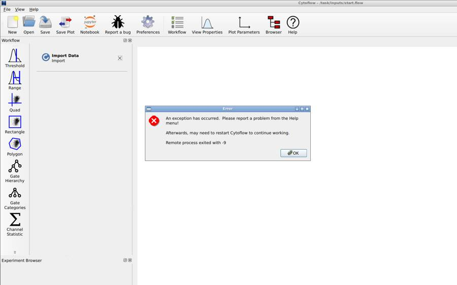
free -m; nproc; ps aux --sort=-rss | head -15; dmesg 2>/dev/null | tail -5; cat /sys/fs/cgroup/memory.max 2>/dev/null; cat /sys/fs/cgroup/memory.peak 2>/dev/null; cat /sys/fs/cgroup/memory.events 2>/dev/null
Exit code 1
total used free shared buff/cache available
Mem: 7949 920 6922 15 350 7028
Swap: 0 0 0
4
USER PID %CPU %MEM VSZ RSS TTY STAT START TIME COMMAND
cfapp 841 1.9 4.9 3574416 400688 ? Sl 08:16 0:04 /opt/cytoflow/cytoflow-1.3.2/cytoflow
root 1018 1.6 2.4 5684476 199060 ? Sl 08:16 0:03 claude --verbose --output-format=stream-json --effort xhigh --model claude-opus-5-5 --permission-mode=bypassPermissions --print
root 818 0.0 0.4 236740 37004 ? S 08:16 0:00 Xvfb :1 -screen 0 1440x900x24 -nolisten tcp
root 827 0.1 0.2 58956 23060 ? S 08:16 0:00 /usr/bin/python3 /usr/bin/websockify --web=/usr/share/novnc 6080 localhost:5900
cfapp 855 0.0 0.2 84344 22088 ? S 08:16 0:00 /opt/cytoflow/cytoflow-1.3.2/cytoflow -B -S -I -c from multiprocessing.resource_tracker import main;main(9)
cfapp 930 0.0 0.1 5163792 14880 ? Sl 08:16 0:00 /opt/cytoflow/cytoflow-1.3.2/_internal/PyQt5/Qt5/libexec/QtWebEngineProcess --type=zygote --application-name=cytoflow --webengine-schemes=qrc:sLV --lang=en
agent 836 0.0 0.1 142584 11080 ? Sl 08:16 0:00 openbox
root 826 0.1 0.1 42244 9512 ? S 08:16 0:00 x11vnc -display :1 -forever -shared -nopw -quiet -rfbport 5900
cfapp 913 0.0 0.0 209224 7504 ? S 08:16 0:00 /opt/cytoflow/cytoflow-1.3.2/_internal/PyQt5/Qt5/libexec/QtWebEngineProcess --type=zygote --application-name=cytoflow --webengine-schemes=qrc:sLV --lang=en
cfapp 911 0.0 0.0 209224 7500 ? S 08:16 0:00 /opt/cytoflow/cytoflow-1.3.2/_internal/PyQt5/Qt5/libexec/QtWebEngineProcess --type=zygote --application-name=cytoflow --webengine-schemes=qrc:sLV --lang=en
cfapp 890 0.0 0.0 209224 7488 ? S 08:16 0:00 /opt/cytoflow/cytoflow-1.3.2/_internal/PyQt5/Qt5/libexec/QtWebEngineProcess --type=zygote --no-zygote-sandbox --application-name=cytoflow --webengine-schemes=qrc:sLV --lang=en
root 1143 0.0 0.0 8296 4388 ? R 08:19 0:00 ps aux --sort=-rss
root 1140 0.0 0.0 4896 3588 ? Ss 08:19 0:00 /bin/bash -c source /root/.claude/shell-snapshots/snapshot-bash-1793866588677-lewdrs.sh 2>/dev/null || true && shopt -u extglob 2>/dev/null || true && { \builtin unalias -- 'which'; \builtin unset -f -- 'which'; } >/dev/null 2>&1 || true && { \builtin unalias -- 'unsetenv'; \builtin unset -f -- 'unsetenv'; } >/dev/null 2>&1 || true && eval 'free -m; nproc; ps aux --sort=-rss | head -15; dmesg 2>/dev/null | tail -5; cat /sys/fs/cgroup/memory.max 2>/dev/null; cat /sys/fs/cgroup/memory.peak 2>/dev/null; cat /sys/fs/cgroup/memory.events 2>/dev/null' < /dev/null && pwd -P >| /tmp/claude-c9f7-cwd
root 1144 0.0 0.0 3148 1912 ? S 08:19 0:00 head -15
[ 142.860792] [ 1018] 0 1018 1421119 36871 36869 2 0 1060864 0 0 claude
[ 142.860870] [ 1121] 0 1121 1224 93 91 2 0 49152 0 0 bash
[ 142.860955] [ 1122] 0 1122 784 29 28 1 0 45056 0 0 sleep
[ 142.861028] oom-kill:constraint=CONSTRAINT_NONE,nodemask=(null),cpuset=/,mems_allowed=0,global_oom,task_memcg=/,task=cytoflow,pid=857,uid=1002
[ 142.861164] Out of memory: Killed process 857 (cytoflow) total-vm:8566144kB, anon-rss:7316264kB, file-rss:8kB, shmem-rss:28kB, UID:1002 pgtables:14896kB oom_score_adj:0ls /opt/cytoflow/cytoflow-1.3.2/_internal | head -80; find /opt/cytoflow -path "*cytoflow/experiment*" | head; id; swapon --show; cat /proc/sys/vm/overcommit_memory
CFP_Well_A4.fcs Cython PIL PyQt5 _DP.cpython-312-x86_64-linux-gnu.so _Logicle.cpython-312-x86_64-linux-gnu.so _cffi_backend.cpython-312-x86_64-linux-gnu.so apptools-5.3.1.dist-info array_api_compat-1.15.0.dist-info attrs-26.1.0.dist-info backports base_library.zip bottleneck bottleneck-1.4.2.dist-info brotlicffi browser.svg bug.svg camel-0.1.2-py3.7.egg-info cbayesian.cpython-312-x86_64-linux-gnu.so certifi cffi-2.0.0.dist-info cimage.cpython-312-x86_64-linux-gnu.so contourpy contourpy-1.3.3.dist-info crbfgs.cpython-312-x86_64-linux-gnu.so cryptography cryptography-49.0.0.dist-info cuvette.jpg cycler-0.12.1.dist-info cython-3.2.5.dist-info cytoflow-1.3.2.dist-info cytoflow.desktop cytoflowgui dateutil dcor-0.7.dist-info density_plot.svg density_plot_2.svg envisage-7.0.3.dist-info export.svg fastjsonschema-2.21.2.dist-info fdasrsf-2.6.10.dist-info findiff-0.13.1.dist-info fontTools fonttools-4.63.0.dist-info fpls_warp.cpython-312-x86_64-linux-gnu.so gear.svg gmpy2 help.svg icon.png icon.svg igraph igraph-0.11.9.dist-info importlib_metadata-8.7.1.dist-info importlib_resources-6.4.0.dist-info ipython.svg joblib-1.5.3.dist-info jsonschema jsonschema-4.25.1.dist-info jsonschema_specifications jsonschema_specifications-2025.9.1.dist-info jupyter.svg jupyter_core-5.9.1.dist-info kiwisolver kiwisolver-1.4.9.dist-info lazy_loader-0.5.dist-info libLerc.so.4 libQt5Bluetooth.so.5 libQt5Core.so.5 libQt5DBus.so.5 libQt5EglFSDeviceIntegration.so.5 libQt5EglFsKmsSupport.so.5 libQt5Gui.so.5 libQt5Multimedia.so.5 libQt5MultimediaGstTools.so.5 libQt5MultimediaWidgets.so.5 libQt5Network.so.5 libQt5OpenGL.so.5 libQt5Pdf.so.5 libQt5Positioning.so.5 libQt5PrintSupport.so.5 uid=0(root) gid=0(root) groups=0(root) 0
df -h / /tmp /task; cat /proc/meminfo | head -5
Filesystem Size Used Avail Use% Mounted on /dev/root 504G 4.1G 500G 1% / /dev/root 504G 4.1G 500G 1% / /dev/root 504G 4.1G 500G 1% / MemTotal: 8140732 kB MemFree: 7019948 kB MemAvailable: 7181044 kB Buffers: 6312 kB Cached: 395564 kB
ls /opt/cytoflow/cytoflow-1.3.2/_internal/ | grep -i -E "cyto|pyz|\.zip"; ls /opt/cytoflow/cytoflow-1.3.2/_internal/cytoflowgui | head; ls /opt/cytoflow/cytoflow-1.3.2/
base_library.zip cytoflow-1.3.2.dist-info cytoflow.desktop cytoflowgui editors help op_plugins preferences.ini view_plugins _internal cytoflow
fallocate -l 16G /swapfile && chmod 600 /swapfile && mkswap /swapfile && swapon /swapfile; swapon --show; free -m
Setting up swapspace version 1, size = 16 GiB (17179865088 bytes)
no label, UUID=2808c94e-787d-4e94-becd-49b21be860f0
NAME TYPE SIZE USED PRIO
/swapfile file 16G 0B -1
total used free shared buff/cache available
Mem: 7949 938 6846 15 408 7011
Swap: 16383 0 16383ps -ef --forest | grep -v grep | grep -E -B2 -A2 "cytoflow|Xvfb|openbox" | head -30; cat /proc/841/environ 2>/dev/null | tr '\0' '\n' | head -30
root 812 1 0 08:16 ? 00:00:00 /usr/bin/tini -- /entrypoint.sh sh -c sleep infinity root 815 812 0 08:16 ? 00:00:00 \_ /bin/bash /entrypoint.sh sh -c sleep infinity root 818 815 0 08:16 ? 00:00:00 \_ Xvfb :1 -screen 0 1440x900x24 -nolisten tcp root 825 815 0 08:16 ? 00:00:00 \_ /bin/bash /entrypoint.sh sh -c sleep infinity root 828 825 0 08:16 ? 00:00:00 | \_ runuser -u agent -- env DISPLAY=:1 HOME=/home/agent LANG=C.UTF-8 LC_ALL=C.UTF-8 openbox agent 836 828 0 08:16 ? 00:00:00 | \_ openbox root 826 815 0 08:16 ? 00:00:00 \_ x11vnc -display :1 -forever -shared -nopw -quiet -rfbport 5900 root 827 815 0 08:16 ? 00:00:00 \_ /usr/bin/python3 /usr/bin/websockify --web=/usr/share/novnc 6080 localhost:5900 root 832 815 0 08:16 ? 00:00:00 \_ /bin/bash /entrypoint.sh sh -c sleep infinity root 833 832 0 08:16 ? 00:00:00 \_ runuser -u cfapp -- env DISPLAY=:1 HOME=/home/cfapp XDG_RUNTIME_DIR=/tmp/runtime-cfapp LANG=C.UTF-8 LC_ALL=C.UTF-8 bash -c umask 002; cd /task; exec start-cytoflow cfapp 837 833 0 08:16 ? 00:00:00 \_ /bin/bash /usr/local/bin/start-cytoflow cfapp 841 837 1 08:16 ? 00:00:04 \_ /opt/cytoflow/cytoflow-1.3.2/cytoflow cfapp 855 841 0 08:16 ? 00:00:00 \_ /opt/cytoflow/cytoflow-1.3.2/cytoflow -B -S -I -c from multiprocessing.resource_tracker import main;main(9) cfapp 890 841 0 08:16 ? 00:00:00 \_ /opt/cytoflow/cytoflow-1.3.2/_internal/PyQt5/Qt5/libexec/QtWebEngineProcess --type=zygote --no-zygote-sandbox --application-name=cytoflow --webengine-schemes=qrc:sLV --lang=en cfapp 911 841 0 08:16 ? 00:00:00 \_ /opt/cytoflow/cytoflow-1.3.2/_internal/PyQt5/Qt5/libexec/QtWebEngineProcess --type=zygote --application-name=cytoflow --webengine-schemes=qrc:sLV --lang=en cfapp 913 911 0 08:16 ? 00:00:00 \_ /opt/cytoflow/cytoflow-1.3.2/_internal/PyQt5/Qt5/libexec/QtWebEngineProcess --type=zygote --application-name=cytoflow --webengine-schemes=qrc:sLV --lang=en cfapp 930 913 0 08:16 ? 00:00:00 \_ /opt/cytoflow/cytoflow-1.3.2/_internal/PyQt5/Qt5/libexec/QtWebEngineProcess --type=zygote --application-name=cytoflow --webengine-schemes=qrc:sLV --lang=en root 1016 1 0 08:16 ? 00:00:00 su root -s /bin/bash -c set -o pipefail; export PATH=$HOME/.local/bin:$PATH; cd /task; IS_SANDBOX=1 CLAUDE_CODE_MAX_OUTPUT_TOKENS=128000 ANTHROPIC_MODEL=claude-opus-5-5 CLAUDE_CODE_EFFORT_LEVEL=xhigh claude --verbose --output-format=stream-json --effort xhigh --model claude-opus-5-5 --permission-mode=bypassPermissions --print < /tmp/instruction.md > /logs/agent/claude-code.txt 2>&1; echo exit=$? root 1017 1016 0 08:16 ? 00:00:00 \_ bash -c set -o pipefail; export PATH=$HOME/.local/bin:$PATH; cd /task; IS_SANDBOX=1 CLAUDE_CODE_MAX_OUTPUT_TOKENS=128000 ANTHROPIC_MODEL=claude-opus-5-5 CLAUDE_CODE_EFFORT_LEVEL=xhigh claude --verbose --output-format=stream-json --effort xhigh --model claude-opus-5-5 --permission-mode=bypassPermissions --print < /tmp/instruction.md > /logs/agent/claude-code.txt 2>&1; echo exit=$? MODAL_IMAGE_ID=im-3NjVPdk1JR4XPwdC4npNNQ QT_XKB_CONFIG_ROOT=/usr/share/X11/xkb NODE_OPTIONS=--dns-result-order=ipv4first PYTHONHASHSEED=0 OFFLINE=0 MODAL_SANDBOX_ID=sb-01M6NCEYGNT08Q42EX31WFSCQW SCREEN_GEOMETRY=1440x900x24 MODAL_CLOUD_PROVIDER=CLOUD_PROVIDER_AWS PWD=/task SOURCE_DATE_EPOCH=1641013200 LOGNAME=cfapp ORT_INTER_OP_NUM_THREADS=4 OPENBLAS_NUM_THREADS=4 ORT_INTRA_OP_NUM_THREADS=4 HOME=/home/cfapp LANG=C.UTF-8 MODAL_REGION=us-east SSL_CERT_DIR=/etc/ssl/certs PIP_DEFAULT_TIMEOUT=30 UV_BREAK_SYSTEM_PACKAGES=1 PYTHONPATH=/pkg/:/root/ TERM=xterm XLOCALEDIR=/usr/share/X11/locale USER=cfapp DISPLAY=:1 SHLVL=2 PIP_ROOT_USER_ACTION=ignore MODAL_CONTAINER_ARGUMENTS_PATH=/__modal/.container-arguments/data.bin XDG_RUNTIME_DIR=/tmp/runtime-cfapp BLIS_NUM_THREADS=4
cat /usr/local/bin/start-cytoflow; cat /usr/local/bin/cu | head -50
#!/bin/bash
# Launch Cytoflow full-screen-ish; restart it if the agent closes it.
BIN=$(find /opt/cytoflow -maxdepth 3 -type f -name 'cytoflow' -perm -u+x | head -1)
[ -z "$BIN" ] && { echo "cytoflow binary not found under /opt/cytoflow"; exit 1; }
while true; do
"$BIN" >/tmp/cytoflow.log 2>&1
sleep 1
done
#!/bin/bash
# Computer-use helper: the agent's only way to act on the screen.
# cu screenshot [path] -> PNG of the screen (default /tmp/screen.png); prints path
# cu click X Y [left|right|double]
# cu move X Y | cu drag X1 Y1 X2 Y2 | cu scroll X Y up|down [N]
# cu type "text" (keystrokes) | cu paste "text" (clipboard) | cu key KEYS (e.g. ctrl+s, Return)
# cu cursor -> current mouse position
export DISPLAY=${DISPLAY:-:1}
cmd=$1; shift
case "$cmd" in
screenshot) out=${1:-/tmp/screen.png}; scrot -o "$out" && echo "$out" ;;
click) xdotool mousemove "$1" "$2"; case "${3:-left}" in
left) xdotool click 1;; right) xdotool click 3;; double) xdotool click --repeat 2 1;; esac ;;
move) xdotool mousemove "$1" "$2" ;;
drag) xdotool mousemove "$1" "$2" mousedown 1 mousemove --sync "$3" "$4" mouseup 1 ;;
scroll) xdotool mousemove "$1" "$2"; b=$([ "$3" = up ] && echo 4 || echo 5); xdotool click --repeat "${4:-3}" $b ;;
type) xdotool type --delay 50 -- "$1" ;;
# paste: put text on the clipboard (detached owner process so it survives this command) then ctrl+v
# paste: own the clipboard (no -loops: Qt asks for TARGETS first, then the text), press ctrl+v,
# give Qt a moment to fetch it, then release. Robust both locally and on Modal.
paste) printf '%s' "$1" | xclip -quiet -selection clipboard -i >/dev/null 2>&1 & cp=$!
sleep 0.3; xdotool key ctrl+v; sleep 1; kill $cp 2>/dev/null; true ;;
key) xdotool key -- "$1" ;;
cursor) xdotool getmouselocation ;;
*) sed -n '2,9p' "$0"; exit 1 ;;
esactail -30 /tmp/cytoflow.log
QXcbIntegration: Cannot create platform OpenGL context, neither GLX nor EGL are enabled 2026-11-05 08:18:25,444 ERROR:root:Remote process exited with -9
cd /task; cu click 924 483; sleep 1; pkill -f "/opt/cytoflow/cytoflow-1.3.2/cytoflow$" ; sleep 8; ps aux | grep cytoflow | grep -v grep | head -3; cu screenshot /tmp/screen.png
root 833 0.0 0.0 4748 328 ? S 08:16 0:00 runuser -u cfapp -- env DISPLAY=:1 HOME=/home/cfapp XDG_RUNTIME_DIR=/tmp/runtime-cfapp LANG=C.UTF-8 LC_ALL=C.UTF-8 bash -c umask 002; cd /task; exec start-cytoflow cfapp 837 0.0 0.0 4764 2140 ? S 08:16 0:00 /bin/bash /usr/local/bin/start-cytoflow cfapp 855 0.0 0.0 0 0 ? Z 08:16 0:00 [cytoflow] <defunct> /tmp/screen.png
cd /task; sleep 10; ps aux | grep cytoflow | grep -v grep | head -5; cu screenshot /tmp/screen.png
root 833 0.0 0.0 4748 328 ? S 08:16 0:00 runuser -u cfapp -- env DISPLAY=:1 HOME=/home/cfapp XDG_RUNTIME_DIR=/tmp/runtime-cfapp LANG=C.UTF-8 LC_ALL=C.UTF-8 bash -c umask 002; cd /task; exec start-cytoflow cfapp 837 0.0 0.0 4764 2140 ? S 08:16 0:00 /bin/bash /usr/local/bin/start-cytoflow cfapp 855 0.0 0.0 0 0 ? Z 08:16 0:00 [cytoflow] <defunct> cfapp 1213 20.6 6.4 3672872 523652 ? Sl 08:20 0:04 /opt/cytoflow/cytoflow-1.3.2/cytoflow cfapp 1225 0.9 0.4 84344 39428 ? S 08:20 0:00 /opt/cytoflow/cytoflow-1.3.2/cytoflow -B -S -I -c from multiprocessing.resource_tracker import main;main(9) /tmp/screen.png
{
"file_path": "/tmp/screen.png"
}
cd /task; cu click 915 493; sleep 1; cu click 90 75; sleep 2; cu click 1038 744; cu paste "/task/inputs/start.flow"; sleep 0.5; cu key Return; sleep 3; cu screenshot /tmp/screen.png
{
"file_path": "/tmp/screen.png"
}/tmp/screen.png

cd /task; cu click 836 449; sleep 2; cu click 240 180; sleep 2; cu screenshot /tmp/screen.png
/tmp/screen.png
{
"file_path": "/tmp/screen.png"
}
cd /task; cu click 294 353; sleep 4; cu screenshot /tmp/screen.png
/tmp/screen.png
{
"file_path": "/tmp/screen.png"
}
cd /task; cu click 133 342; sleep 2; cu screenshot /tmp/screen.png
/tmp/screen.png
{
"file_path": "/tmp/screen.png"
}
cd /task; cu click 1189 578; sleep 5; cu screenshot /tmp/screen.png
/tmp/screen.png
{
"file_path": "/tmp/screen.png"
}
cd /task; cu click 139 705; sleep 1; cu click 139 611; sleep 1; cu screenshot /tmp/screen.png
/tmp/screen.png
{
"file_path": "/tmp/screen.png"
}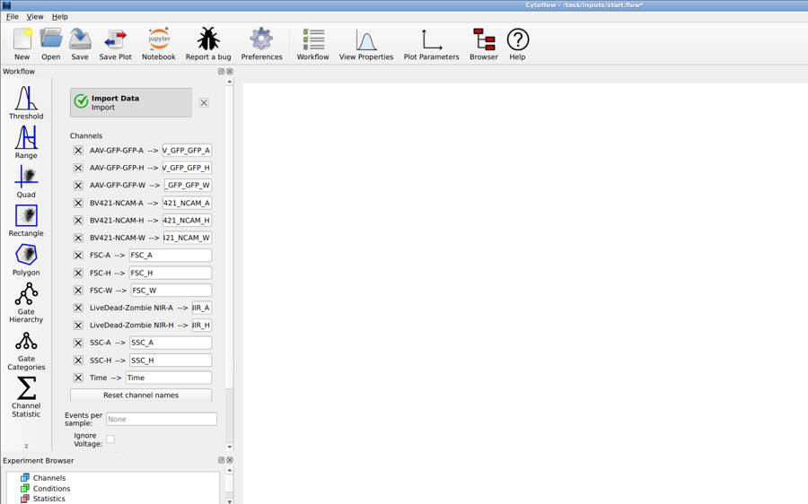
cd /task; for y in 580 518 487 424 393 330 299; do cu click 139 $y; sleep 1; done; cu screenshot /tmp/screen.png
/tmp/screen.png
{
"file_path": "/tmp/screen.png"
}
cd /task; cu click 294 673; for i in $(seq 1 12); do sleep 15; free -m | awk 'NR>1{printf "%s used=%s ", $1, $3}'; echo; done; cu screenshot /tmp/screen.pngMem: used=4143 Swap: used=0 Mem: used=4935 Swap: used=9 Mem: used=4225 Swap: used=9 Mem: used=4221 Swap: used=9 Mem: used=4221 Swap: used=9 Mem: used=4230 Swap: used=9 Mem: used=4222 Swap: used=9 Mem: used=4222 Swap: used=9 Mem: used=4221 Swap: used=9 Mem: used=4219 Swap: used=9 Mem: used=4222 Swap: used=9 Mem: used=4220 Swap: used=9 /tmp/screen.png
{
"file_path": "/tmp/screen.png"
}cd /task; cu click 21 29; sleep 1; cu screenshot /tmp/screen.png
{
"file_path": "/tmp/screen.png"
}/tmp/screen.png

cd /task; cu click 66 101; sleep 2; cu screenshot /tmp/screen.png
{
"file_path": "/tmp/screen.png"
}/tmp/screen.png
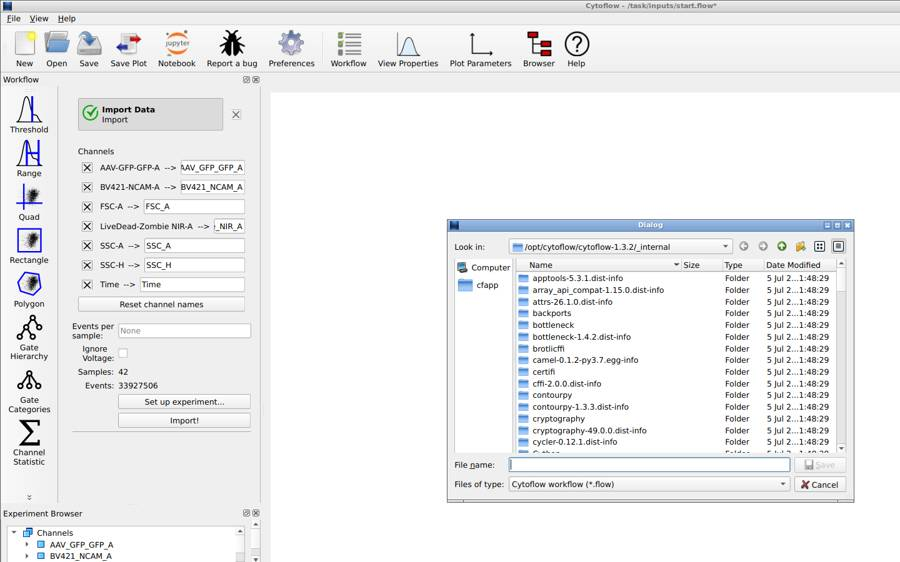
cd /task; ls -ld /task/outputs; cu click 1038 744; cu paste "/task/outputs/workflow.flow"; sleep 0.5; cu key Return; sleep 3; ls -la /task/outputs; cu screenshot /tmp/screen.png
drwxrwsrwx 2 agent task 4096 Nov 5 08:15 /task/outputs total 28 drwxrwsrwx 2 agent task 4096 Nov 5 08:26 . drwxr-xr-x 4 root root 4096 Nov 5 08:15 .. -rw-rw-r-- 1 cfapp task 18839 Nov 5 08:26 workflow.flow /tmp/screen.png
cd /task; head -60 outputs/workflow.flow; grep -n "events\|channels_list" -A12 outputs/workflow.flow | head -60
- !workflow-item;5
channels:
- AAV_GFP_GFP_A
- BV421_NCAM_A
- FSC_A
- LiveDead_Zombie_NIR_A
- SSC_A
- SSC_H
- Time
conditions:
control_type: !pandas-series;3
data:
- none
dtype: category
index: !pandas-rangeindex;1
name: null
start: 0
step: 1
stop: 1
dose_vg_per_cell: !pandas-series;3
data:
- '10000'
- '5000'
- '50000'
dtype: object
index: !pandas-index;1
dtype: int64
name: null
values:
- 1
- 0
- 2
is_control: !pandas-series;3
data:
- 'false'
dtype: category
index: !pandas-rangeindex;1
name: null
start: 0
step: 1
stop: 1
replicate: !pandas-series;3
data:
- '1'
- '2'
dtype: object
index: !pandas-rangeindex;1
name: null
start: 0
step: 1
stop: 2
well: !pandas-series;3
data:
- A1
- A10
- A11
- A12
- A2
- A3
- A4
262: channels_list:
263- - !import-channel;1
264- channel: AAV-GFP-GFP-A
265- name: AAV_GFP_GFP_A
266- - !import-channel;1
267- channel: BV421-NCAM-A
268- name: BV421_NCAM_A
269- - !import-channel;1
270- channel: FSC-A
271- name: FSC_A
272- - !import-channel;1
273- channel: LiveDead-Zombie NIR-A
274- name: LiveDead_Zombie_NIR_A
--
290: events: null
291- ignore_v_bool: false
292- name_metadata: null
293- tubes:
294- - !tube;1
295- conditions:
296- control_type: none
297- dose_vg_per_cell: '5000'
298- is_control: 'false'
299- replicate: '1'
300- well: A1
301- file: /task/inputs/raw/Serotype panel_2_Rep2_Group_A1.fcs
302- - !tube;1cd /task; cu click 46 462; sleep 3; cu screenshot /tmp/screen.png
{
"file_path": "/tmp/screen.png"
}/tmp/screen.png

cd /task; cu click 295 323; cu type "Cells"; cu key Return; sleep 1; cu click 281 353; sleep 1; cu screenshot /tmp/screen.png
{
"file_path": "/tmp/screen.png"
}/tmp/screen.png

cd /task; cu click 218 402; sleep 1; cu click 281 384; sleep 1; cu screenshot /tmp/screen.png
{
"file_path": "/tmp/screen.png"
}/tmp/screen.png

cd /task; cu click 218 480; sleep 5; cu screenshot /tmp/screen.png
{
"file_path": "/tmp/screen.png"
}/tmp/screen.png
cd /task; sleep 5; cu click 652 75; sleep 3; cu screenshot /tmp/screen.png
{
"file_path": "/tmp/screen.png"
}/tmp/screen.png
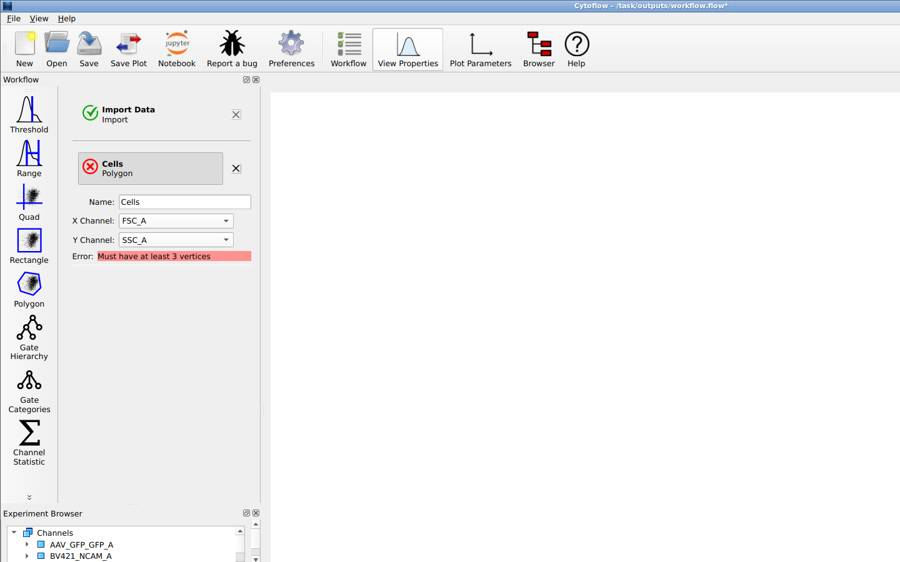
top -b -n1 | head -15; free -m
top - 08:27:05 up 11 min, 0 user, load average: 0.63, 0.27, 0.14
Tasks: 108 total, 3 running, 99 sleeping, 0 stopped, 6 zombie
%Cpu(s): 8.7 us, 26.1 sy, 0.0 ni, 52.2 id, 6.5 wa, 0.0 hi, 6.5 si, 0.0 st
MiB Mem : 7949.9 total, 102.7 free, 7898.9 used, 171.5 buff/cache
MiB Swap: 16384.0 total, 7957.1 free, 8426.9 used. 51.0 avail Mem
PID USER PR NI VIRT RES SHR S %CPU %MEM TIME+ COMMAND
81 root 20 0 0 0 0 R 63.6 0.0 0:07.31 kswapd0
1227 cfapp 20 0 15.2g 7.1g 3956 R 54.5 91.9 0:54.13 cytoflow
1 root -2 0 12664 8 8 S 0.0 0.0 0:00.08 runch-age+
2 root 20 0 0 0 0 S 0.0 0.0 0:00.00 kthreadd
3 root 20 0 0 0 0 S 0.0 0.0 0:00.00 pool_work+
4 root 0 -20 0 0 0 I 0.0 0.0 0:00.00 kworker/R+
5 root 0 -20 0 0 0 I 0.0 0.0 0:00.00 kworker/R+
6 root 0 -20 0 0 0 I 0.0 0.0 0:00.00 kworker/R+
total used free shared buff/cache available
Mem: 7949 7868 133 8 171 81
Swap: 16383 8495 7888for i in 1 2 3 4; do sleep 10; free -m | awk 'NR>1{printf "%s used=%s ", $1, $3}'; top -b -n1 | grep cytoflow | head -2; doneMem: used=7915 Swap: used=11306 1227 cfapp 20 0 18.9g 7.1g 1380 D 36.4 91.9 1:05.37 cytoflow 855 cfapp 20 0 0 0 0 Z 0.0 0.0 0:00.19 cytoflow Mem: used=7881 Swap: used=11751 1227 cfapp 20 0 18.9g 6.7g 868 D 40.0 86.3 1:09.89 cytoflow 855 cfapp 20 0 0 0 0 Z 0.0 0.0 0:00.19 cytoflow Mem: used=7869 Swap: used=12087 1227 cfapp 20 0 19.7g 7.2g 3544 R 40.0 92.4 1:14.89 cytoflow 855 cfapp 20 0 0 0 0 Z 0.0 0.0 0:00.19 cytoflow Mem: used=7919 Swap: used=12740 1227 cfapp 20 0 19.7g 6.5g 784 R 40.0 84.0 1:19.48 cytoflow 855 cfapp 20 0 0 0 0 Z 0.0 0.0 0:00.19 cytoflow
kill -9 1227; sleep 3; cd /task; cu screenshot /tmp/screen.png; free -m
{
"file_path": "/tmp/screen.png"
}/tmp/screen.png
total used free shared buff/cache available
Mem: 7949 487 7409 1 274 7462
Swap: 16383 589 15794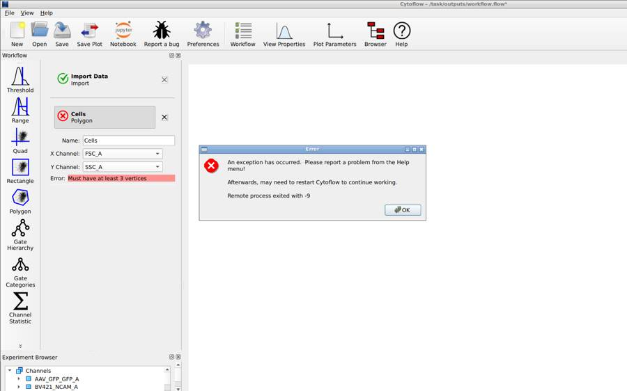
cd /task; cu click 924 483; sleep 1; pkill -9 -f "^/opt/cytoflow/cytoflow-1.3.2/cytoflow$"; sleep 15; ps aux | grep "cytoflow" | grep -v -E "grep|QtWeb" ; cu screenshot /tmp/screen.png
root 833 0.0 0.0 4748 12 ? S 08:16 0:00 runuser -u cfapp -- env DISPLAY=:1 HOME=/home/cfapp XDG_RUNTIME_DIR=/tmp/runtime-cfapp LANG=C.UTF-8 LC_ALL=C.UTF-8 bash -c umask 002; cd /task; exec start-cytoflow cfapp 837 0.0 0.0 4764 1932 ? S 08:16 0:00 /bin/bash /usr/local/bin/start-cytoflow cfapp 855 0.0 0.0 0 0 ? Z 08:16 0:00 [cytoflow] <defunct> cfapp 1225 0.0 0.0 0 0 ? Z 08:20 0:00 [cytoflow] <defunct> cfapp 1673 30.1 6.4 3680032 522568 ? Sl 08:28 0:04 /opt/cytoflow/cytoflow-1.3.2/cytoflow cfapp 1684 1.4 0.4 84344 39328 ? S 08:28 0:00 /opt/cytoflow/cytoflow-1.3.2/cytoflow -B -S -I -c from multiprocessing.resource_tracker import main;main(9) cfapp 1686 24.8 3.8 1458440 314308 ? Sl 08:28 0:02 /opt/cytoflow/cytoflow-1.3.2/cytoflow --multiprocessing-fork tracker_fd=10 pipe_handle=14 /tmp/screen.png
ls /opt/cytoflow/cytoflow-1.3.2/_internal/cytoflowgui/ /opt/cytoflow/cytoflow-1.3.2/_internal/cytoflowgui/help | head -40; grep -ril "density" /opt/cytoflow/cytoflow-1.3.2/_internal/cytoflowgui/help 2>/dev/null | head
/opt/cytoflow/cytoflow-1.3.2/_internal/cytoflowgui/: editors help op_plugins preferences.ini view_plugins /opt/cytoflow/cytoflow-1.3.2/_internal/cytoflowgui/help: _images _sphinx_design_static _static genindex.html objects.inv operations plot_directive reference.html views /opt/cytoflow/cytoflow-1.3.2/_internal/cytoflowgui/help/views/long_table.html /opt/cytoflow/cytoflow-1.3.2/_internal/cytoflowgui/help/reference.html /opt/cytoflow/cytoflow-1.3.2/_internal/cytoflowgui/help/views/kde_1d.html /opt/cytoflow/cytoflow-1.3.2/_internal/cytoflowgui/help/views/histogram_2d.html /opt/cytoflow/cytoflow-1.3.2/_internal/cytoflowgui/help/views/bar_chart.html /opt/cytoflow/cytoflow-1.3.2/_internal/cytoflowgui/help/views/kde_2d.html /opt/cytoflow/cytoflow-1.3.2/_internal/cytoflowgui/help/views/density.html /opt/cytoflow/cytoflow-1.3.2/_internal/cytoflowgui/help/views/export_fcs.html /opt/cytoflow/cytoflow-1.3.2/_internal/cytoflowgui/help/views/density-1.py /opt/cytoflow/cytoflow-1.3.2/_internal/cytoflowgui/help/operations/autofluorescence.html
cd /opt/cytoflow/cytoflow-1.3.2/_internal/cytoflowgui/help; ls operations views; python3 -c "
import re,sys
for f in ['operations/polygon.html','operations/range2d.html','operations/channel_stat.html','views/table.html']:
try:
t=open(f).read()
except Exception as e: print(f,e); continue
t=re.sub(r'<script.*?</script>','',t,flags=re.S); t=re.sub(r'<style.*?</style>','',t,flags=re.S)
t=re.sub(r'<[^>]+>','',t); t=re.sub(r'\n\s*\n+','\n',t)
print('=====',f); print(t[:3000])
"operations:
autofluorescence-1.png
autofluorescence-1.py
autofluorescence.html
bead_calibration-1.png
bead_calibration-1.py
bead_calibration.html
binning-1.png
binning-1.py
binning.html
bleedthrough_linear-1.png
bleedthrough_linear-1.py
bleedthrough_linear.html
category.html
channel_stat.html
color_translation-1.png
color_translation-1.py
color_translation.html
density-1.png
density-1.py
density.html
flowclean-1.png
flowclean-1.py
flowclean.html
flowpeaks-1.py
flowpeaks-1_00.png
flowpeaks-1_01.png
flowpeaks.html
gaussian_1d-1.png
gaussian_1d-1.py
gaussian_1d.html
gaussian_2d-1.png
gaussian_2d-1.py
gaussian_2d.html
hierarchy.html
import_op.html
kmeans-1.png
kmeans-1.py
kmeans.html
mst.html
multi_channel_stat.html
pca.html
polygon-1.png
polygon-1.py
polygon.html
quad-1.png
quad-1.py
quad.html
range-1.png
range-1.py
range.html
range2d-1.png
range2d-1.py
range2d.html
ratio.html
register-1.png
register-1.py
register.html
som-1.png
som-1.py
som.html
tasbe-1.png
tasbe-1.py
tasbe-2.png
tasbe-2.py
tasbe-3.png
tasbe-3.py
tasbe-4.png
tasbe-4.py
tasbe.html
threshold-1.png
threshold-1.py
threshold.html
tsne-1.png
tsne-1.py
tsne.html
xform_stat.html
views:
bar_chart-1.png
bar_chart-1.py
bar_chart.html
density-1.png
density-1.py
density.html
export_fcs.html
histogram-1.png
histogram-1.py
histogram.html
histogram_2d-1.png
histogram_2d-1.py
histogram_2d.html
kde_1d-1.png
kde_1d-1.py
kde_1d.html
kde_2d-1.png
kde_2d-1.py
kde_2d.html
long_table-1.png
long_table-1.py
long_table.html
matrix-1.png
matrix-1.py
matrix.html
mst-1.png
mst-1.py
mst.html
parallel_coords-1.png
parallel_coords-1.py
parallel_coords.html
radviz-1.png
radviz-1.py
radviz.html
scatterplot-1.png
scatterplot-1.py
scatterplot.html
stats_1d-1.png
stats_1d-1.py
stats_1d.html
stats_2d-1.png
stats_2d-1.py
stats_2d.html
table-1.png
table-1.py
table.html
violin-1.png
violin-1.py
violin.html
===== operations/polygon.html
Polygon Gate
Polygon Gate
Draw a polygon gate. To add vertices, use a single-click; to close the
polygon, click the first vertex a second time.
Name
The operation name. Used to name the new metadata field that’s created by
this module.
X Channel
The name of the channel on the gate’s X axis.
Y Channel
The name of the channel on the gate’s Y axis.
X Scale
The scale of the X axis for the interactive plot.
Y Scale
The scale of the Y axis for the interactive plot
Hue facet
Show different experimental conditions in different colors.
Subset
Show only a subset of the data.
===== operations/range2d.html
2D Range Gate
2D Range Gate
Draw a 2-dimensional range gate (eg, a rectangle). To set the gate,
click-and-drag on the plot.
Name
The operation name. Used to name the new metadata field that’s created by
this operation.
X channel
The name of the channel on the X axis.
X Low
The low threshold in the X channel.
X High
The high threshold in the X channel.
Y channel
The name of the channel on the Y axis.
Y Low
The low threshold in the Y channel.
Y High
The high threshold in the Y channel.
X Scale
The scale of the X axis for the interactive plot.
Y Scale
The scale of the Y axis for the interactive plot
Hue facet
Show different experimental conditions in different colors.
Subset
Show only a subset of the data.
===== operations/channel_stat.html
Channel statistic
Channel statistic
Apply a function to subsets of a data set, and add it as a statistic
to the experiment.
First, the module groups the data by the unique values of the variables
in By, then applies Function to the Channel in each group.
Name
The operation name. Becomes the new statistic’s name.
Channel
The channel to apply the function to.
Function
The function to compute on each group.
Subset
Only apply the function to a subset of the data. Useful if the function
is very slow.
===== views/table.html
Table
Table
Make a table out of a statistic. The table can then be exported.
Statistic
Which statistic to view.
Feature
The column in the statistic to view (often a channel name.)
Rows
Which variable to use for the rows
Subrows
Which variable to use for subrows.
Columns
Which variable to use for the columns.
Subcolumns
Which variable to use for the subcolumns.
Export
Export the table to a CSV file.
Shell cwd was reset to /taskcd /opt/cytoflow/cytoflow-1.3.2/_internal/cytoflowgui/help; python3 -c "
import re,sys
for f in ['views/long_table.html','operations/flowclean.html','operations/binning.html','operations/range.html','operations/threshold.html','views/density.html','views/histogram.html']:
t=open(f).read()
t=re.sub(r'<script.*?</script>','',t,flags=re.S); t=re.sub(r'<style.*?</style>','',t,flags=re.S)
t=re.sub(r'<[^>]+>','',t); t=re.sub(r'\n\s*\n+','\n',t)
print('=====',f); print(t[:2500])
"===== views/long_table.html
Long Table
Long Table
Make a long (“tidy”) table out of a statistic. The table can then be exported.
Statistic
Which statistic to view.
Export
Export the table to a CSV file.
===== operations/flowclean.html
FlowClean
FlowClean
This module gates events from time slices whose density is low or
whose events’ fluorescence intensity varies substantially from other slices.
This is often due to a bubble or transient clog in the flow cell.
The operation assesses whether a tube is “clean” by looking for changes in
fluorescence over time, both fast changes (discontinuities) and slow changes
(drift). If the tube is clean, only low-density slices are removed. If the
tube is not clean, then a cleaning is attempted, removing slices that are
substantially statistically different than the majority. Cleanliness is then
assessed again.
This operation is applied to every tube independently – that is, to every
subset of events with a unique combination of experimental metadata.
Name
The name of the gate you can subsequently use to exclude “unclean” events.
Time channel
The channel that represents time – often HDR-T or similar.
Channels
Which fluorescence channel or channels are analyzed for variation,
and how should they be scaled before cleaning, and how they should
be scaled.
Important
This algorithm works much better when fluorescence
channels are using a scale other than linear!
Segment Size (default = 500)
The number of events in each bin in the analysis.
Density Cutoff (default = 0.05)
The minimum density CDF to keep.
Max Discontinuity (default = 0.1)
The critical “continuity” – determines how “different” an adjacent
segment must be to be for a tube to be flagged as suspicious.
Max Drift : Float (default = 0.15)
The maximum any individual channel can drift before being flagged as
needing cleaning.
Max Mean Drift : Float (default = 0.13)
The maximum the mean of all channels’ drift can be before the tube is
flagged as needing to be cleaned.
Segment Cutoff (default = 0.05)
The minimum sum-of-measures’ CDF to keep.
Detect Worst Channels (Range) (default = 0)
Try to detect the worst channels and use them to flag tubes
/ trim events. If this attribute is greater than 0, choose channels
using the range of the mean of the bins’ fluorescence distribution.
Often used in combination with Detect Worst Channels (SD).
Detect Worst Channels (SD) (default = 0)
Try to detect the worst channels and use them to flag tubes
/ trim events. If this attribute is greater than 0, choose channels
using the standard deviation of the mean of the bins’ fluorescence distribution.
Often used in combination with Detect Worst Channels (Range).
Measures (default = ("5th percentile", "20t
===== operations/binning.html
Binning
Binning
Bin data along an axis.
This operation creates equally spaced bins (in linear or log space)
along an axis and adds a condition assigning each event to a bin. The
value of the event’s condition is the left end of the bin’s interval in
which the event is located.
Name
The name of the new condition created by this operation.
Channel
The channel to apply the binning to.
Scale
The scale to apply to the channel before binning.
Bin Width
How wide should each bin be? Can only set if Scale is linear or
log (in which case, Bin Width is in log10-units.)
===== operations/range.html
Range Gate
Range Gate
Draw a range gate. To draw a new range, click-and-drag across the plot.
Name
The operation name. Used to name the new metadata field that’s created by
this module.
Channel
The name of the channel to apply the gate to.
Low
The low threshold of the gate.
High
The high threshold of the gate.
Scale
The scale of the axis for the interactive plot
Hue facet
Show different experimental conditions in different colors.
Subset
Show only a subset of the data.
===== operations/threshold.html
Threshold Gate
Threshold Gate
Draw a threshold gate. To set a new threshold, click on the plot.
Name
The operation name. Used to name the new metadata field that’s created by
this module.
Channel
The name of the channel to apply the gate to.
Threshold
The threshold of the gate.
Scale
The scale of the axis for the interactive plot
Hue facet
Show different experimental conditions in different colors.
Subset
Show only a subset of the data.
===== views/density.html
Density Plot
Density Plot
Plots a 2-dimensional density plot.
X Channel, Y Channel
The channels to plot on the X and Y axes.
X Scale, Y Scale
How to scale the X and Y axes of the plot.
Horizonal Facet
Make multiple plots. Each column has a unique value of this variable.
Vertical Facet
Make multiple plots. Each row has a unique value of this variable.
Color Scale
Scale the color palette and the color bar
Tab Facet
Make multiple plots in differen tabs; each tab’s plot has a unique value
of this variable.
Subset
Plot only a subset of the data in the experiment.
===== views/histogram.html
Histogram
Histogram
Plots a histogram.
Channel
The channel for the plot.
Scale
How to scale the X axis of the plot.
Horizonal Facet
Make multiple plots. Each column has a unique value of this variable.
Vertical Facet
Make multiple plots. Each row has a unique value of this variable.
Color Facet
Plot with multiple colors. Each color has a unique value of this variable.
Color Scale
If Color Facet is a numeric variable, use this scale for the color
bar.
Tab Facet
Make multiple plots in differen tabs; each tab’s plot has a unique value
of this variable.
Subset
Plot only a subset of the data in the experiment.
Shell cwd was reset to /taskcd /task; cu screenshot /tmp/screen.png
/tmp/screen.png
{
"file_path": "/tmp/screen.png"
}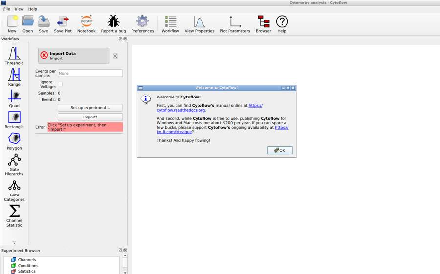
cd /task; cu click 915 493; sleep 1; cu click 90 75; sleep 2; cu click 1038 744; cu paste "/task/outputs/workflow.flow"; sleep 0.5; cu key Return; sleep 3; cu screenshot /tmp/screen.png
{
"file_path": "/tmp/screen.png"
}/tmp/screen.png

cd /task; cu click 747 449; sleep 45; free -m; cu click 240 180; sleep 2; cu screenshot /tmp/screen.png
{
"file_path": "/tmp/screen.png"
}total used free shared buff/cache available Mem: 7949 4166 2970 10 1047 3783 Swap: 16383 124 16259 /tmp/screen.png
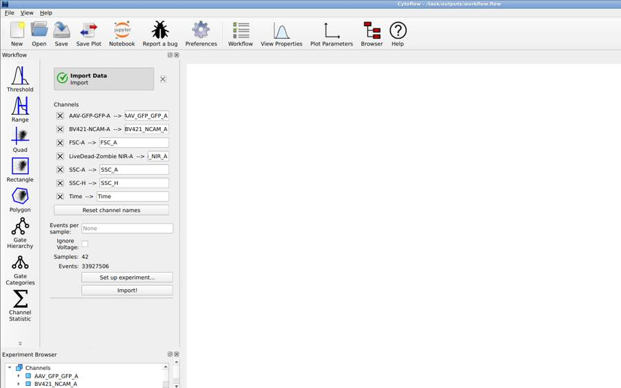
cd /task; cu click 652 75; sleep 2; cu screenshot /tmp/screen.png
{
"file_path": "/tmp/screen.png"
}/tmp/screen.png
cd /task; cu click 62 29; sleep 1; cu screenshot /tmp/screen.png
{
"file_path": "/tmp/screen.png"
}/tmp/screen.png
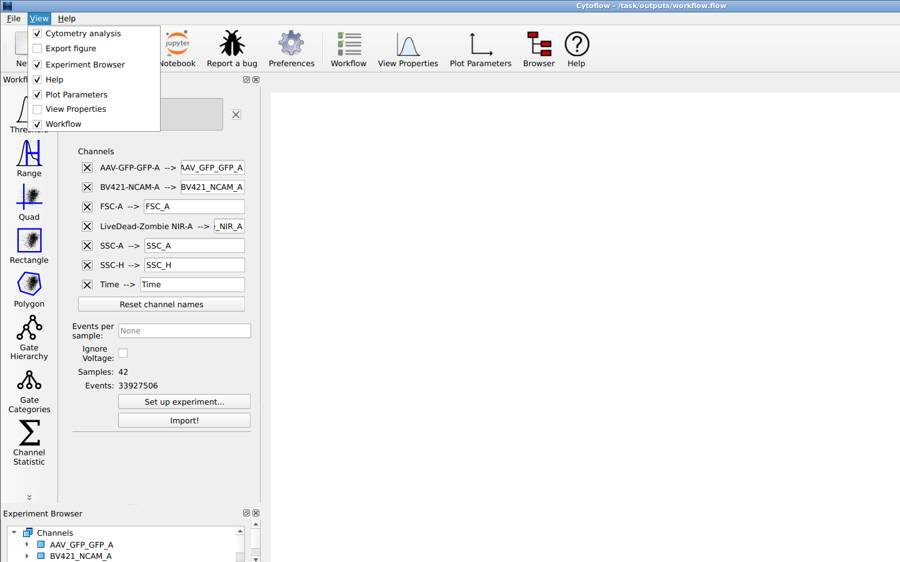
cd /task; cu key Escape; export DISPLAY=:1; xdotool search --name "Cytoflow" 2>/dev/null | while read w; do echo $w; xdotool getwindowname $w; xdotool getwindowgeometry $w; done
14680068 Qt Selection Owner for cytoflow Window 14680068 Position: 0,0 (screen: 0) Geometry: 3x3 14680072 cytoflow Window 14680072 Position: 0,0 (screen: 0) Geometry: 1x1 14680070 Cytoflow - /task/outputs/workflow.flow Window 14680070 Position: 2,40 (screen: 0) Geometry: 2082x1171
cd /task; export DISPLAY=:1; xdotool windowsize 14680070 1440 880; xdotool windowmove 14680070 0 0; sleep 2; xdotool getwindowgeometry 14680070; cu screenshot /tmp/screen.png
{
"file_path": "/tmp/screen.png"
}Window 14680070 Position: 1,20 (screen: 0) Geometry: 1440x880 /tmp/screen.png
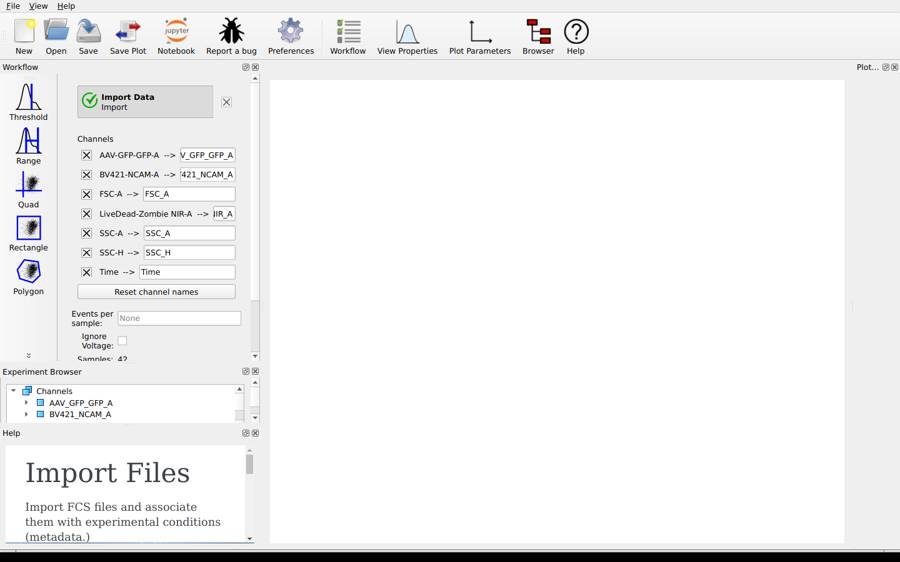
cd /task; cu click 408 693; sleep 1; cu click 651 60; sleep 2; cu screenshot /tmp/screen.png
{
"file_path": "/tmp/screen.png"
}/tmp/screen.png
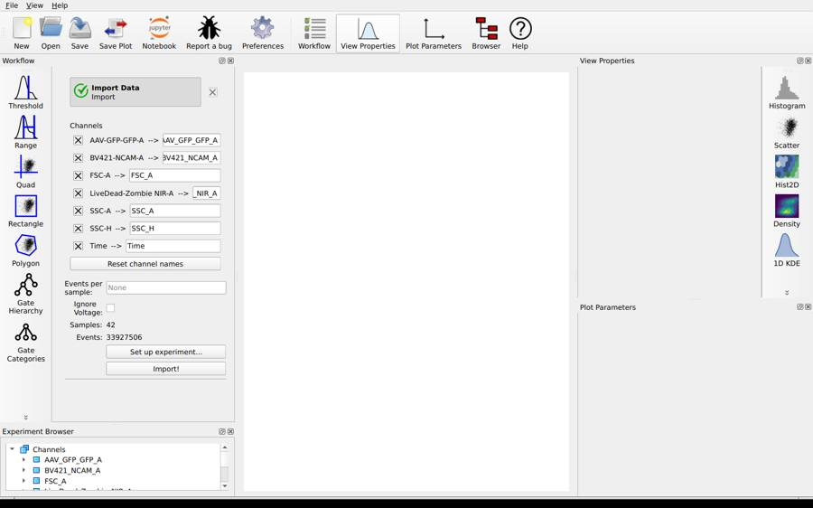
cd /task; cu click 408 764; sleep 1; cu click 1393 370; sleep 3; cu screenshot /tmp/screen.png
{
"file_path": "/tmp/screen.png"
}/tmp/screen.png
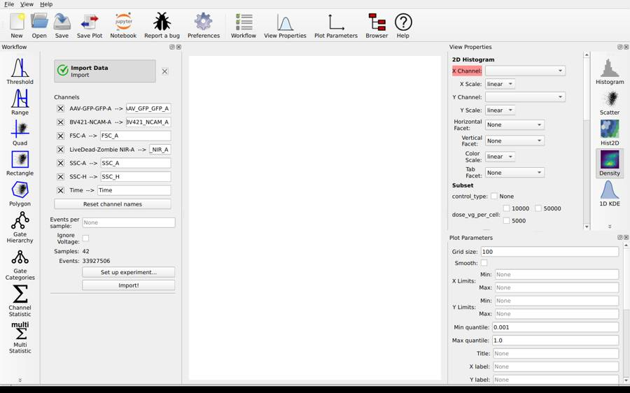
cd /task; cu click 1200 162; sleep 1; cu screenshot /tmp/screen.png
{
"file_path": "/tmp/screen.png"
}/tmp/screen.png
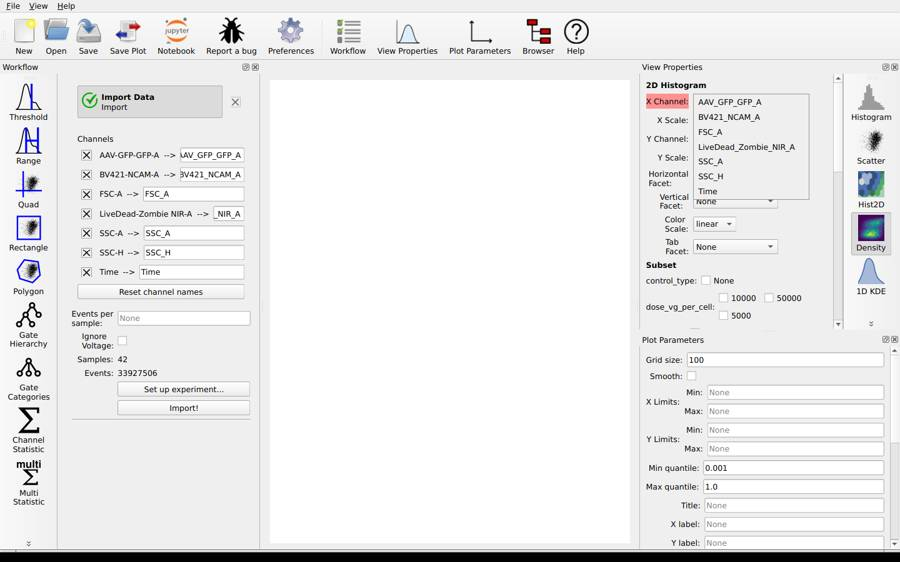
cd /task; cu click 1137 211; sleep 1; cu click 1200 222; sleep 1; cu screenshot /tmp/screen.png
{
"file_path": "/tmp/screen.png"
}/tmp/screen.png
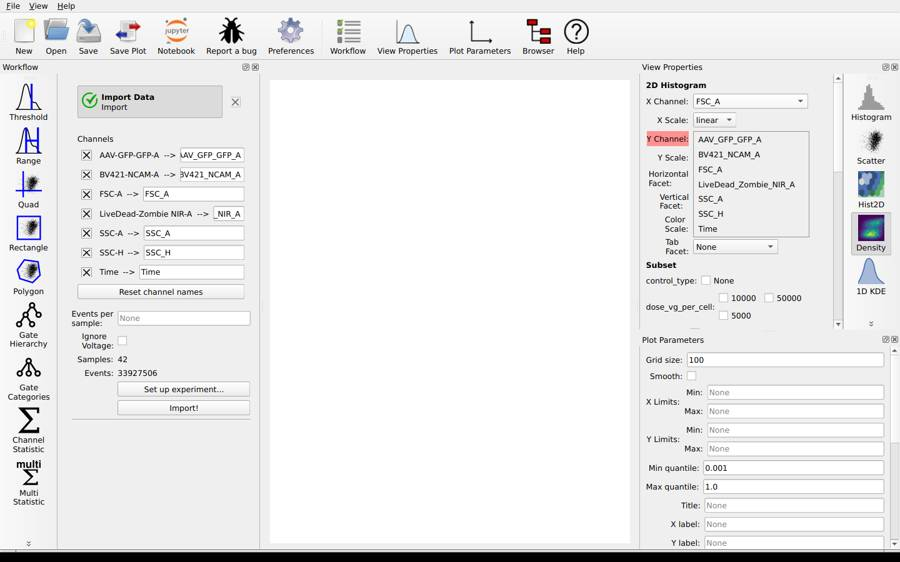
cd /task; cu click 1137 318; sleep 15; free -m | head -2; cu screenshot /tmp/screen.png
{
"file_path": "/tmp/screen.png"
}total used free shared buff/cache available Mem: 7949 7389 581 6 207 560 /tmp/screen.png
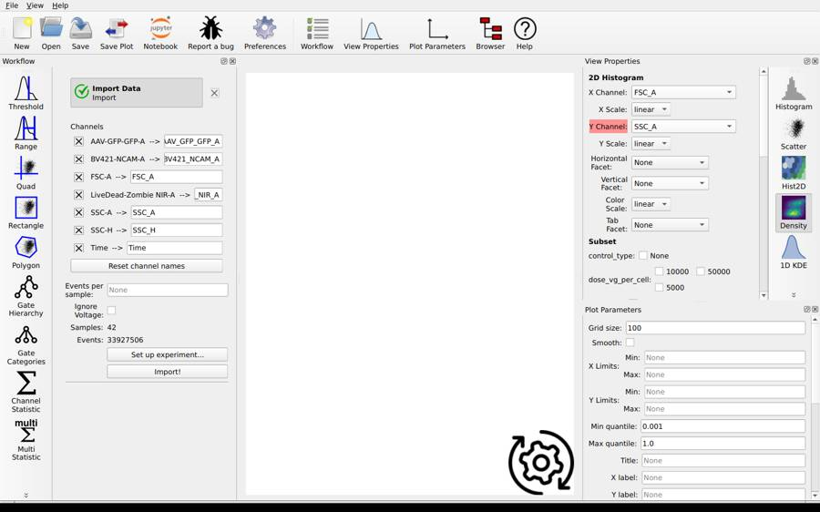
for i in 1 2 3 4 5 6; do sleep 10; free -m | awk 'NR>1{printf "%s used=%s ", $1, $3}'; echo; done; cd /task; cu screenshot /tmp/screen.pngMem: used=7789 Swap: used=7194 Mem: used=7926 Swap: used=11584 Mem: used=7881 Swap: used=14012 Mem: used=7905 Swap: used=13959 Mem: used=7891 Swap: used=14119 Mem: used=7860 Swap: used=15108 /tmp/screen.png
thinking
The full-data density view used 15 GB of swap and is being killed. Plots will now be subset to a few wells before channels are chosen, and I'm enlarging swap as a safety net.
pgrep -f "multiprocessing-fork" | xargs -r kill -9; sleep 3; free -m; fallocate -l 32G /swapfile2 && chmod 600 /swapfile2 && mkswap /swapfile2 >/dev/null && swapon /swapfile2; swapon --show
Exit code 1
free -m; swapon --show; ps aux | grep cytoflow | grep -v -E "grep|QtWeb|defunct"
total used free shared buff/cache available Mem: 7949 591 7289 0 290 7358 Swap: 16383 525 15858 NAME TYPE SIZE USED PRIO /swapfile file 16G 525.2M -1 root 833 0.0 0.0 4748 12 ? S 08:16 0:00 runuser -u cfapp -- env DISPLAY=:1 HOME=/home/cfapp XDG_RUNTIME_DIR=/tmp/runtime-cfapp LANG=C.UTF-8 LC_ALL=C.UTF-8 bash -c umask 002; cd /task; exec start-cytoflow cfapp 837 0.0 0.0 4764 96 ? S 08:16 0:00 /bin/bash /usr/local/bin/start-cytoflow cfapp 1673 2.0 0.4 3599780 36728 ? Sl 08:28 0:05 /opt/cytoflow/cytoflow-1.3.2/cytoflow cfapp 1684 0.0 0.0 84344 116 ? S 08:28 0:00 /opt/cytoflow/cytoflow-1.3.2/cytoflow -B -S -I -c from multiprocessing.resource_tracker import main;main(9)
fallocate -l 32G /swapfile2; chmod 600 /swapfile2; mkswap /swapfile2 >/dev/null; swapon /swapfile2; swapon --show
NAME TYPE SIZE USED PRIO /swapfile file 16G 525.2M -1 /swapfile2 file 32G 0B -1
cd /task; export DISPLAY=:1; cu screenshot /tmp/s0.png >/dev/null; pkill -9 -f "^/opt/cytoflow/cytoflow-1.3.2/cytoflow$"; sleep 15; for w in $(xdotool search --name "Cytoflow"); do xdotool getwindowname $w; xdotool getwindowgeometry $w; done
Qt Selection Owner for cytoflow Window 14680068 Position: 0,0 (screen: 0) Geometry: 3x3 cytoflow Window 14680072 Position: 0,0 (screen: 0) Geometry: 1x1 Cytometry analysis - Cytoflow Window 14680070 Position: 2,40 (screen: 0) Geometry: 2082x1171 Welcome to Cytoflow! Window 14680075 Position: 450,319 (screen: 0) Geometry: 520x219
cd /task; export DISPLAY=:1; xdotool windowsize 14680070 1440 880; xdotool windowmove 14680070 0 0; sleep 1; cu screenshot /tmp/screen.png
{
"file_path": "/tmp/screen.png"
}/tmp/screen.png
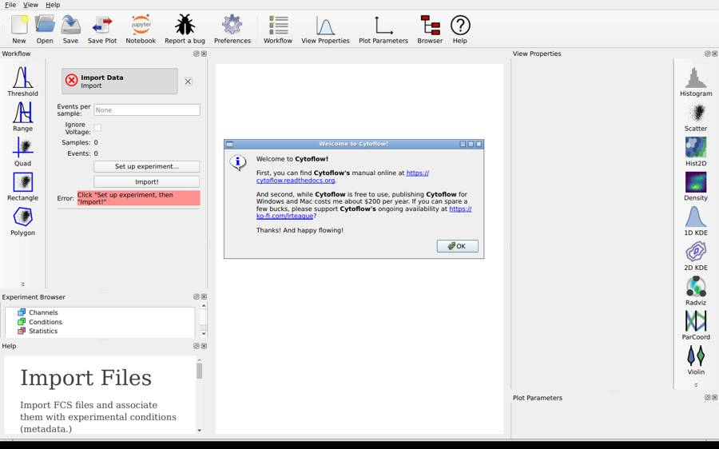
cd /task; cu click 915 493; sleep 1; cu click 408 693; sleep 0.5; cu click 408 594; sleep 0.5; cu click 89 55; sleep 2; cu screenshot /tmp/screen.png
{
"file_path": "/tmp/screen.png"
}/tmp/screen.png
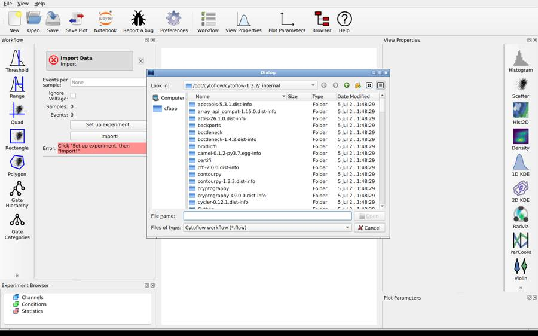
cd /task; cu click 715 578; cu paste "/task/outputs/workflow.flow"; sleep 0.5; cu key Return; sleep 3; cu screenshot /tmp/screen.png
{
"file_path": "/tmp/screen.png"
}/tmp/screen.png

cd /task; cu click 747 449; sleep 45; free -m | head -2; cu click 408 764; sleep 0.5; cu click 240 160; sleep 2; cu click 1393 370; sleep 3; cu screenshot /tmp/screen.png
{
"file_path": "/tmp/screen.png"
}total used free shared buff/cache available Mem: 7949 4147 2968 9 1068 3802 /tmp/screen.png
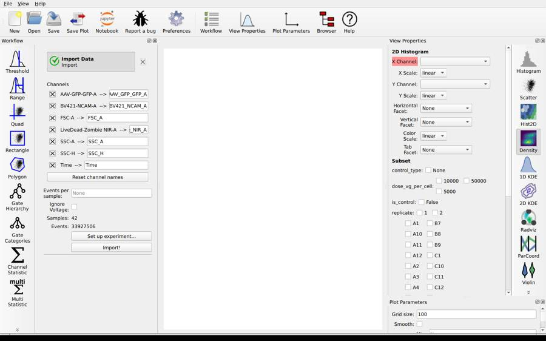
cd /task; cu click 1076 730; sleep 1; cu click 1200 162; sleep 1; cu click 1137 211; sleep 1; cu click 1200 222; sleep 1; cu click 1137 318; sleep 10; free -m | head -2; cu screenshot /tmp/screen.png
{
"file_path": "/tmp/screen.png"
}total used free shared buff/cache available Mem: 7949 4387 2703 10 1094 3562 /tmp/screen.png
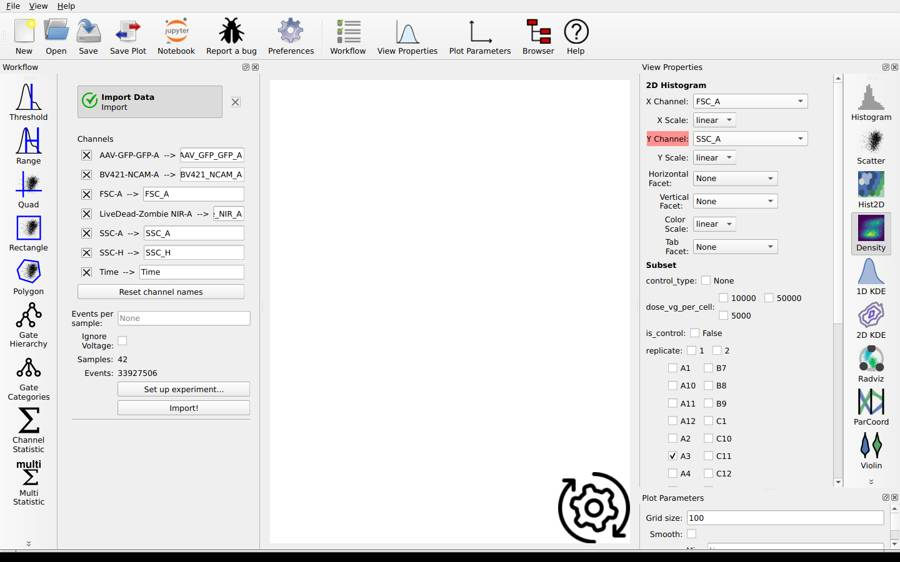
cd /task; sleep 15; free -m | head -3; cu screenshot /tmp/screen.png
{
"file_path": "/tmp/screen.png"
}total used free shared buff/cache available Mem: 7949 4440 2627 10 1116 3509 Swap: 49151 118 49033 /tmp/screen.png
cd /task; cu click 1141 358; sleep 1; cu screenshot /tmp/screen.png
{
"file_path": "/tmp/screen.png"
}/tmp/screen.png
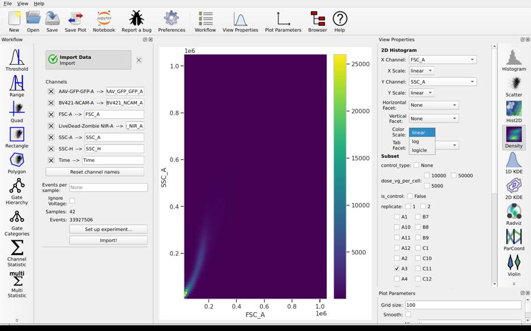
cd /task; cu click 1127 384; sleep 12; cu screenshot /tmp/screen.png
{
"file_path": "/tmp/screen.png"
}/tmp/screen.png
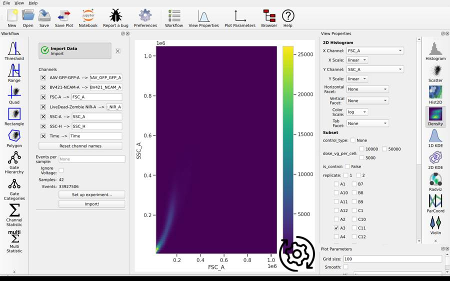
cd /task; sleep 15; cu screenshot /tmp/screen.png
{
"file_path": "/tmp/screen.png"
}/tmp/screen.png
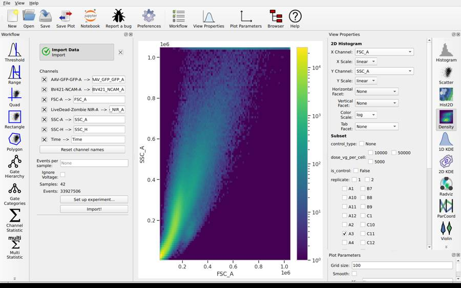
cd /task; cu click 1141 192; sleep 1; cu screenshot /tmp/screen.png
{
"file_path": "/tmp/screen.png"
}/tmp/screen.png
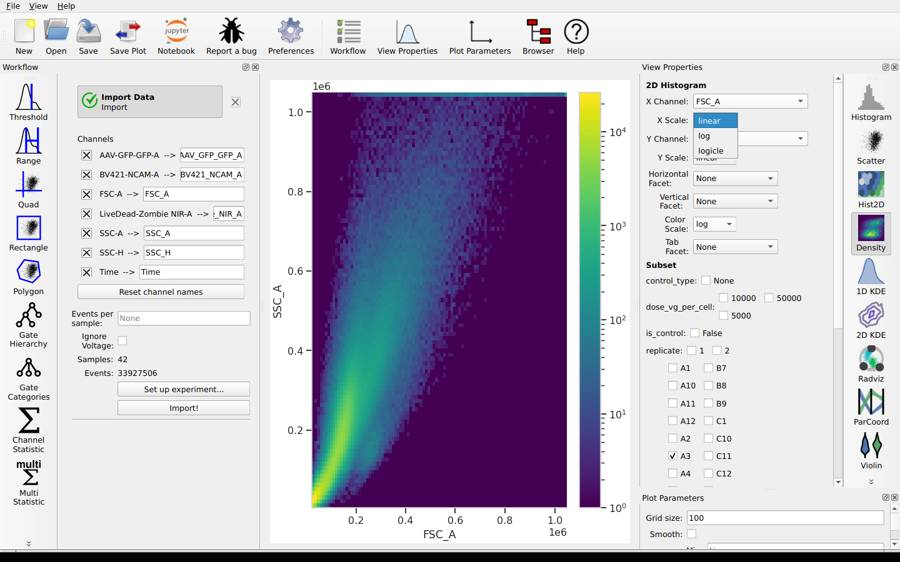
cd /task; cu click 1127 217; sleep 2; cu click 1141 252; sleep 1; cu screenshot /tmp/screen.png
{
"file_path": "/tmp/screen.png"
}/tmp/screen.png
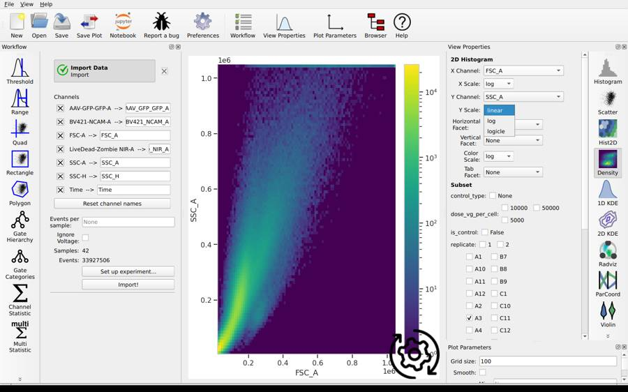
cd /task; cu click 1127 277; sleep 35; cu screenshot /tmp/screen.png
{
"file_path": "/tmp/screen.png"
}/tmp/screen.png
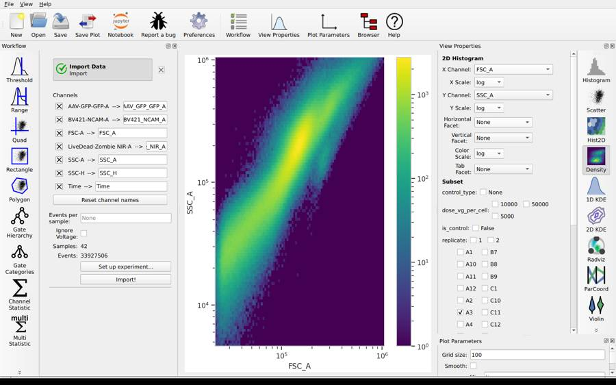
cd /task; cu click 1393 160; sleep 3; cu screenshot /tmp/screen.png
{
"file_path": "/tmp/screen.png"
}/tmp/screen.png
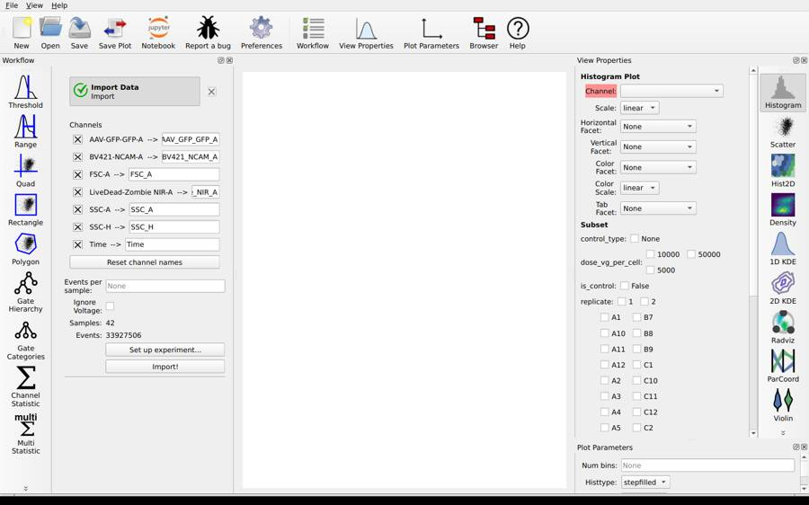
cd /task; cu click 1076 706; sleep 1; cu click 1137 192; sleep 1; cu screenshot /tmp/screen.png
{
"file_path": "/tmp/screen.png"
}/tmp/screen.png
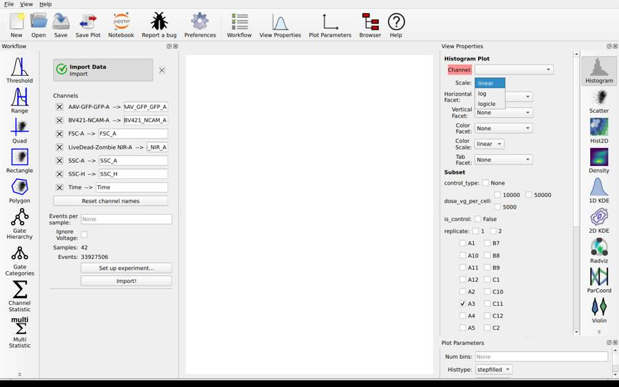
cd /task; cu click 1122 217; sleep 1; cu click 1195 162; sleep 1; cu click 1137 211; sleep 25; cu screenshot /tmp/screen.png
{
"file_path": "/tmp/screen.png"
}/tmp/screen.png
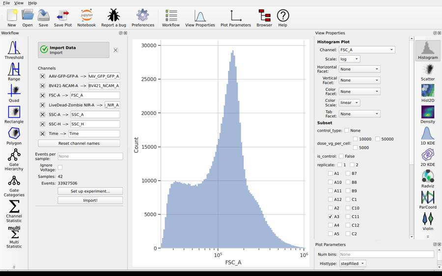
cd /task; date; cu click 46 442; sleep 3; cu screenshot /tmp/screen.png
{
"file_path": "/tmp/screen.png"
}Thu Nov 5 08:38:00 UTC 2026 /tmp/screen.png
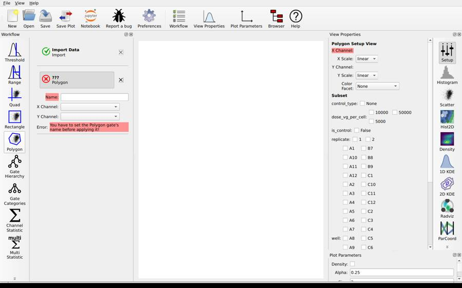
cd /task; cu click 1076 604; sleep 1; cu click 1098 825; sleep 1; cu click 295 303; cu type "Cells"; cu key Return; sleep 1; cu screenshot /tmp/screen.png
{
"file_path": "/tmp/screen.png"
}/tmp/screen.png
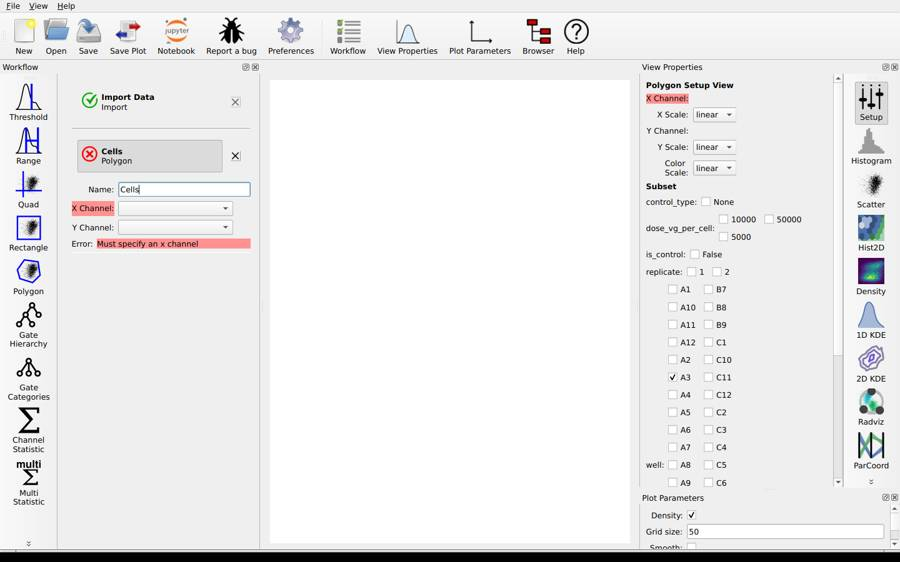
cd /task; cu click 1141 269; sleep 1; cu screenshot /tmp/screen.png
{
"file_path": "/tmp/screen.png"
}/tmp/screen.png
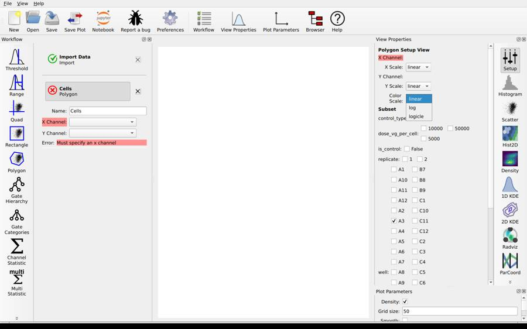
cd /task; cu click 1127 294; sleep 1; cu click 1255 851; cu key ctrl+a; cu type "100"; cu key Return; sleep 1; cu click 280 333; sleep 1; cu screenshot /tmp/screen.png
{
"file_path": "/tmp/screen.png"
}/tmp/screen.png
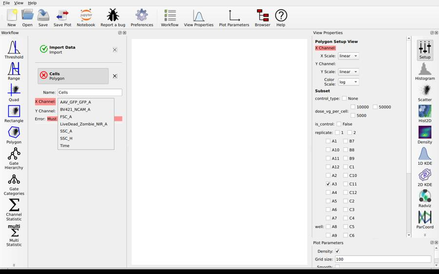
cd /task; cu click 216 383; sleep 1; cu click 280 364; sleep 1; cu screenshot /tmp/screen.png
{
"file_path": "/tmp/screen.png"
}/tmp/screen.png
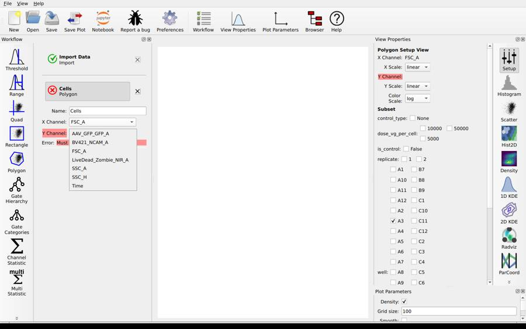
cd /task; cu click 216 460; sleep 30; free -m|head -2; cu screenshot /tmp/screen.png
{
"file_path": "/tmp/screen.png"
}total used free shared buff/cache available Mem: 7949 4423 2555 10 1205 3526 /tmp/screen.png
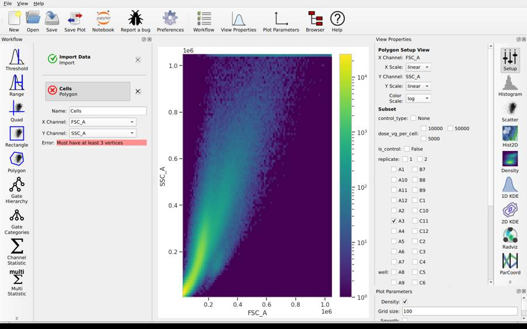
cd /task; cu click 1141 183; sleep 1; cu click 1127 208; sleep 2; cu click 1141 235; sleep 1; cu screenshot /tmp/screen.png
{
"file_path": "/tmp/screen.png"
}/tmp/screen.png
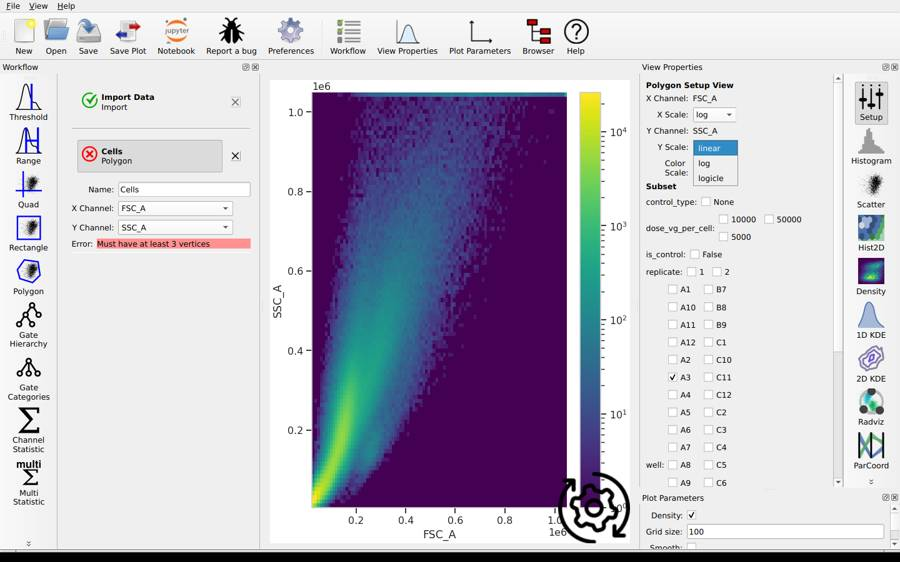
cd /task; cu click 1127 261; sleep 2; cu scroll 1230 850 down 5; sleep 1; cu screenshot /tmp/screen.png
{
"file_path": "/tmp/screen.png"
}/tmp/screen.png
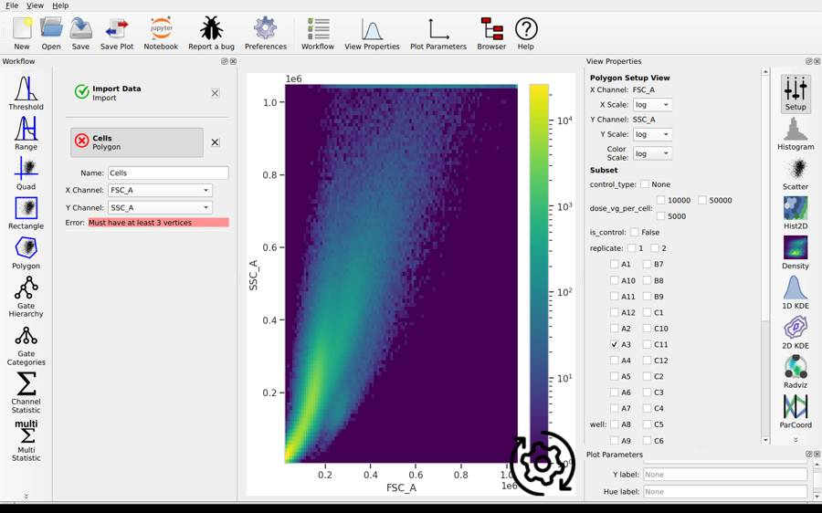
cd /task; sleep 20; cu drag 1230 784 1230 430; sleep 2; cu screenshot /tmp/screen.png
{
"file_path": "/tmp/screen.png"
}/tmp/screen.png
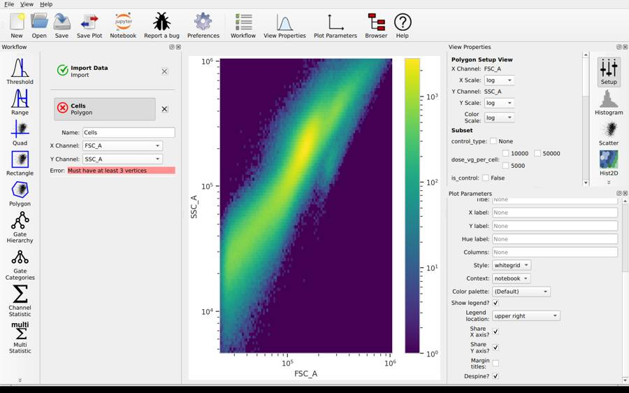
cd /task; cu scroll 1230 650 up 10; sleep 1; cu screenshot /tmp/screen.png
{
"file_path": "/tmp/screen.png"
}/tmp/screen.png
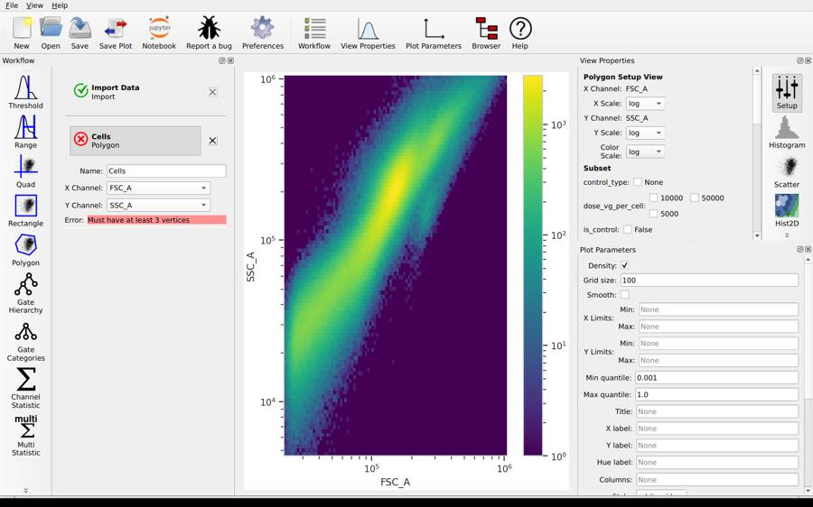
cd /task; cu click 1270 549; cu key ctrl+a; cu type "10000"; cu key Return; sleep 0.5; cu click 1270 579; cu key ctrl+a; cu type "1200000"; cu key Return; sleep 0.5; cu click 1270 609; cu key ctrl+a; cu type "2000"; cu key Return; sleep 0.5; cu click 1270 639; cu key ctrl+a; cu type "1200000"; cu key Return; sleep 40; cu screenshot /tmp/screen.png
{
"file_path": "/tmp/screen.png"
}/tmp/screen.png
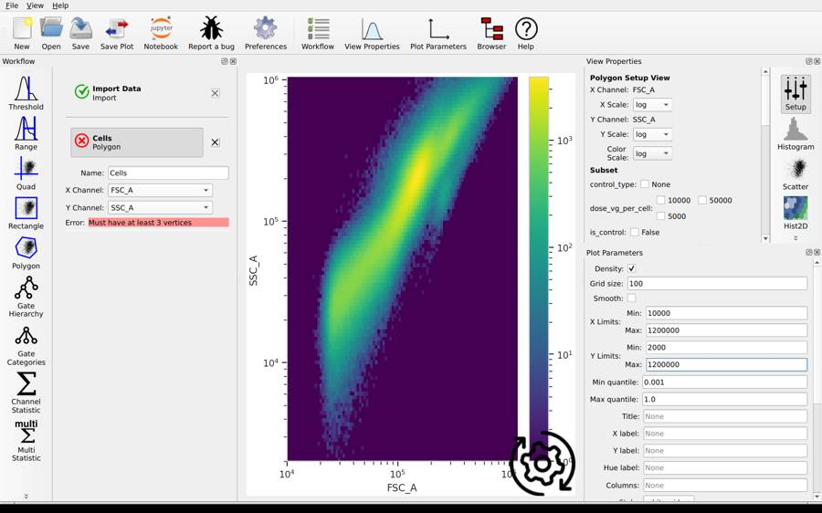
cd /task; sleep 20; cu screenshot /tmp/screen.png
{
"file_path": "/tmp/screen.png"
}/tmp/screen.png
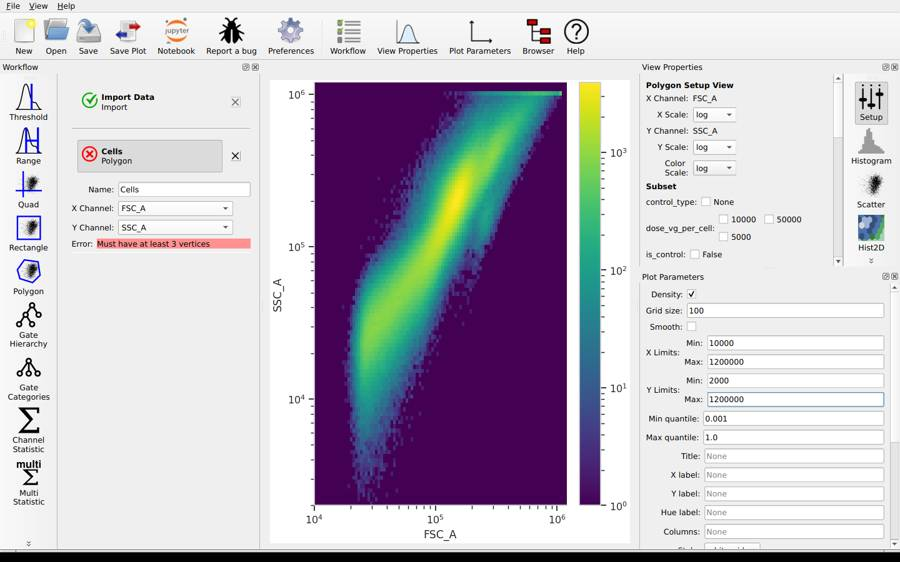
cd /task; python3 -c "
from PIL import Image
im=Image.open('/tmp/screen.png').crop((432,128,1010,870)); im=im.resize((im.width*2//1, im.height*2//1)); im.save('/tmp/crop.png')
" 2>/dev/null || python3 -c "
import matplotlib.image as m, matplotlib.pyplot as plt
a=m.imread('/tmp/screen.png')[128:870,432:1010]; plt.imsave('/tmp/crop.png',a)
"; echo ok{
"file_path": "/tmp/crop.png"
}ok
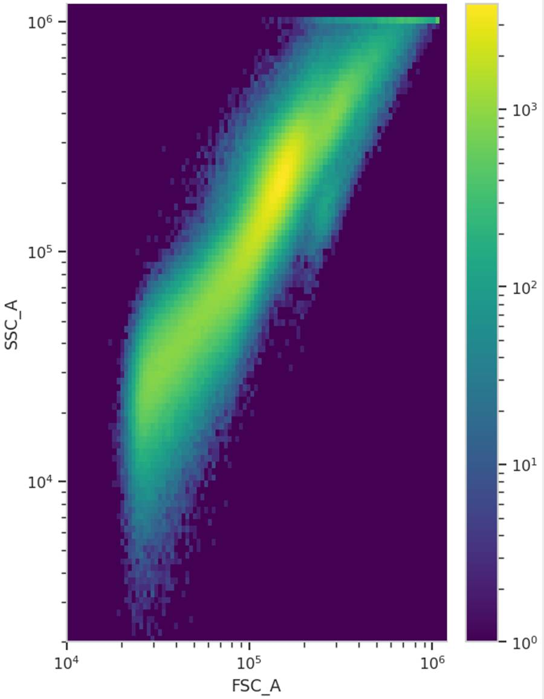
thinking
The flow cytometry plot shows two populations, a debris cluster and the main cell lobe, so I'm drawing the Cells gate through the valley between them.
cd /task; for p in "611 385" "719 523" "891 322" "891 153" "697 153"; do cu click $p; sleep 1; done; cu click 611 385; sleep 3; cu screenshot /tmp/screen.png
{
"file_path": "/tmp/screen.png"
}/tmp/screen.png
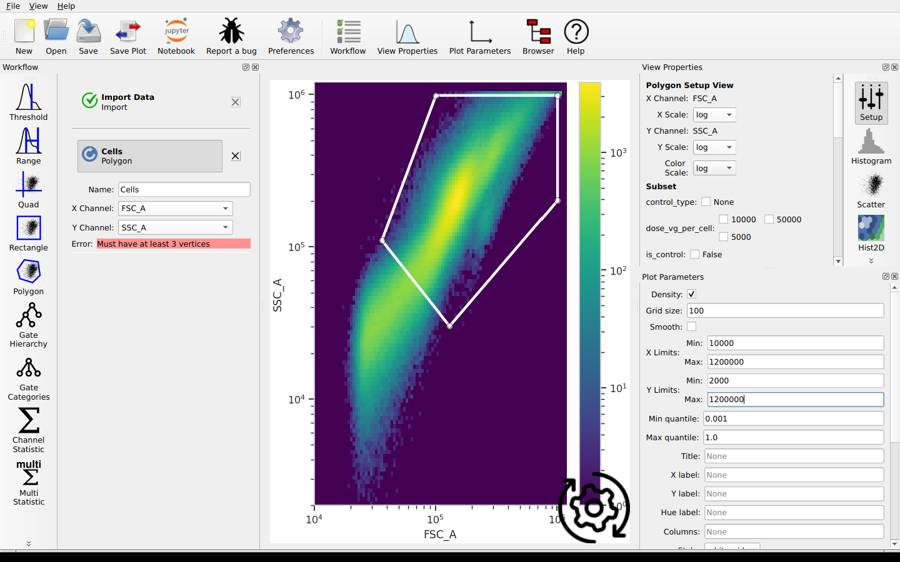
cd /task; for i in 1 2 3 4; do sleep 10; free -m | awk 'NR>1{printf "%s used=%s ", $1, $3}'; echo; done; cu screenshot /tmp/screen.png{
"file_path": "/tmp/screen.png"
}Mem: used=4797 Swap: used=117 Mem: used=4461 Swap: used=117 Mem: used=4512 Swap: used=117 Mem: used=4475 Swap: used=117 /tmp/screen.png
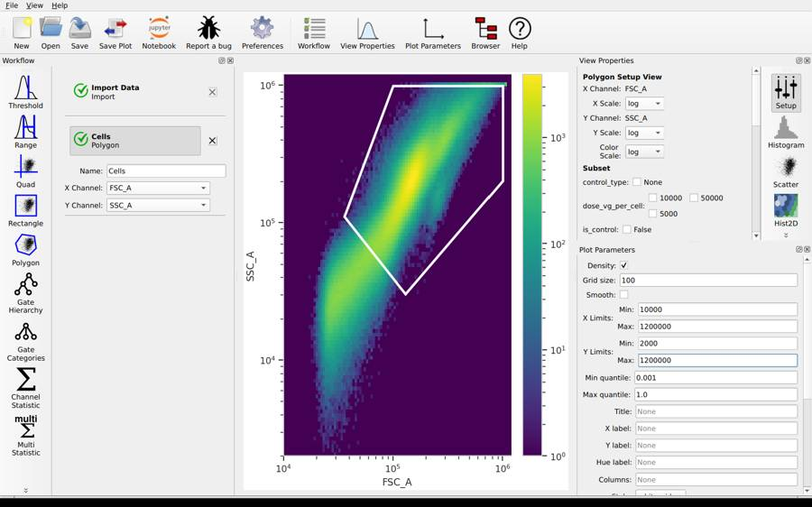
cd /task; cu key ctrl+s; sleep 3; ls -la outputs; grep -n "Cells" -A25 outputs/workflow.flow | grep -E "vertices|xscale|yscale|xchannel|ychannel|- \[|- -" | head -30
total 44 drwxrwsrwx 2 agent task 4096 Nov 5 08:26 . drwxr-xr-x 4 root root 4096 Nov 5 08:15 .. -rw-rw-r-- 1 cfapp task 33474 Nov 5 08:42 workflow.flow 1295- vertices: 1311- xchannel: FSC_A 1312- xscale: log 1313- ychannel: SSC_A 1314- yscale: log
cd /task; sed -n 1280,1320p outputs/workflow.flow
- 30
- 31
- 32
- 36
- 37
- 38
- 39
- 40
- 41
current_view: &id003 !polygon-view;3
current_plot: null
huefacet: ''
huescale: log
op: &id002 !polygon;1
name: Cells
vertices:
- !!python/tuple
- 36253.64945220042
- 110242.05650629172
- !!python/tuple
- 131079.44258873974
- 30112.134090741965
- !!python/tuple
- 1007194.0547930415
- 200817.46845989124
- !!python/tuple
- 1007194.0547930415
- 987414.4512711897
- !!python/tuple
- 101117.09549478431
- 987414.4512711897
xchannel: FSC_A
xscale: log
ychannel: SSC_A
yscale: log
plot_params: !polygon-params;1
alpha: 0.25
col_wrap: null
density: true
despine: true
gridsize: 100cd /task; cu click 46 442; sleep 3; cu click 295 389; cu type "Singlets"; cu key Return; sleep 1; cu screenshot /tmp/screen.png
{
"file_path": "/tmp/screen.png"
}/tmp/screen.png
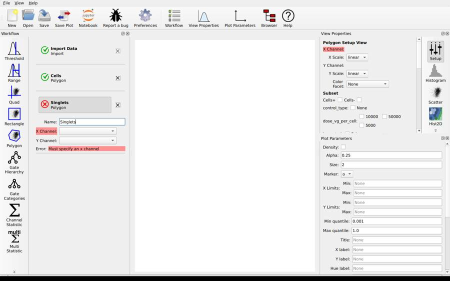
cd /task; cu click 1088 320; sleep 1; cu click 1098 471; sleep 1; cu scroll 1180 380 down 5; sleep 1; cu screenshot /tmp/screen.png
{
"file_path": "/tmp/screen.png"
}/tmp/screen.png
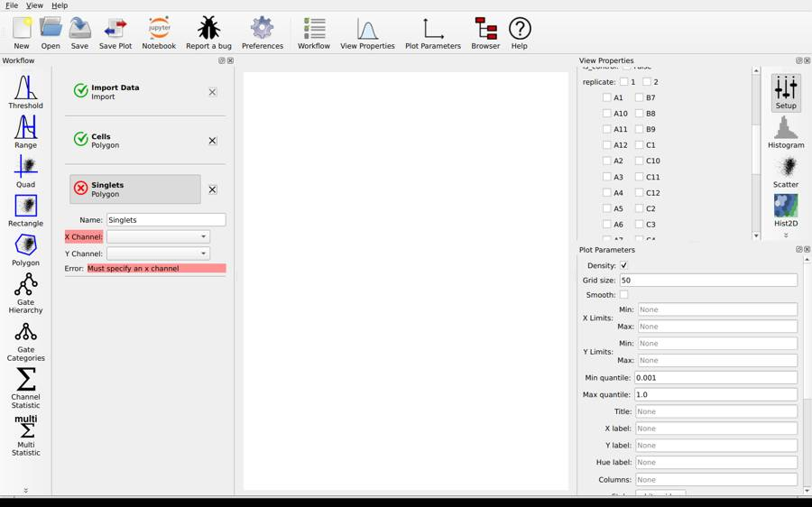
cd /task; cu click 1076 314; sleep 1; cu click 1255 497; cu key ctrl+a; cu type "100"; cu key Return; sleep 0.5; cu scroll 1180 250 up 10; sleep 1; cu screenshot /tmp/screen.png
{
"file_path": "/tmp/screen.png"
}/tmp/screen.png
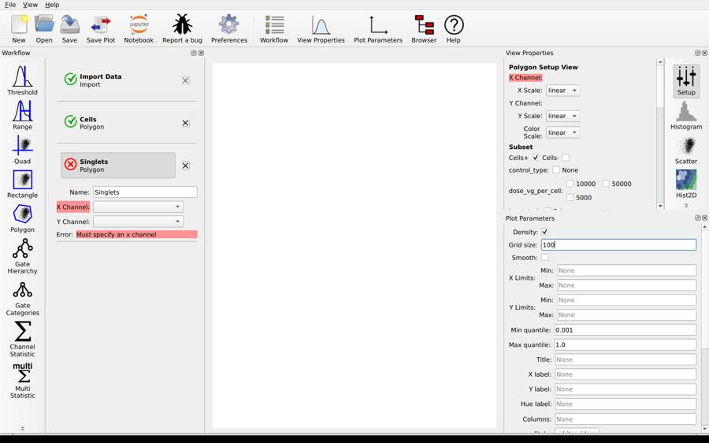
cd /task; cu click 1141 269; sleep 1; cu click 1127 294; sleep 1; cu click 280 420; sleep 1; cu screenshot /tmp/screen.png
{
"file_path": "/tmp/screen.png"
}/tmp/screen.png
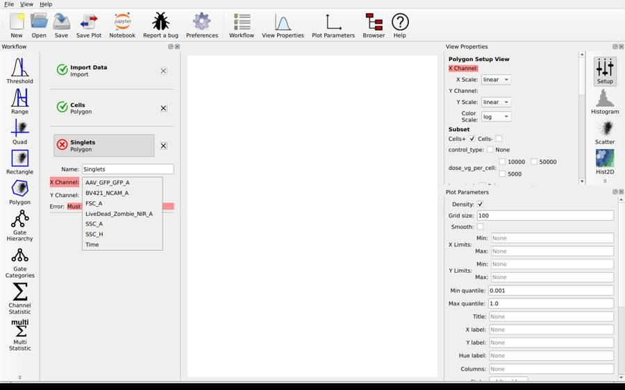
cd /task; cu click 217 540; sleep 1; cu click 280 450; sleep 1; cu screenshot /tmp/screen.png
{
"file_path": "/tmp/screen.png"
}/tmp/screen.png
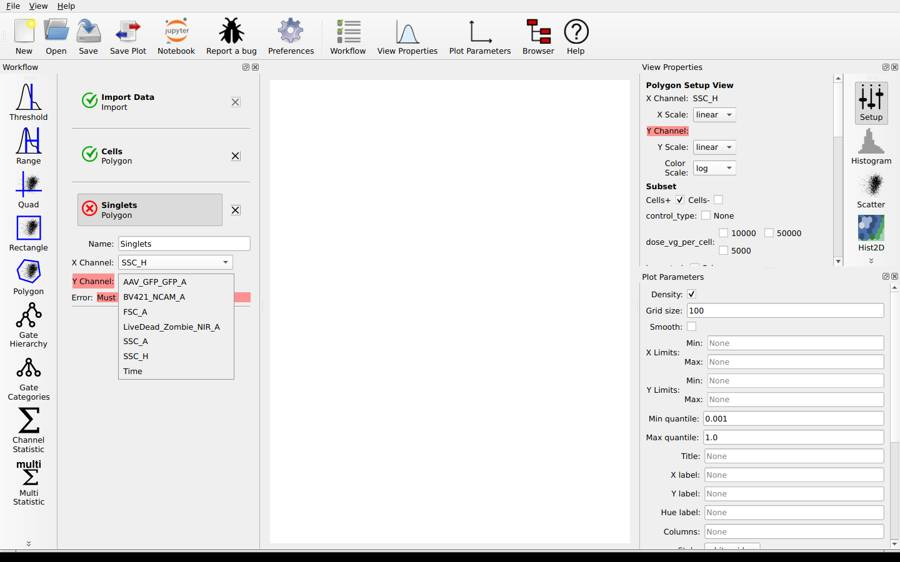
cd /task; cu click 217 546; sleep 40; cu screenshot /tmp/screen.png
{
"file_path": "/tmp/screen.png"
}/tmp/screen.png
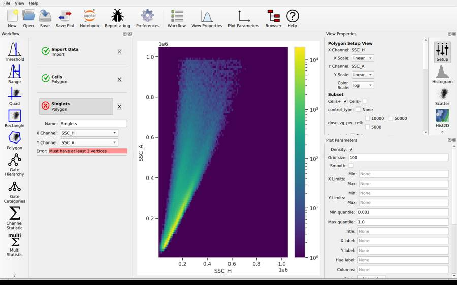
cd /task; python3 -c "
from PIL import Image
im=Image.open('/tmp/screen.png').crop((432,128,1010,870)); im=im.resize((im.width*2, im.height*2)); im.save('/tmp/crop.png')
"(Bash completed with no output)
{
"file_path": "/tmp/crop.png"
}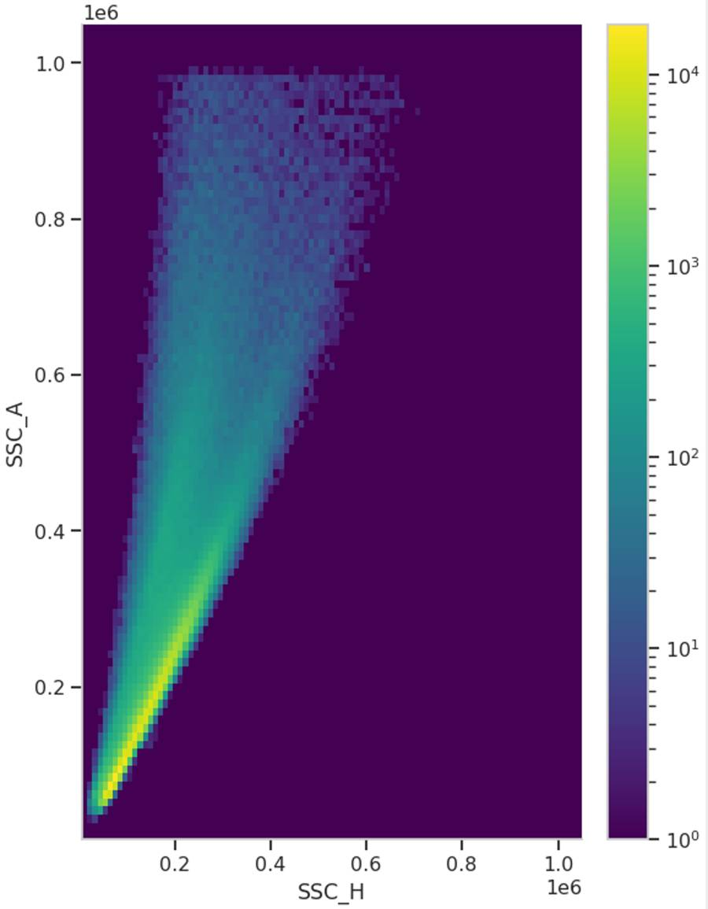
cd /task; cu click 1270 549; cu key ctrl+a; cu type "0"; cu key Return; sleep 0.5; cu click 1270 579; cu key ctrl+a; cu type "1100000"; cu key Return; sleep 0.5; cu click 1270 609; cu key ctrl+a; cu type "0"; cu key Return; sleep 0.5; cu click 1270 639; cu key ctrl+a; cu type "1100000"; cu key Return; sleep 60; cu screenshot /tmp/screen.png
{
"file_path": "/tmp/screen.png"
}/tmp/screen.png
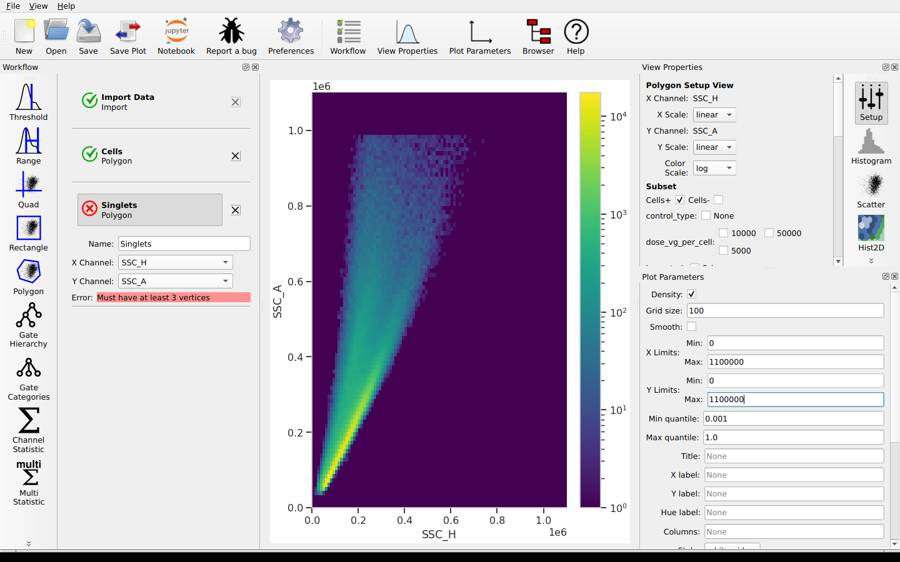
cd /task; for p in "510 811" "740 498" "731 209" "503 802"; do cu click $p; sleep 1; done; cu click 510 811; sleep 3; cu screenshot /tmp/screen.png
{
"file_path": "/tmp/screen.png"
}/tmp/screen.png
cd /task; sleep 30; free -m | head -2; cu screenshot /tmp/screen.png; cu key ctrl+s; sleep 2; grep -n "name: Singlets" -A16 outputs/workflow.flow
{
"file_path": "/tmp/screen.png"
}total used free shared buff/cache available Mem: 7949 4574 2286 10 1324 3375 /tmp/screen.png 2000: name: Singlets 2001- vertices: 2002- - !!python/tuple 2003- - 29302.642595432582 2004- - 4103.193767098142 2005- - !!python/tuple 2006- - 651079.4430425938 2007- - 522645.7367084477 2008- - !!python/tuple 2009- - 625758.2158750624 2010- - 999842.6948305535 2011- xchannel: SSC_H 2012- xscale: linear 2013- ychannel: SSC_A 2014- yscale: linear 2015- plot_params: !polygon-params;1 2016- alpha: 0.25
thinking
Only three vertices got registered, because my fourth click landed near the first and closed the polygon early, so I'm redrawing it starting from the far vertex.
cd /task; for p in "740 498" "731 209" "500 811" "511 811"; do cu click $p; sleep 1; done; cu click 740 498; sleep 40; cu screenshot /tmp/screen.png; cu key ctrl+s; sleep 2; grep -n "name: Singlets" -A16 outputs/workflow.flow
{
"file_path": "/tmp/screen.png"
}/tmp/screen.png 2000: name: Singlets 2001- vertices: 2002- - !!python/tuple 2003- - 651079.4430425938 2004- - 522645.7367084477 2005- - !!python/tuple 2006- - 625758.2158750624 2007- - 999842.6948305535 2008- - !!python/tuple 2009- - 32116.11228071386 2010- - 4103.193767098142 2011- xchannel: SSC_H 2012- xscale: linear 2013- ychannel: SSC_A 2014- yscale: linear 2015- plot_params: !polygon-params;1 2016- alpha: 0.25
cd /task; cu click 1270 549; cu key ctrl+a; cu type "-50000"; cu key Return; sleep 0.5; cu click 1270 609; cu key ctrl+a; cu type "-50000"; cu key Return; sleep 60; cu screenshot /tmp/screen.png
{
"file_path": "/tmp/screen.png"
}/tmp/screen.png
cd /task; for p in "748 483" "739 206" "517 784"; do cu click $p; sleep 1; done; cu click 748 483; sleep 45; cu screenshot /tmp/screen.png; cu key ctrl+s; sleep 2; grep -n "name: Singlets" -A16 outputs/workflow.flow
{
"file_path": "/tmp/screen.png"
}/tmp/screen.png 1999: name: Singlets 2000- vertices: 2001- - !!python/tuple 2002- - 654204.8005487005 2003- - 521616.9033614767 2004- - !!python/tuple 2005- - 627732.6085099176 2006- - 1000693.2062480937 2007- - !!python/tuple 2008- - 1224.0635920561035 2009- - 1116.7096237613296 2010- xchannel: SSC_H 2011- xscale: linear 2012- ychannel: SSC_A 2013- yscale: linear 2014- plot_params: !polygon-params;1 2015- alpha: 0.25
cd /task; date; cu click 46 232; sleep 3; cu screenshot /tmp/screen.png
{
"file_path": "/tmp/screen.png"
}Thu Nov 5 08:50:44 UTC 2026 /tmp/screen.png
cd /task; cu click 288 476; cu type "Live"; cu key Return; sleep 1; cu click 1088 268; sleep 0.5; cu click 1107 290; sleep 0.5; cu click 1128 183; sleep 1; cu screenshot /tmp/screen.png
{
"file_path": "/tmp/screen.png"
}/tmp/screen.png
cd /task; cu click 1124 233; sleep 1; cu click 1163 217; sleep 1; cu screenshot /tmp/screen.png
{
"file_path": "/tmp/screen.png"
}/tmp/screen.png
cd /task; cu click 1116 193; sleep 1; cu click 1113 591; sleep 0.5; cu scroll 1180 380 down 5; sleep 1; cu screenshot /tmp/screen.png
{
"file_path": "/tmp/screen.png"
}/tmp/screen.png
cd /task; cu click 1076 143; sleep 0.3; cu click 1076 283; sleep 0.3; cu click 1133 227; sleep 0.3; cu click 1133 311; sleep 0.3; cu scroll 1180 380 down 5; sleep 1; cu screenshot /tmp/screen.png
{
"file_path": "/tmp/screen.png"
}/tmp/screen.png
cd /task; cu click 1076 393; sleep 0.3; cu click 1133 365; sleep 0.3; cu click 268 506; sleep 1; cu screenshot /tmp/screen.png
{
"file_path": "/tmp/screen.png"
}/tmp/screen.png
cd /task; cu click 262 579; sleep 45; free -m | head -2; cu screenshot /tmp/screen.png
{
"file_path": "/tmp/screen.png"
}total used free shared buff/cache available Mem: 7949 4602 2250 10 1332 3347 /tmp/screen.png
cd /task; cu click 250 336; sleep 2; cu click 1393 560; sleep 1; cu screenshot /tmp/screen.png
{
"file_path": "/tmp/screen.png"
}/tmp/screen.png
cd /task; sleep 20; cu click 1393 417; sleep 1; cu click 1393 417; sleep 1; cu screenshot /tmp/screen.png
{
"file_path": "/tmp/screen.png"
}/tmp/screen.png
cd /task; cu drag 1230 431 1230 640; sleep 2; cu screenshot /tmp/screen.png
{
"file_path": "/tmp/screen.png"
}/tmp/screen.png
cd /task; cu click 1393 440; sleep 3; cu screenshot /tmp/screen.png
{
"file_path": "/tmp/screen.png"
}/tmp/screen.png
cd /task; cu click 1076 334; sleep 0.3; cu click 1076 194; sleep 0.3; cu scroll 1180 300 up 10; sleep 1; cu screenshot /tmp/screen.png
{
"file_path": "/tmp/screen.png"
}/tmp/screen.png
cd /task; cu click 1088 446; sleep 0.3; cu click 1107 468; sleep 0.3; cu click 1141 358; sleep 0.7; cu click 1127 384; sleep 0.7; cu click 1141 192; sleep 0.7; cu click 1135 241; sleep 0.7; cu click 1141 252; sleep 0.7; cu click 1127 277; sleep 0.7; cu click 1176 285; sleep 1; cu screenshot /tmp/screen.png
{
"file_path": "/tmp/screen.png"
}/tmp/screen.png
cd /task; cu click 1130 262; sleep 1; cu click 1200 162; sleep 1; cu screenshot /tmp/screen.png
{
"file_path": "/tmp/screen.png"
}/tmp/screen.png
cd /task; cu click 1193 235; sleep 1; cu click 1200 222; sleep 1; cu click 1137 318; sleep 50; cu screenshot /tmp/screen.png
{
"file_path": "/tmp/screen.png"
}/tmp/screen.png
cd /task; cu click 1088 446; sleep 0.3; cu click 1107 468; sleep 0.3; cu click 1200 222; sleep 1; cu click 1137 270; sleep 50; cu screenshot /tmp/screen.png
{
"file_path": "/tmp/screen.png"
}/tmp/screen.png
cd /task; cu click 1200 222; sleep 1; cu screenshot /tmp/screen.png
{
"file_path": "/tmp/screen.png"
}/tmp/screen.png
cd /task; cu click 1137 128; sleep 50; cu screenshot /tmp/screen.png
{
"file_path": "/tmp/screen.png"
}/tmp/screen.png
thinking
The Zombie-dim cluster (FSC 1.5–4×10⁵) separates from the bright diagonal band in the NIR vs FSC-A plot, so I'm treating it as the live population. Zooming in next to find the valley between them.
cd /task; python3 -c "
from PIL import Image
im=Image.open('/tmp/screen.png').crop((432,128,1010,870)); im=im.resize((im.width*2, im.height*2)); im.save('/tmp/crop.png')
"(Bash completed with no output)
{
"file_path": "/tmp/crop.png"
}cd /task; cu click 250 513; sleep 3; cu screenshot /tmp/screen.png
{
"file_path": "/tmp/screen.png"
}/tmp/screen.png
cd /task; cu click 288 536; cu key ctrl+a; cu type "-100000"; cu key Return; sleep 1; cu click 288 566; cu key ctrl+a; cu type "2000"; cu key Return; sleep 60; cu screenshot /tmp/screen.png
{
"file_path": "/tmp/screen.png"
}/tmp/screen.png
cd /task; cu click 1393 230; sleep 3; cu screenshot /tmp/screen.png
{
"file_path": "/tmp/screen.png"
}/tmp/screen.png
cd /task; cu key ctrl+s; sleep 1; cu click 1088 422; sleep 0.3; cu click 1107 466; sleep 0.3; cu click 1157 547; sleep 0.3; cu click 1137 192; sleep 0.8; cu click 1131 241; sleep 0.8; cu click 1171 225; sleep 1; cu screenshot /tmp/screen.png
{
"file_path": "/tmp/screen.png"
}/tmp/screen.png
cd /task; cu click 1125 202; sleep 0.8; cu scroll 1230 800 down 5; sleep 1; cu screenshot /tmp/screen.png
{
"file_path": "/tmp/screen.png"
}/tmp/screen.png
cd /task; cu click 1270 816; cu key ctrl+a; cu type "5"; cu key Return; sleep 0.5; cu click 1195 162; sleep 1; cu screenshot /tmp/screen.png
{
"file_path": "/tmp/screen.png"
}/tmp/screen.png
cd /task; cu click 1188 235; sleep 5; for i in 1 2 3 4 5 6 7 8; do sleep 10; free -m | awk 'NR>1{printf "%s used=%s ", $1, $3}'; echo; done; cu screenshot /tmp/screen.png{
"file_path": "/tmp/screen.png"
}Mem: used=5452 Swap: used=117 Mem: used=4717 Swap: used=117 Mem: used=4670 Swap: used=117 Mem: used=4652 Swap: used=117 Mem: used=4653 Swap: used=117 Mem: used=4653 Swap: used=117 Mem: used=4653 Swap: used=117 Mem: used=4653 Swap: used=117 /tmp/screen.png
cd /task; cu click 204 55; sleep 2; cu screenshot /tmp/screen.png
{
"file_path": "/tmp/screen.png"
}/tmp/screen.png
cd /task; cu click 1282 851; sleep 2; cu click 250 423; sleep 2; cu click 46 162; sleep 3; cu screenshot /tmp/screen.png
{
"file_path": "/tmp/screen.png"
}/tmp/screen.png
cd /task; cu click 293 562; cu type "GFP_pos"; cu key Return; sleep 1; cu click 278 593; sleep 1; cu screenshot /tmp/screen.png
{
"file_path": "/tmp/screen.png"
}/tmp/screen.png
cd /task; cu key Escape; sleep 0.5; cu click 1088 290; sleep 0.3; cu click 1083 311; sleep 0.3; cu click 1107 333; sleep 0.3; cu click 1140 205; sleep 0.8; cu screenshot /tmp/screen.png
{
"file_path": "/tmp/screen.png"
}/tmp/screen.png
cd /task; cu click 1135 255; sleep 0.8; cu click 1175 239; sleep 1; cu screenshot /tmp/screen.png
{
"file_path": "/tmp/screen.png"
}/tmp/screen.png
cd /task; cu click 1167 143; sleep 0.8; cu click 278 593; sleep 1; cu click 245 594; sleep 5; for i in $(seq 1 9); do sleep 10; free -m | awk 'NR>1{printf "%s used=%s ", $1, $3}'; echo; done; cu screenshot /tmp/screen.png{
"file_path": "/tmp/screen.png"
}Mem: used=4917 Swap: used=117 Mem: used=4682 Swap: used=117 Mem: used=4653 Swap: used=117 Mem: used=4653 Swap: used=117 Mem: used=4653 Swap: used=117 Mem: used=4653 Swap: used=117 Mem: used=4653 Swap: used=117 Mem: used=4653 Swap: used=117 Mem: used=4653 Swap: used=117 /tmp/screen.png
cd /task; cu click 1140 205; sleep 0.8; cu click 1125 231; sleep 50; cu screenshot /tmp/screen.png
{
"file_path": "/tmp/screen.png"
}/tmp/screen.png
cd /task; cu click 1140 205; sleep 0.8; cu screenshot /tmp/screen.png
{
"file_path": "/tmp/screen.png"
}/tmp/screen.png
cd /task; cu click 1125 183; sleep 50; cu screenshot /tmp/screen.png
{
"file_path": "/tmp/screen.png"
}/tmp/screen.png
cd /task; cu click 250 423; sleep 2; cu click 1393 440; sleep 3; cu screenshot /tmp/screen.png
{
"file_path": "/tmp/screen.png"
}/tmp/screen.png
cd /task; cu click 1088 446; sleep 0.3; cu click 1083 468; sleep 0.3; cu click 1107 489; sleep 0.3; cu click 1141 358; sleep 0.8; cu click 1127 384; sleep 0.8; cu click 1141 192; sleep 0.8; cu click 1127 217; sleep 0.8; cu click 1141 252; sleep 0.8; cu click 1127 277; sleep 0.8; cu click 1176 395; sleep 1; cu screenshot /tmp/screen.png
{
"file_path": "/tmp/screen.png"
}/tmp/screen.png
cd /task; cu key Escape; sleep 0.5; cu click 1176 285; sleep 1; cu screenshot /tmp/screen.png
{
"file_path": "/tmp/screen.png"
}/tmp/screen.png
cd /task; cu click 1130 262; sleep 1; cu drag 1230 784 1230 430; sleep 1; cu screenshot /tmp/screen.png
{
"file_path": "/tmp/screen.png"
}/tmp/screen.png
cd /task; cu click 1270 829; cu key ctrl+a; cu type "7"; cu key Return; sleep 0.3; cu click 1255 475; cu key ctrl+a; cu type "60"; cu key Return; sleep 0.3; cu click 1270 527; cu key ctrl+a; cu type "10"; cu key Return; sleep 0.3; cu click 1270 557; cu key ctrl+a; cu type "1100000"; cu key Return; sleep 0.3; cu click 1270 587; cu key ctrl+a; cu type "10000"; cu key Return; sleep 0.3; cu click 1270 617; cu key ctrl+a; cu type "1100000"; cu key Return; sleep 0.3; cu click 1200 162; sleep 1; cu click 1167 163; sleep 1; cu click 1200 222; sleep 1; cu screenshot /tmp/screen.png
{
"file_path": "/tmp/screen.png"
}/tmp/screen.png
cd /task; cu click 1137 318; sleep 5; for i in $(seq 1 10); do sleep 10; free -m | awk 'NR>1{printf "%s used=%s ", $1, $3}'; echo; done; cu screenshot /tmp/screen.png{
"file_path": "/tmp/screen.png"
}Mem: used=4933 Swap: used=117 Mem: used=4922 Swap: used=117 Mem: used=4646 Swap: used=117 Mem: used=4646 Swap: used=117 Mem: used=4646 Swap: used=117 Mem: used=4645 Swap: used=117 Mem: used=4645 Swap: used=117 Mem: used=4644 Swap: used=117 Mem: used=4644 Swap: used=117 Mem: used=4644 Swap: used=117 /tmp/screen.png
cd /task; cu click 204 55; sleep 3; cu click 1282 730; cu key ctrl+a; cu type "22"; cu key Return; cu click 1282 760; cu key ctrl+a; cu type "20"; cu key Return; cu click 1282 790; cu key ctrl+a; cu type "80"; cu key Return; sleep 1; cu click 1282 820; sleep 2; cu screenshot /tmp/screen.png
{
"file_path": "/tmp/screen.png"
}/tmp/screen.png
mkdir -p /tmp/cfplots && chmod 777 /tmp/cfplots; cd /task; cu click 715 578; cu paste "/tmp/cfplots/gfp_ssc_live.png"; sleep 0.5; cu key Return; sleep 15; ls -la /tmp/cfplots
total 200 drwxrwxrwx 2 root root 4096 Nov 5 09:09 . drwxrwxrwx 15 root root 4096 Nov 5 09:08 .. -rw-rw-r-- 1 cfapp cfapp 193648 Nov 5 09:09 gfp_ssc_live.png
cd /tmp/cfplots; python3 -c "
from PIL import Image
im=Image.open('gfp_ssc_live.png'); print(im.size)
w,h=im.size
im.crop((0,0,w//2+40,h//2)).save('q1.png')
im.crop((w//2-40,0,w,h//2)).save('q2.png')
im.crop((0,h//2,w//2+40,h)).save('q3.png')
im.crop((w//2-40,h//2,w,h)).save('q4.png')
"(1765, 1609) Shell cwd was reset to /task
{
"file_path": "/tmp/cfplots/q1.png"
}{
"file_path": "/tmp/cfplots/q4.png"
}{
"file_path": "/tmp/cfplots/q3.png"
}thinking
GFP+ events are rare in every well, and the GFP-negative cloud's upper edge sits near 10³. I'm zooming in on the five wells with the fewest GFP-bright events (A1, B6, C5, C12, D1) to place the cut.
cd /task; cu click 1282 851; sleep 2; cu screenshot /tmp/screen.png
{
"file_path": "/tmp/screen.png"
}/tmp/screen.png
cd /task; cu click 1076 655; sleep 0.3; cu click 1133 739; sleep 0.3; cu scroll 1180 600 down 3; sleep 1; cu screenshot /tmp/screen.png
{
"file_path": "/tmp/screen.png"
}/tmp/screen.png
cd /task; cu click 1133 636; sleep 0.3; cu click 1133 749; sleep 0.3; cu scroll 1180 600 down 5; sleep 1; cu screenshot /tmp/screen.png
{
"file_path": "/tmp/screen.png"
}/tmp/screen.png
cd /task; cu click 1076 753; sleep 0.3; cu click 1133 612; sleep 0.3; cu drag 1230 784 1230 430; sleep 1; cu screenshot /tmp/screen.png
{
"file_path": "/tmp/screen.png"
}/tmp/screen.png
cd /task; cu click 1255 475; cu key ctrl+a; cu type "120"; cu key Return; sleep 0.3; cu click 1270 527; cu key ctrl+a; cu type "100"; cu key Return; sleep 0.3; cu click 1270 557; cu key ctrl+a; cu type "100000"; cu key Return; sleep 0.3; cu click 1270 587; cu key ctrl+a; cu type "20000"; cu key Return; sleep 0.3; cu click 1270 829; cu key ctrl+a; cu type "3"; cu key Return; sleep 60; cu screenshot /tmp/screen.png
{
"file_path": "/tmp/screen.png"
}/tmp/screen.png
cd /task; sleep 30; cu click 204 55; sleep 3; cu click 1282 730; cu key ctrl+a; cu type "18"; cu key Return; cu click 1282 760; cu key ctrl+a; cu type "12"; cu key Return; cu click 1282 790; cu key ctrl+a; cu type "80"; cu key Return; sleep 1; cu click 1282 820; sleep 2; cu click 715 578; cu paste "/tmp/cfplots/gfp_zoom_low.png"; sleep 0.5; cu key Return; sleep 15; ls -la /tmp/cfplots; cu screenshot /tmp/screen.png
total 416 drwxrwxrwx 2 root root 4096 Nov 5 09:09 . drwxrwxrwx 15 root root 4096 Nov 5 09:11 .. -rw-rw-r-- 1 cfapp cfapp 193648 Nov 5 09:09 gfp_ssc_live.png -rw-r--r-- 1 root root 61532 Nov 5 09:09 q1.png -rw-r--r-- 1 root root 47288 Nov 5 09:09 q2.png -rw-r--r-- 1 root root 59577 Nov 5 09:09 q3.png -rw-r--r-- 1 root root 43996 Nov 5 09:09 q4.png /tmp/screen.png
{
"file_path": "/tmp/screen.png"
}cd /task; sleep 40; cu screenshot /tmp/screen.png
{
"file_path": "/tmp/screen.png"
}/tmp/screen.png

thinking
The GFP cut of 2,000 sits just above the negative-cloud upper edge (~1–1.5×10³), and I'm cross-checking GFP against Zombie NIR on Singlets to confirm the Live gate before committing.
cd /task; cu click 1282 820; sleep 2; cu click 715 578; cu paste "/tmp/cfplots/gfp_zoom_low.png"; sleep 0.5; cu key Return; sleep 10; ls /tmp/cfplots; cu click 1282 851; sleep 2; cu click 250 336; sleep 3; cu screenshot /tmp/screen.png
{
"file_path": "/tmp/screen.png"
}gfp_ssc_live.png gfp_zoom_low.png q1.png q2.png q3.png q4.png /tmp/screen.png
cd /task; cu click 716 421; sleep 8; cu screenshot /tmp/screen.png
{
"file_path": "/tmp/screen.png"
}/tmp/screen.png
cd /task; cu click 1282 851; sleep 2; cu click 250 336; sleep 3; cu screenshot /tmp/screen.png
{
"file_path": "/tmp/screen.png"
}/tmp/screen.png
cd /task; sleep 20; cu click 1076 434; sleep 0.3; cu click 1076 350; sleep 0.3; cu click 1133 687; sleep 0.3; cu click 1133 462; sleep 0.3; cu scroll 1180 300 up 10; sleep 1; cu screenshot /tmp/screen.png
{
"file_path": "/tmp/screen.png"
}/tmp/screen.png
cd /task; cu click 1176 305; sleep 1; cu screenshot /tmp/screen.png
{
"file_path": "/tmp/screen.png"
}/tmp/screen.png
cd /task; cu click 1133 450; sleep 1; cu click 1088 356; sleep 0.3; cu click 1107 378; sleep 0.3; cu click 1200 132; sleep 1; cu screenshot /tmp/screen.png
{
"file_path": "/tmp/screen.png"
}/tmp/screen.png
cd /task; cu click 1167 86; sleep 60; cu screenshot /tmp/screen.png
{
"file_path": "/tmp/screen.png"
}/tmp/screen.png
cd /task; sleep 40; cu screenshot /tmp/screen.png
{
"file_path": "/tmp/screen.png"
}/tmp/screen.png
cd /task; sleep 45; cu screenshot /tmp/screen.png
{
"file_path": "/tmp/screen.png"
}/tmp/screen.png
cd /task; sleep 60; free -m|head -2; cu screenshot /tmp/screen.png
{
"file_path": "/tmp/screen.png"
}total used free shared buff/cache available Mem: 7949 4681 2079 10 1426 3268 /tmp/screen.png
cd /task; cu click 204 55; sleep 3; cu click 1282 730; cu key ctrl+a; cu type "16"; cu key Return; cu click 1282 760; cu key ctrl+a; cu type "10"; cu key Return; sleep 1; cu click 1282 820; sleep 2; cu click 715 578; cu paste "/tmp/cfplots/gfp_vs_zombie.png"; sleep 0.5; cu key Return; sleep 10; ls /tmp/cfplots; cu click 1282 851; sleep 1
{
"file_path": "/tmp/cfplots/gfp_vs_zombie.png"
}gfp_ssc_live.png gfp_vs_zombie.png gfp_zoom_low.png q1.png q2.png q3.png q4.png
thinking
GFP+ events show up in both Zombie populations, and the GFP rise tracks the Zombie signal, which fits the bright population being dead cells. I'm running one finer Zombie vs FSC-A check to pin down the valley.
cd /task; cu click 1200 132; sleep 1; cu click 1137 134; sleep 1; cu screenshot /tmp/screen.png
{
"file_path": "/tmp/screen.png"
}/tmp/screen.png
cd /task; cu click 1200 132; sleep 1.5; cu screenshot /tmp/screen.png
{
"file_path": "/tmp/screen.png"
}/tmp/screen.png
cd /task; cu click 1137 182; sleep 1; cu click 1255 829; cu key ctrl+a; cu type "150"; cu key Return; sleep 70; cu screenshot /tmp/screen.png
{
"file_path": "/tmp/screen.png"
}/tmp/screen.png
cd /task; sleep 30; cu click 204 55; sleep 3; cu click 1282 820; sleep 2; cu click 715 578; cu paste "/tmp/cfplots/zombie_fsc.png"; sleep 0.5; cu key Return; sleep 10; ls /tmp/cfplots; cu click 1282 851; sleep 1
{
"file_path": "/tmp/cfplots/zombie_fsc.png"
}gfp_ssc_live.png gfp_vs_zombie.png gfp_zoom_low.png q1.png q2.png q3.png q4.png zombie_fsc.png
thinking
The zombie-dim island (≤~5×10² at FSC ~2.5×10⁵) sits apart from the bright main population (≥~1.5×10³), with the valley near 10³, so I'm tightening the Live upper edge from 2,000 to 1,000.
cd /task; cu click 250 513; sleep 2; cu screenshot /tmp/screen.png
{
"file_path": "/tmp/screen.png"
}/tmp/screen.png
cd /task; cu click 288 566; cu key ctrl+a; cu type "1000"; cu key Return; sleep 45; free -m|head -2; cu click 250 629; sleep 3; cu screenshot /tmp/screen.png
{
"file_path": "/tmp/screen.png"
}total used free shared buff/cache available Mem: 7949 4695 2057 10 1433 3254 /tmp/screen.png
cd /task; cu click 293 623; cu key ctrl+a; cu type "2000"; cu key Return; sleep 50; free -m|head -2; cu key ctrl+s; sleep 3; grep -n -E "name: (Live|GFP_pos)" -B3 -A8 outputs/workflow.flow | head -60; cu screenshot /tmp/screen.png
{
"file_path": "/tmp/screen.png"
}total used free shared buff/cache available Mem: 7949 4721 2030 10 1434 3228 264- type: channel 265- voltage: '30' 266- LiveDead_Zombie_NIR_A: 267: fcs_name: LiveDead-Zombie NIR-A 268- range: 1048576.0 269- type: channel 270- voltage: '300' 271- SSC_A: 272- fcs_name: SSC-A 273- range: 1048576.0 274- type: channel 275- voltage: '300' -- 377- name: FSC_A 378- - !import-channel;1 379- channel: LiveDead-Zombie NIR-A 380: name: LiveDead_Zombie_NIR_A 381- - !import-channel;1 382- channel: SSC-A 383- name: SSC_A 384- - !import-channel;1 385- channel: SSC-H 386- name: SSC_H 387- - !import-channel;1 388- channel: Time -- 1434- type: channel 1435- voltage: '30' 1436- LiveDead_Zombie_NIR_A: 1437: fcs_name: LiveDead-Zombie NIR-A 1438- range: 1048576.0 1439- type: channel 1440- voltage: '300' 1441- SSC_A: 1442- fcs_name: SSC-A 1443- range: 1048576.0 1444- type: channel 1445- voltage: '300' -- 2135- type: channel 2136- voltage: '30' 2137- LiveDead_Zombie_NIR_A: 2138: fcs_name: LiveDead-Zombie NIR-A 2139- range: 1048576.0 2140- type: channel 2141- voltage: '300' 2142- SSC_A: 2143- fcs_name: SSC-A 2144- range: 1048576.0 2145- type: channel 2146- voltage: '300' -- 2874- - false 2875- - true 2876- - !bool-subset;1 2877: name: Live 2878- selected_f: false 2879- selected_t: true 2880- values: 2881- - false /tmp/screen.png
cd /task; grep -n -E "^ operation: !|^ name: |^ (low|high|threshold|channel): " outputs/workflow.flow
144: channel: FSC_A 367: operation: !import;4 2246: name: Singlets 3110: channel: LiveDead_Zombie_NIR_A 3111: high: 1000.0 3112: low: -100000.0 3113: name: Live 3528: channel: LiveDead_Zombie_NIR_A
cd /task; grep -n -E "^ operation:|^ operation: &|threshold:|name: (Cells|Singlets|Live|GFP_pos)$" outputs/workflow.flow | head -40; tail -60 outputs/workflow.flow | head -80
367: operation: !import;4
1294: name: Cells
1537: operation: *id002
2022: name: Cells
2029: name: Singlets
2245: operation: &id006 !polygon;1
2246: name: Singlets
2588: name: Cells
2870: name: Cells
2877: name: Live
2884: name: Singlets
3109: operation: &id008 !range;1
3113: name: Live
3439: name: Cells
3446: name: Singlets
3561: name: Cells
3568: name: Live
3575: name: Singlets
3842: name: GFP_pos
3843: threshold: 2000.0
3872: name: Cells
3879: name: Live
3886: name: Singlets
4106: operation: *id011
- !pandas-index;1
dtype: object
name: replicate
values:
- '1'
- '2'
- !pandas-index;1
dtype: object
name: well
values:
- A1
- A10
- A11
- A12
- A2
- A3
- A4
- A5
- A6
- A7
- A8
- A9
- B1
- B10
- B11
- B12
- B2
- B3
- B4
- B5
- B6
- B7
- B8
- B9
- C1
- C10
- C11
- C12
- C2
- C3
- C4
- C5
- C6
- C7
- C8
- C9
- D1
- D2
- D3
- D4
- D5
- D6
names:
- control_type
- dose_vg_per_cell
- is_control
- replicate
- well
views:
- *id012cd /task; date; cu click 46 685; sleep 3; cu screenshot /tmp/screen.png
{
"file_path": "/tmp/screen.png"
}Thu Nov 5 09:24:22 UTC 2026 /tmp/screen.png
cd /task; cu click 290 649; cu type "Counts"; cu key Return; sleep 0.5; cu click 268 679; sleep 1; cu screenshot /tmp/screen.png
{
"file_path": "/tmp/screen.png"
}/tmp/screen.png
cd /task; cu click 205 728; sleep 0.8; cu click 255 709; sleep 1; cu screenshot /tmp/screen.png
{
"file_path": "/tmp/screen.png"
}/tmp/screen.png
cd /task; cu click 205 576; sleep 1; cu screenshot /tmp/screen.png
{
"file_path": "/tmp/screen.png"
}/tmp/screen.png
cd /task; cu click 185 738; sleep 0.5; cu click 185 766; sleep 0.5; cu click 185 794; sleep 0.5; cu click 185 823; sleep 0.5; cu click 297 823; sleep 30; free -m | head -2; cu screenshot /tmp/screen.png
{
"file_path": "/tmp/screen.png"
}total used free shared buff/cache available Mem: 7949 4138 3757 8 283 3811 /tmp/screen.png

cd /task; sleep 40; cu screenshot /tmp/screen.png
{
"file_path": "/tmp/screen.png"
}/tmp/screen.png
cd /task; sleep 30; top -b -n1 | head -12 | tail -5; cu screenshot /tmp/screen.png
{
"file_path": "/tmp/screen.png"
} 2031 cfapp 20 0 9000600 6.3g 20252 R 90.9 81.0 22:48.80 cytoflow
1 root -2 0 12664 48 48 S 0.0 0.0 0:00.09 runch-age+
2 root 20 0 0 0 0 S 0.0 0.0 0:00.00 kthreadd
3 root 20 0 0 0 0 S 0.0 0.0 0:00.00 pool_work+
4 root 0 -20 0 0 0 I 0.0 0.0 0:00.00 kworker/R+
/tmp/screen.png
cd /task; for i in $(seq 1 8); do sleep 15; S=$(top -b -n1 | grep -m1 " cytoflow" | awk '{print $9, $10}'); echo "$S"; done; cu screenshot /tmp/screen.png{
"file_path": "/tmp/screen.png"
}0.0 0.0 0.0 0.0 0.0 0.0 0.0 0.0 0.0 0.0 0.0 0.0 0.0 0.0 0.0 0.0 /tmp/screen.png
cd /task; cu key ctrl+s; sleep 2; cu click 1393 770; sleep 1; cu click 1393 770; sleep 1; cu screenshot /tmp/screen.png
{
"file_path": "/tmp/screen.png"
}/tmp/screen.png
cd /task; cu drag 1230 784 1230 870; sleep 1; cu scroll 1393 600 down 10; sleep 1; cu screenshot /tmp/screen.png
{
"file_path": "/tmp/screen.png"
}/tmp/screen.png
cd /task; cu click 1416 796; sleep 1; cu screenshot /tmp/screen.png
{
"file_path": "/tmp/screen.png"
}/tmp/screen.png
cd /task; cu click 1430 797; sleep 1; cu screenshot /tmp/screen.png
{
"file_path": "/tmp/screen.png"
}/tmp/screen.png
cd /task; cu click 1393 870; sleep 1; cu click 1393 870; sleep 1; cu click 1393 870; sleep 1; cu click 1393 870; sleep 1; cu screenshot /tmp/screen.png
{
"file_path": "/tmp/screen.png"
}/tmp/screen.png
cd /task; cu click 1393 869; sleep 1.5; cu screenshot /tmp/screen.png
{
"file_path": "/tmp/screen.png"
}/tmp/screen.png
cd /task; cu click 1399 510; sleep 3; cu screenshot /tmp/screen.png
{
"file_path": "/tmp/screen.png"
}/tmp/screen.png
cd /task; cu click 1142 162; sleep 1; cu screenshot /tmp/screen.png
{
"file_path": "/tmp/screen.png"
}/tmp/screen.png
cd /task; cu click 1125 187; sleep 8; cu screenshot /tmp/screen.png
{
"file_path": "/tmp/screen.png"
}/tmp/screen.png
cd /task; cu click 1142 192; sleep 2; cu screenshot /tmp/screen.png
{
"file_path": "/tmp/screen.png"
}/tmp/screen.png
cd /task; cu click 715 588; cu paste "/tmp/cfplots/counts_long.csv"; sleep 0.5; cu key Return; sleep 5; ls -la /tmp/cfplots; head -20 /tmp/cfplots/counts_long.csv; wc -l /tmp/cfplots/counts_long.csv
total 676 drwxrwxrwx 2 root root 4096 Nov 5 09:30 . drwxrwxrwx 15 root root 4096 Nov 5 09:30 .. -rw-rw-r-- 1 cfapp cfapp 11971 Nov 5 09:30 counts_long.csv -rw-rw-r-- 1 cfapp cfapp 193648 Nov 5 09:09 gfp_ssc_live.png -rw-rw-r-- 1 cfapp cfapp 67654 Nov 5 09:18 gfp_vs_zombie.png -rw-rw-r-- 1 cfapp cfapp 72515 Nov 5 09:13 gfp_zoom_low.png -rw-r--r-- 1 root root 61532 Nov 5 09:09 q1.png -rw-r--r-- 1 root root 47288 Nov 5 09:09 q2.png -rw-r--r-- 1 root root 59577 Nov 5 09:09 q3.png -rw-r--r-- 1 root root 43996 Nov 5 09:09 q4.png -rw-rw-r-- 1 cfapp cfapp 109807 Nov 5 09:21 zombie_fsc.png Cells,GFP_pos,Live,Singlets,well,FSC_A 0,0,0,0,A1,21245.0 0,0,0,0,A10,8810.0 0,0,0,0,A11,5286.0 0,0,0,0,A12,7438.0 0,0,0,0,A2,8173.0 0,0,0,0,A3,6850.0 0,0,0,0,A4,7717.0 0,0,0,0,A5,8965.0 0,0,0,0,A6,4225.0 0,0,0,0,A7,8209.0 0,0,0,0,A8,5087.0 0,0,0,0,A9,15656.0 0,0,0,0,B1,6123.0 0,0,0,0,B10,11887.0 0,0,0,0,B11,7735.0 0,0,0,0,B12,6391.0 0,0,0,0,B2,6743.0 0,0,0,0,B3,4729.0 0,0,0,0,B4,3177.0 667 /tmp/cfplots/counts_long.csv
mkdir -p /tmp/work; cp /tmp/cfplots/counts_long.csv /task/outputs/counts_long_export_cytoflow.csv 2>/dev/null; cat > /tmp/work/reshape.py <<'EOF'
import pandas as pd
lay = pd.read_csv('/task/inputs/plate_layout.csv')
d = pd.read_csv('/tmp/cfplots/counts_long.csv')
d = d.rename(columns={'FSC_A':'n'})
for c in ['Cells','Singlets','Live','GFP_pos']:
d[c] = d[c].astype(str).str.lower().isin(['1','true','1.0'])
tot = d.groupby('well').n.sum()
cells = d[d.Cells].groupby('well').n.sum()
sing = d[d.Cells & d.Singlets].groupby('well').n.sum()
live = d[d.Cells & d.Singlets & d.Live].groupby('well').n.sum()
gfp = d[d.Cells & d.Singlets & d.Live & d.GFP_pos].groupby('well').n.sum()
rows=[]
for _,r in lay.iterrows():
w=r.well
vals={'all_events':tot.get(w,0),'Cells':cells.get(w,0),'Singlets':sing.get(w,0),'Live':live.get(w,0),'GFP_pos':gfp.get(w,0)}
for pop,par in [('Cells','all_events'),('Singlets','Cells'),('Live','Singlets'),('GFP_pos','Live')]:
c=int(vals[pop]); p=int(vals[par])
rows.append(dict(file=r.file,well=w,population=pop,count=c,parent_population=par,pct_of_parent=round(100*c/p,4) if p>0 else 0.0))
out=pd.DataFrame(rows)
out.to_csv('/task/outputs/counts.csv',index=False)
wide = pd.DataFrame({'total':tot,'Cells':cells,'Singlets':sing,'Live':live,'GFP_pos':gfp}).fillna(0).astype(int).loc[lay.well]
wide['pctCells']=100*wide.Cells/wide.total; wide['pctSing']=100*wide.Singlets/wide.Cells; wide['pctLive']=100*wide.Live/wide.Singlets; wide['pctGFP']=100*wide.GFP_pos/wide.Live
wide.to_csv('/tmp/work/wide.csv')
pd.set_option('display.width',200)
print(wide.round(2).to_string())
print(len(out), out['count'].dtype)
EOF
python3 /tmp/work/reshape.py; rm -f /task/outputs/counts_long_export_cytoflow.csvtotal Cells Singlets Live GFP_pos pctCells pctSing pctLive pctGFP well A1 978726 722479 515733 84794 119 73.82 71.38 16.44 0.14 A2 935707 671726 544373 53471 200 71.79 81.04 9.82 0.37 A3 925910 674248 554290 71116 229 72.82 82.21 12.83 0.32 A4 892332 653420 533940 54603 239 73.23 81.71 10.23 0.44 A5 986514 714346 577278 65171 307 72.41 80.81 11.29 0.47 A6 755396 552536 468570 42102 221 73.15 84.80 8.99 0.52 A7 848859 596192 485333 50702 162 70.23 81.41 10.45 0.32 A8 710140 512801 432497 48914 213 72.21 84.34 11.31 0.44 A9 958681 660330 515957 76242 129 68.88 78.14 14.78 0.17 A10 870505 617112 499338 60792 195 70.89 80.92 12.17 0.32 A11 844586 585053 488479 75336 247 69.27 83.49 15.42 0.33 A12 947510 660574 538088 79621 376 69.72 81.46 14.80 0.47 B1 733754 476060 384808 62805 8 64.88 80.83 16.32 0.01 B2 728886 471013 381139 57296 26 64.62 80.92 15.03 0.05 B3 667298 436542 367881 38657 153 65.42 84.27 10.51 0.40 B4 598212 388592 335429 45303 35 64.96 86.32 13.51 0.08 B5 837561 567450 470031 74891 107 67.75 82.83 15.93 0.14 B6 877336 591148 484446 91979 108 67.38 81.95 18.99 0.12 B7 954909 661364 535112 45343 123 69.26 80.91 8.47 0.27 B8 918778 627177 511958 47674 217 68.26 81.63 9.31 0.46 B9 862070 600688 494499 49733 214 69.68 82.32 10.06 0.43 B10 1083648 748272 597773 56313 239 69.05 79.89 9.42 0.42 B11 988574 678792 555864 55003 245 68.66 81.89 9.90 0.45 B12 904103 614828 508173 42375 251 68.00 82.65 8.34 0.59 C1 624718 407183 359090 19883 127 65.18 88.19 5.54 0.64 C2 695572 452509 390796 28931 259 65.06 86.36 7.40 0.90 C3 656321 419433 354930 34830 129 63.91 84.62 9.81 0.37 C4 679504 453126 390075 30382 176 66.68 86.09 7.79 0.58 C5 689593 460563 399903 28097 150 66.79 86.83 7.03 0.53 C6 891011 596866 496689 39264 138 66.99 83.22 7.91 0.35 C7 649735 408899 354128 28011 107 62.93 86.61 7.91 0.38 C8 639518 414577 360472 30608 334 64.83 86.95 8.49 1.09 C9 801299 544233 453645 50471 300 67.92 83.35 11.13 0.59 C10 927162 642342 525646 55202 242 69.28 81.83 10.50 0.44 C11 868685 599105 496750 43191 163 68.97 82.92 8.69 0.38 C12 578214 394653 347983 24807 101 68.25 88.17 7.13 0.41 D1 800840 538616 454674 43848 82 67.26 84.42 9.64 0.19 D2 894591 612881 509567 50347 209 68.51 83.14 9.88 0.42 D3 915097 620909 502069 69178 117 67.85 80.86 13.78 0.17 D4 925805 644646 527516 55689 125 69.63 81.83 10.56 0.22 D5 153195 100607 97344 4580 28 65.67 96.76 4.70 0.61 D6 726651 492594 428341 21493 56 67.79 86.96 5.02 0.26 168 int64
cd /task; cu click 250 336; sleep 2; cu click 1393 160; sleep 3; cu screenshot /tmp/screen.png
{
"file_path": "/tmp/screen.png"
}/tmp/screen.png
cd /task; cu click 1076 633; sleep 0.3; cu click 1076 689; sleep 0.3; cu click 1133 802; sleep 0.3; cu scroll 1180 700 down 5; sleep 1; cu screenshot /tmp/screen.png
{
"file_path": "/tmp/screen.png"
}/tmp/screen.png
cd /task; cu click 1076 486; sleep 0.5; cu click 1133 599; sleep 1; cu screenshot /tmp/screen.png
{
"file_path": "/tmp/screen.png"
}/tmp/screen.png
cd /task; python3 -c "
from PIL import Image
im=Image.open('/tmp/screen.png').crop((500,560,760,800)); im=im.resize((im.width*3, im.height*3), Image.NEAREST); im.save('/tmp/crop.png')
"{
"file_path": "/tmp/crop.png"
}(Bash completed with no output)
cd /task; cu click 1393 230; sleep 3; cu screenshot /tmp/screen.png
{
"file_path": "/tmp/screen.png"
}/tmp/screen.png
cd /task; cu click 1088 226; sleep 0.3; cu click 1107 248; sleep 0.3; cu scroll 1180 300 up 10; sleep 1; cu screenshot /tmp/screen.png
{
"file_path": "/tmp/screen.png"
}/tmp/screen.png
cd /task; cu click 1171 300; sleep 1; cu screenshot /tmp/screen.png
{
"file_path": "/tmp/screen.png"
}/tmp/screen.png
cd /task; cu click 1128 468; sleep 1; cu click 1171 154; sleep 1; cu screenshot /tmp/screen.png
{
"file_path": "/tmp/screen.png"
}/tmp/screen.png
cd /task; cu click 1125 156; sleep 1; cu scroll 1180 300 up 5; sleep 1; cu screenshot /tmp/screen.png
{
"file_path": "/tmp/screen.png"
}/tmp/screen.png
cd /task; cu click 1171 300; sleep 1; cu screenshot /tmp/screen.png
{
"file_path": "/tmp/screen.png"
}/tmp/screen.png
cd /task; cu click 1128 420; sleep 1; cu drag 1340 300 1340 120; sleep 1; cu screenshot /tmp/screen.png
{
"file_path": "/tmp/screen.png"
}/tmp/screen.png
cd /task; cu click 1137 192; sleep 1; cu click 1131 241; sleep 1; cu click 1195 162; sleep 1; cu click 1188 235; sleep 5; cu screenshot /tmp/screen.png
{
"file_path": "/tmp/screen.png"
}/tmp/screen.png
cd /task; sleep 90; cu screenshot /tmp/screen.png
{
"file_path": "/tmp/screen.png"
}/tmp/screen.png
cd /task; sleep 60; cu screenshot /tmp/screen.png; free -m | head -2
{
"file_path": "/tmp/screen.png"
}/tmp/screen.png
total used free shared buff/cache available
Mem: 7949 6129 1602 5 443 1820cd /task; sleep 20; cu click 204 55; sleep 3; cu screenshot /tmp/screen.png
{
"file_path": "/tmp/screen.png"
}/tmp/screen.png
cd /task; cu click 1295 507; cu key ctrl+a; cu type "7"; cu key Return; sleep 0.5; cu click 1285 63; cu key ctrl+a; cu type "150"; cu key Return; sleep 0.5; cu click 1282 730; cu key ctrl+a; cu type "24"; cu key Return; cu click 1282 760; cu key ctrl+a; cu type "20"; cu key Return; sleep 90; cu screenshot /tmp/screen.png
{
"file_path": "/tmp/screen.png"
}/tmp/screen.png

cd /task; sleep 45; cu screenshot /tmp/screen.png
{
"file_path": "/tmp/screen.png"
}/tmp/screen.png

cd /task; sleep 100; cu screenshot /tmp/screen.png
{
"file_path": "/tmp/screen.png"
}/tmp/screen.png

top -b -n1 | grep -E "cytoflow" | head; free -m | head -3; date
2031 cfapp 20 0 7501912 5.3g 18896 R 100.0 67.9 32:50.21 cytoflow
855 cfapp 20 0 0 0 0 Z 0.0 0.0 0:00.19 cytoflow
1225 cfapp 20 0 0 0 0 Z 0.0 0.0 0:00.22 cytoflow
1684 cfapp 20 0 0 0 0 Z 0.0 0.0 0:00.22 cytoflow
2018 cfapp 20 0 3652596 94140 29584 S 0.0 1.2 0:19.94 cytoflow
2029 cfapp 20 0 84344 456 456 S 0.0 0.0 0:00.16 cytoflow
total used free shared buff/cache available
Mem: 7949 5998 1752 5 425 1951
Swap: 49151 3908 45243
Thu Nov 5 09:41:44 UTC 2026cd /task; sleep 90; cu screenshot /tmp/screen.png; top -b -n1 | grep -m1 " cytoflow"
{
"file_path": "/tmp/screen.png"
}/tmp/screen.png 2031 cfapp 20 0 7908924 5.7g 18896 R 100.0 72.9 34:25.80 cytoflow
cd /task; sleep 120; cu screenshot /tmp/screen.png; top -b -n1 | grep -m1 " cytoflow"
{
"file_path": "/tmp/screen.png"
}Command did not complete within its 120s timeout and was moved to the background (ID: bqhcas2j6). Output is being written to: /tmp/claude-0/-task/7c40a23e-5521-4fd4-9a7b-a9b729c92e17/tasks/bqhcas2j6.output. You will be notified when it completes. If it is still running after 10m in the background, it will be stopped and you will be notified. It is running now: do not start a second copy while it runs. If it is no longer needed, stop it with TaskStop. No output had been read from it when it was moved. A program that buffers its output, or a pipe into one such as tail, can keep the output file empty until the command finishes. To check interim output, use Read on that file path. Session cwd remains /task; directory changes made by the backgrounded command do not apply to subsequent commands.
cd /task; sleep 5; cu screenshot /tmp/screen2.png; top -b -n1 | grep -m1 " cytoflow"
{
"file_path": "/tmp/screen2.png"
}/tmp/screen2.png 2031 cfapp 20 0 7512500 5.3g 18836 R 90.9 68.1 36:49.85 cytoflow
cd /task; sleep 60; cu screenshot /tmp/screen2.png; top -b -n1 | grep -m1 " cytoflow"
{
"file_path": "/tmp/screen2.png"
}/tmp/screen2.png 2031 cfapp 20 0 7568840 5.3g 18896 R 100.0 68.7 38:12.18 cytoflow

mkdir -p /tmp/work; cat > /tmp/work/flags_prelim.py <<'EOF'
import pandas as pd
lay=pd.read_csv('/task/inputs/plate_layout.csv')
w=pd.read_csv('/tmp/work/wide.csv',index_col=0)
rows=[]
for _,r in lay.iterrows():
x=w.loc[r.well]
ev=f"total={x.total}; Cells={x.Cells}; Singlets={x.Singlets}; Live={x.Live}; GFP_pos={x.GFP_pos}"
rows.append(dict(file=r.file,well=r.well,usable='yes',reason_category='ok',evidence=ev))
pd.DataFrame(rows).to_csv('/task/outputs/flags.csv',index=False)
EOF
python3 /tmp/work/flags_prelim.py; head -3 /task/outputs/flags.csvfile,well,usable,reason_category,evidence Serotype panel_2_Rep2_Group_A1.fcs,A1,yes,ok,total=978726.0; Cells=722479.0; Singlets=515733.0; Live=84794.0; GFP_pos=119.0 Serotype panel_2_Rep2_Group_A2.fcs,A2,yes,ok,total=935707.0; Cells=671726.0; Singlets=544373.0; Live=53471.0; GFP_pos=200.0
cd /task; sleep 75; cu screenshot /tmp/screen2.png; top -b -n1 | grep -m1 " cytoflow"
{
"file_path": "/tmp/screen2.png"
}/tmp/screen2.png 2031 cfapp 20 0 7797268 5.6g 18896 R 110.0 71.6 39:41.08 cytoflow

cd /task; cu click 1282 851; sleep 2; cu click 250 160; sleep 3; cu screenshot /tmp/screen2.png
{
"file_path": "/tmp/screen2.png"
}/tmp/screen2.png
cd /task; cu click 1137 192; sleep 1; cu click 1128 217; sleep 1; cu click 1195 162; sleep 1; cu screenshot /tmp/screen2.png
{
"file_path": "/tmp/screen2.png"
}/tmp/screen2.png
cd /task; cu click 1127 258; sleep 1; cu click 1171 225; sleep 1; cu screenshot /tmp/screen2.png
{
"file_path": "/tmp/screen2.png"
}/tmp/screen2.png
cd /task; cu click 1125 202; sleep 1; cu click 1076 706; sleep 1; cu screenshot /tmp/screen2.png
{
"file_path": "/tmp/screen2.png"
}/tmp/screen2.png
cd /task; cu click 1137 192; sleep 1; cu screenshot /tmp/screen2.png
{
"file_path": "/tmp/screen2.png"
}/tmp/screen2.png
cd /task; cu click 1130 145; sleep 2; cu click 204 55; sleep 3; cu click 1295 507; cu key ctrl+a; cu type "7"; cu key Return; sleep 0.5; cu click 1285 63; cu key ctrl+a; cu type "100"; cu key Return; sleep 1; cu screenshot /tmp/screen2.png
{
"file_path": "/tmp/screen2.png"
}/tmp/screen2.png
cd /task; sleep 110; cu screenshot /tmp/screen2.png; top -b -n1 | grep -m1 " cytoflow"; date
{
"file_path": "/tmp/screen2.png"
}/tmp/screen2.png 2031 cfapp 20 0 8182760 5.8g 18896 R 90.9 75.0 42:45.44 cytoflow Thu Nov 5 09:51:34 UTC 2026
cd /task; sleep 60; cu screenshot /tmp/screen2.png; top -b -n1 | grep -m1 " cytoflow"
{
"file_path": "/tmp/screen2.png"
}/tmp/screen2.png 2031 cfapp 20 0 5669316 3.5g 18896 R 100.0 45.4 44:12.16 cytoflow
cd /task; sleep 60; cu screenshot /tmp/screen2.png; top -b -n1 | grep -m1 " cytoflow"
{
"file_path": "/tmp/screen2.png"
}/tmp/screen2.png 2031 cfapp 20 0 7174752 5.0g 18896 R 110.0 64.1 45:16.20 cytoflow
thinking
The zombie histograms for all 42 wells share one shape, so the cut-off falls in the same spot on each (C12 has an extra sub-peak, D5 few events). The Time histograms are rendering next.
cd /task; sleep 75; cu screenshot /tmp/screen2.png; top -b -n1 | grep -m1 " cytoflow"
{
"file_path": "/tmp/screen2.png"
}/tmp/screen2.png 855 cfapp 20 0 0 0 0 Z 0.0 0.0 0:00.19 cytoflow
thinking
The Time histograms show A1 at roughly double rate for half the time, B7 erratic, B8 with an early burst, D5 very low but steady, and small spikes in C6, C11 and D4. I'm exporting high-resolution plots to look closer.
cd /task; cu click 1282 820; sleep 2; cu click 715 578; cu paste "/tmp/cfplots/time_all.png"; sleep 0.5; cu key Return; sleep 12; ls -la /tmp/cfplots/time_all.png; cu screenshot /tmp/screen2.png
-rw-rw-r-- 1 cfapp cfapp 99298 Nov 5 09:55 /tmp/cfplots/time_all.png /tmp/screen2.png
cd /tmp/cfplots; python3 -c "
from PIL import Image
im=Image.open('time_all.png'); w,h=im.size; print(w,h)
im.crop((0,0,w,h//2)).save('t1.png'); im.crop((0,h//2,w,h)).save('t2.png')
"1929 1609 Shell cwd was reset to /task
{
"file_path": "/tmp/cfplots/t1.png"
}{
"file_path": "/tmp/cfplots/t2.png"
}cd /task; cu click 1282 851; sleep 2; cu scroll 250 600 down 10; sleep 1; cu screenshot /tmp/screen2.png
{
"file_path": "/tmp/screen2.png"
}/tmp/screen2.png
cd /task; cu click 250 823; sleep 2; cu click 46 870; sleep 1.5; cu screenshot /tmp/screen2.png
{
"file_path": "/tmp/screen2.png"
}/tmp/screen2.png
cd /task; cu click 45 871; sleep 2; cu screenshot /tmp/screen2.png
{
"file_path": "/tmp/screen2.png"
}/tmp/screen2.png
cd /task; cu click 45 869; sleep 2; cu screenshot /tmp/screen2.png
{
"file_path": "/tmp/screen2.png"
}/tmp/screen2.png
cd /task; cu click 129 470; sleep 3; cu screenshot /tmp/screen2.png
{
"file_path": "/tmp/screen2.png"
}/tmp/screen2.png
cd /task; cu click 700 500; sleep 1.5; cu screenshot /tmp/screen2.png
{
"file_path": "/tmp/screen2.png"
}/tmp/screen2.png
cd /task; cu click 1076 432; sleep 0.5; cu click 292 735; cu type "TimeBin"; cu key Return; sleep 0.5; cu click 292 826; cu key ctrl+a; cu type "2000"; cu key Return; sleep 0.5; cu click 276 765; sleep 1; cu screenshot /tmp/screen2.png
{
"file_path": "/tmp/screen2.png"
}/tmp/screen2.png
cd /task; cu click 209 887; sleep 30; cu screenshot /tmp/screen2.png
{
"file_path": "/tmp/screen2.png"
}/tmp/screen2.png
cd /task; cu click 46 685; sleep 3; cu screenshot /tmp/screen2.png
{
"file_path": "/tmp/screen2.png"
}/tmp/screen2.png
cd /task; cu click 286 822; cu type "RateTime"; cu key Return; sleep 0.5; cu scroll 250 600 down 10; sleep 1; cu screenshot /tmp/screen2.png
{
"file_path": "/tmp/screen2.png"
}/tmp/screen2.png
cd /task; cu click 255 632; sleep 1; cu screenshot /tmp/screen2.png
{
"file_path": "/tmp/screen2.png"
}/tmp/screen2.png
cd /task; cu click 205 576; sleep 1; cu click 185 774; sleep 0.5; cu click 268 774; sleep 60; cu screenshot /tmp/screen2.png
{
"file_path": "/tmp/screen2.png"
}/tmp/screen2.png
cd /task; sleep 45; cu screenshot /tmp/screen2.png; top -b -n1 | grep -m1 " cytoflow"; date
{
"file_path": "/tmp/screen2.png"
}/tmp/screen2.png 855 cfapp 20 0 0 0 0 Z 0.0 0.0 0:00.19 cytoflow Thu Nov 5 10:00:24 UTC 2026
cd /task; cu key ctrl+s; sleep 3; cu click 1393 870; sleep 1.5; cu screenshot /tmp/screen2.png
{
"file_path": "/tmp/screen2.png"
}/tmp/screen2.png
cd /task; cu click 1399 510; sleep 3; cu click 1142 162; sleep 1; cu screenshot /tmp/screen2.png
{
"file_path": "/tmp/screen2.png"
}/tmp/screen2.png
cd /task; cu click 1132 211; sleep 8; cu click 1142 192; sleep 2; cu click 715 588; cu paste "/tmp/cfplots/ratetime_long.csv"; sleep 0.5; cu key Return; sleep 5; ls -la /tmp/cfplots/ratetime_long.csv; head -5 /tmp/cfplots/ratetime_long.csv; wc -l /tmp/cfplots/ratetime_long.csv
-rw-rw-r-- 1 cfapp cfapp 34613 Nov 5 10:01 /tmp/cfplots/ratetime_long.csv TimeBin,well,SSC_H 0,A1,45108.0 0,A10,17524.0 0,A11,15356.0 0,A12,18781.0 2034 /tmp/cfplots/ratetime_long.csv
cat > /tmp/work/rate.py <<'EOF'
import pandas as pd, numpy as np
d=pd.read_csv('/tmp/cfplots/ratetime_long.csv').rename(columns={'SSC_H':'n'})
lay=pd.read_csv('/task/inputs/plate_layout.csv')
out=[]
for w in lay.well:
s=d[d.well==w].sort_values('TimeBin')
s=s[s.n>0]
t=s.TimeBin.values/1000.0; n=s.n.values
full=n[1:-1] # drop first & last (partial) bins
med=np.median(full)
rel=n/med
low=[(round(t[i]),round(rel[i],2)) for i in range(1,len(n)-1) if rel[i]<0.6]
hi=[(round(t[i]),round(rel[i],2)) for i in range(1,len(n)-1) if rel[i]>1.3]
cv=np.std(full)/np.mean(full)*100
# first/last
end3=np.mean(n[-4:-1])/med # last 3 full bins
last=n[-1]/med
first=n[0]/med
# trend: last 10% vs first 10%
k=max(2,len(full)//10)
trend=np.mean(full[-k:])/np.mean(full[:k])
out.append(dict(well=w,dur_s=t[-1]+2,nbins=len(n),med_rate=med/2,cv=round(cv,1),first=round(first,2),end3=round(end3,2),last=round(last,2),trend=round(trend,2),
min_rel=round(rel[1:-1].min(),2),t_min=round(t[1:-1][rel[1:-1].argmin()]),max_rel=round(rel[1:-1].max(),2),t_max=round(t[1:-1][rel[1:-1].argmax()]),low=low,hi=hi))
o=pd.DataFrame(out)
pd.set_option('display.width',250); pd.set_option('display.max_colwidth',80)
print(o.to_string())
o.to_pickle('/tmp/work/rate.pkl')
EOF
python3 /tmp/work/rate.pywell dur_s nbins med_rate cv first end3 last trend min_rel t_min max_rel t_max low hi 0 A1 48.0 24 21594.25 5.2 1.04 0.89 0.12 0.85 0.84 42 1.03 20 [] [] 1 A2 98.0 49 9746.00 5.2 0.94 0.90 0.74 0.83 0.84 88 1.11 6 [] [] 2 A3 98.0 49 9793.00 6.5 0.91 0.82 0.51 0.79 0.80 94 1.08 6 [] [] 3 A4 98.0 49 9282.00 5.0 0.85 0.87 0.80 0.87 0.85 92 1.08 6 [] [] 4 A5 98.0 49 10303.50 5.4 0.89 0.86 0.89 0.86 0.78 92 1.09 6 [] [] 5 A6 98.0 49 7938.00 5.8 0.85 0.85 0.51 0.84 0.82 92 1.08 6 [] [] 6 A7 98.0 49 8872.00 5.0 0.87 0.88 0.85 0.89 0.83 92 1.08 6 [] [] 7 A8 98.0 49 7397.50 5.9 0.73 0.89 0.90 1.00 0.78 2 1.06 84 [] [] 8 A9 98.0 49 9969.50 5.3 0.91 0.85 0.87 0.84 0.83 92 1.09 6 [] [] 9 A10 98.0 49 9217.00 6.9 0.95 0.88 0.51 0.81 0.73 94 1.09 4 [] [] 10 A11 98.0 49 8811.00 5.0 0.87 0.87 0.96 0.88 0.84 92 1.07 6 [] [] 11 A12 98.0 49 9924.50 6.2 0.95 0.87 0.53 0.81 0.75 94 1.09 6 [] [] 12 B1 98.0 49 7628.00 5.4 0.85 0.87 1.00 0.87 0.82 92 1.08 8 [] [] 13 B2 98.0 49 7520.50 5.3 0.90 0.90 0.94 0.88 0.86 92 1.09 8 [] [] 14 B3 98.0 49 7003.50 5.6 0.84 0.87 0.92 0.91 0.83 92 1.06 84 [] [] 15 B4 98.0 49 6313.00 6.8 0.90 0.85 0.48 0.83 0.68 94 1.10 6 [] [] 16 B5 98.0 49 8791.50 6.4 0.91 0.89 0.55 0.84 0.71 94 1.09 6 [] [] 17 B6 98.0 49 9066.50 6.1 0.93 0.89 0.47 0.84 0.70 94 1.12 6 [] [] 18 B7 98.0 49 10172.50 23.7 0.10 0.86 0.87 1.56 0.18 2 1.65 30 [(2, 0.18), (4, 0.59), (6, 0.58), (12, 0.51)] [(14, 1.37), (16, 1.3), (30, 1.65)] 19 B8 98.0 49 9984.50 19.5 0.04 0.87 0.51 1.32 0.11 2 1.45 10 [(2, 0.11), (6, 0.58)] [(8, 1.36), (10, 1.45)] 20 B9 98.0 49 8953.00 4.7 0.83 0.90 1.01 0.93 0.86 92 1.06 84 [] [] 21 B10 98.0 49 11382.00 6.6 0.94 0.87 0.48 0.82 0.70 94 1.10 6 [] [] 22 B11 98.0 49 10289.50 6.4 0.92 0.89 0.59 0.85 0.72 94 1.11 6 [] [] 23 B12 98.0 49 9385.00 4.5 0.87 0.92 0.81 0.89 0.86 90 1.09 6 [] [] 24 C1 98.0 49 6493.50 4.4 0.82 0.90 0.89 0.92 0.86 92 1.07 6 [] [] 25 C2 98.0 49 7313.50 7.1 0.86 0.85 0.45 0.84 0.65 94 1.08 6 [] [] 26 C3 98.0 49 7031.00 8.9 0.87 0.73 0.29 0.78 0.55 94 1.08 6 [(94, 0.55)] [] 27 C4 98.0 49 7213.00 8.1 0.89 0.77 0.39 0.76 0.60 94 1.08 6 [] [] 28 C5 98.0 49 7164.50 4.5 0.82 0.91 0.94 0.92 0.88 92 1.06 8 [] [] 29 C6 98.0 49 9364.00 7.9 0.92 0.84 0.39 0.78 0.67 94 1.23 2 [] [] 30 C7 98.0 49 6667.00 3.8 0.83 1.01 0.90 0.99 0.88 2 1.08 6 [] [] 31 C8 98.0 49 6644.00 5.1 0.81 0.89 0.93 0.91 0.82 92 1.07 6 [] [] 32 C9 98.0 49 8358.00 4.9 0.81 0.90 0.89 0 … [1,739 more characters not shown]
thinking
Rate analysis shows B7 and B8 are clearly irregular and D5 runs at a steady low rate, while A1 ran at 2.3× for 48 s. I'm looking at the per-bin detail next.
cat > /tmp/work/rate2.py <<'EOF'
import pandas as pd, numpy as np
d=pd.read_csv('/tmp/cfplots/ratetime_long.csv').rename(columns={'SSC_H':'n'})
piv=d.pivot_table(index='TimeBin',columns='well',values='n',fill_value=0)
piv.index=(piv.index/1000).astype(int)
pd.set_option('display.width',250); pd.set_option('display.max_rows',100)
print((piv[['B7','B8','A2','C3','C4','C10','C2','C6','D5','A1']]).to_string())
EOF
python3 /tmp/work/rate2.pywell B7 B8 A2 C3 C4 C10 C2 C6 D5 A1 TimeBin 0 2096.0 738.0 18399.0 12221.0 12892.0 18086.0 12637.0 17230.0 2398.0 45108.0 2 3603.0 2236.0 19436.0 13078.0 13842.0 19505.0 13296.0 23020.0 2640.0 44383.0 4 12098.0 12363.0 21147.0 14427.0 15386.0 21219.0 15161.0 19925.0 3055.0 43783.0 6 11739.0 11651.0 21545.0 15224.0 15624.0 21632.0 15782.0 20011.0 3250.0 43983.0 8 18152.0 27062.0 20800.0 15011.0 15510.0 20690.0 15570.0 19690.0 3490.0 44143.0 10 14931.0 28936.0 19937.0 14128.0 14819.0 19809.0 15031.0 18995.0 3247.0 44078.0 12 10450.0 25813.0 19600.0 13705.0 14278.0 19099.0 14636.0 18249.0 3032.0 43946.0 14 27942.0 22467.0 19492.0 13760.0 14024.0 19517.0 14520.0 18292.0 3133.0 43414.0 16 26485.0 20980.0 19609.0 13968.0 14112.0 19448.0 14420.0 18269.0 3224.0 42793.0 18 24644.0 20308.0 19759.0 13969.0 14474.0 19512.0 14988.0 18777.0 3240.0 43813.0 20 23589.0 20313.0 19962.0 14183.0 14512.0 19701.0 14910.0 18940.0 3269.0 44442.0 22 23001.0 20115.0 20050.0 14137.0 14677.0 19722.0 15144.0 19326.0 3307.0 43375.0 24 22500.0 19836.0 20024.0 14148.0 14426.0 19921.0 15097.0 19116.0 3264.0 43682.0 26 22408.0 20204.0 19742.0 14300.0 14682.0 20101.0 15141.0 18865.0 3311.0 43002.0 28 25770.0 20037.0 19641.0 14175.0 14491.0 20105.0 15235.0 19014.0 3266.0 42407.0 30 33554.0 20105.0 19888.0 14195.0 14695.0 20043.0 15110.0 18728.0 3227.0 40666.0 32 23916.0 20146.0 19419.0 14270.0 14610.0 19912.0 15106.0 18610.0 3322.0 40576.0 34 21626.0 20401.0 19493.0 14062.0 14673.0 20266.0 15068.0 18849.0 3253.0 41064.0 36 21034.0 20249.0 19695.0 14370.0 14532.0 20245.0 14951.0 18911.0 3344.0 39960.0 38 21333.0 20127.0 19541.0 14435.0 14655.0 20153.0 15008.0 19036.0 3188.0 39149.0 40 21332.0 20436.0 19383.0 14220.0 14612.0 19977.0 14832.0 18783.0 3327.0 40483.0 42 21459.0 20659.0 19488.0 14305.0 14779.0 20337.0 15148.0 19635.0 3247.0 36352.0 44 20988.0 20292.0 19548.0 14254.0 14733.0 20131.0 15176.0 19349.0 3311.0 38750.0 46 20867.0 20489.0 19927.0 14468.0 14651.0 20271.0 15180.0 19243.0 3311.0 5374.0 48 18982.0 20240.0 19599.0 14224.0 14681.0 20183.0 14940.0 19239.0 3284.0 0.0 50 20375.0 19816.0 19887.0 14186.0 14362.0 19844.0 14974.0 18943.0 3283.0 0.0 52 19985.0 19758.0 19853.0 13966.0 13866.0 19356.0 14655.0 18724.0 3327.0 0.0 54 18442.0 19370.0 19124.0 13367.0 13402.0 18917.0 14435.0 18089.0 3314.0 0.0 56 19380.0 18779.0 18477.0 13005.0 13545.0 18869.0 14444.0 17601.0 3267.0 0.0 58 15460.0 18232.0 18210.0 12883.0 13788.0 18699.0 14126.0 17436.0 3084.0 0.0 60 12285.0 18547.0 18128.0 13123.0 14180.0 18469.0 14145.0 17808.0 3053.0 0.0 62 22573.0 18632.0 18654.0 13694.0 14216.0 19051.0 14314.0 18237.0 3031.0 0.0 64 21052.0 18944.0 18929.0 13337.0 14153.0 18894.0 13990.0 18302.0 3002.0 0.0 66 18899.0 18593.0 19182.0 13247.0 13989.0 18938.0 13798.0 18092.0 3025.0 0.0 68 19785.0 19013.0 18558.0 13157.0 13609.0 18550.0 13520.0 17669.0 3116.0 0.0 70 19769.0 18758.0 18207.0 12977.0 13518.0 18474.0 13452.0 17498.0 2973.0 0.0 72 18984.0 18666.0 18271.0 13187.0 14053.0 18510.0 13762.0 17367.0 3108.0 0.0 74 19592.0 19123.0 18291.0 13748.0 14591.0 18581.0 13909.0 18038.0 3009.0 0.0 76 19941.0 19969.0 18717.0 14335.0 14690.0 19552.0 14291.0 18898.0 3046.0 0.0 78 20219.0 20839.0 19567.0 14327.0 14520.0 19713.0 14112.0 19176.0 2987.0 0.0 80 21376.0 20615.0 19723.0 14184.0 14536.0 19458.0 14457.0 18636.0 2843.0 0.0 82 21662.0 20124.0 19133.0 12554.0 13339.0 18459.0 14320.0 18017.0 3167.0 0.0 84 21351.0 17609.0 18588.0 11972.0 12660.0 16142.0 13364.0 16028.0 3251.0 0.0 86 20345.0 16853.0 17471.0 12800.0 12408.0 17745.0 12322.0 16368.0 3295.0 0.0 88 18564.0 18223.0 16348.0 14332.0 12856.0 18108.0 13342.0 17308.0 3222.0 0.0 90 17966.0 19236.0 17225.0 12924.0 13787.0 19560.0 14627.0 19645.0 2948.0 0.0 92 17360.0 18823.0 18874.0 9969.0 10768.0 14272.0 12973.0 15025.0 2811.0 0.0 94 17271.0 13965.0 16760.0 7752.0 8683.0 12060.0 9519.0 12607.0 2639.0 0.0 96 17774.0 10088.0 14406.0 4058.0 5615.0 7356.0 6634.0 7397.0 2454.0 0.0
cat > /tmp/work/rate3.py <<'EOF'
import pandas as pd, numpy as np
d=pd.read_csv('/tmp/cfplots/ratetime_long.csv').rename(columns={'SSC_H':'n'})
piv=d.pivot_table(index='TimeBin',columns='well',values='n',fill_value=0)
piv.index=(piv.index/1000).astype(int)
rows=[]
for w in piv.columns:
s=piv[w]; s=s[s>0]
if w=='A1': continue
med=np.median(s.iloc[1:-1])
rows.append(dict(well=w,b88=round(s.get(88)/med,2),b90=round(s.get(90)/med,2),b92=round(s.get(92)/med,2),b94=round(s.get(94)/med,2),b96=round(s.get(96)/med,2),b0=round(s.get(0)/med,2),b2=round(s.get(2)/med,2)))
o=pd.DataFrame(rows).sort_values('b94'); print(o.to_string())
EOF
python3 /tmp/work/rate3.pywell b88 b90 b92 b94 b96 b0 b2 28 C3 1.02 0.92 0.71 0.55 0.29 0.87 0.93 29 C4 0.89 0.96 0.75 0.60 0.39 0.89 0.96 24 C10 0.93 1.00 0.73 0.62 0.38 0.93 1.00 27 C2 0.91 1.00 0.89 0.65 0.45 0.86 0.91 31 C6 0.92 1.05 0.80 0.67 0.39 0.92 1.23 17 B4 0.90 0.93 0.94 0.68 0.48 0.90 0.94 12 B10 0.88 0.99 0.93 0.70 0.48 0.94 1.00 21 B8 0.91 0.96 0.94 0.70 0.51 0.04 0.11 19 B6 0.97 1.01 0.95 0.70 0.47 0.93 1.00 18 B5 0.88 0.97 0.98 0.71 0.55 0.91 0.96 13 B11 0.91 0.95 1.00 0.72 0.59 0.92 0.98 0 A10 0.80 0.95 0.94 0.73 0.51 0.95 1.00 2 A12 0.85 0.90 0.96 0.75 0.53 0.95 1.00 4 A3 0.83 0.81 0.86 0.80 0.51 0.91 0.98 39 D5 1.00 0.91 0.87 0.82 0.76 0.74 0.82 25 C11 1.03 0.98 0.92 0.85 0.66 0.87 1.17 20 B7 0.91 0.88 0.85 0.85 0.87 0.10 0.18 10 A9 0.96 0.87 0.83 0.85 0.87 0.91 0.98 38 D4 1.01 0.95 0.89 0.86 0.68 0.83 1.13 3 A2 0.84 0.88 0.97 0.86 0.74 0.94 1.00 37 D3 0.98 0.94 0.92 0.87 0.81 0.88 0.93 35 D1 1.01 1.00 0.94 0.87 0.82 0.89 0.92 40 D6 1.04 0.98 0.92 0.88 0.83 0.89 0.93 7 A6 0.92 0.85 0.82 0.89 0.51 0.85 0.96 5 A4 1.00 0.87 0.85 0.89 0.80 0.85 0.93 16 B3 1.00 0.89 0.83 0.89 0.92 0.84 0.87 36 D2 1.06 1.03 0.96 0.90 0.75 0.87 0.91 8 A7 0.99 0.93 0.83 0.90 0.85 0.87 0.93 9 A8 1.05 0.96 0.80 0.90 0.90 0.73 0.78 1 A11 0.99 0.86 0.84 0.91 0.96 0.87 0.92 6 A5 0.99 0.89 0.78 0.91 0.89 0.89 0.94 23 C1 0.98 0.88 0.86 0.95 0.89 0.82 0.88 22 B9 1.01 0.88 0.86 0.95 1.01 0.83 0.89 11 B1 0.93 0.86 0.82 0.95 1.00 0.85 0.89 30 C5 0.99 0.89 0.88 0.95 0.94 0.82 0.89 15 B2 0.98 0.88 0.86 0.96 0.94 0.90 0.94 33 C8 0.99 0.87 0.82 0.96 0.93 0.81 0.87 14 B12 0.92 0.86 0.91 0.98 0.81 0.87 0.92 34 C9 0.89 0.83 0.86 1.01 0.89 0.81 0.88 26 C12 0.83 0.81 0.94 1.05 0.70 0.94 0.96 32 C7 0.96 0.97 1.01 1.06 0.90 0.83 0.88
thinking
No tapers collapse toward zero, so none get flagged as ran_dry. I'm re-checking the Zombie valley on a log scale to confirm the Live cut-off of 1000.
cd /task; cu scroll 250 300 up 10; sleep 1; cu click 250 423; sleep 3; cu screenshot /tmp/screen2.png
{
"file_path": "/tmp/screen2.png"
}/tmp/screen2.png
cd /task; cu click 1393 160; sleep 3; cu screenshot /tmp/screen2.png
{
"file_path": "/tmp/screen2.png"
}/tmp/screen2.png
cd /task; cu click 1128 183; sleep 1; cu screenshot /tmp/screen2.png
{
"file_path": "/tmp/screen2.png"
}/tmp/screen2.png
cd /task; cu click 1113 161; sleep 1; cu click 1163 217; sleep 1; cu screenshot /tmp/screen2.png
{
"file_path": "/tmp/screen2.png"
}/tmp/screen2.png
cd /task; cu key Escape; sleep 80; cu screenshot /tmp/screen2.png
{
"file_path": "/tmp/screen2.png"
}/tmp/screen2.png
cat > /tmp/work/flags.py <<'EOF'
import pandas as pd, numpy as np, glob
lay=pd.read_csv('/task/inputs/plate_layout.csv')
w=pd.read_csv('/tmp/work/wide.csv',index_col=0)
d=pd.read_csv('/tmp/cfplots/ratetime_long.csv').rename(columns={'SSC_H':'n'})
piv=d.pivot_table(index='TimeBin',columns='well',values='n',fill_value=0); piv.index=(piv.index/1000).astype(int)
# header metadata (TEXT segment keywords only)
def text(f):
with open(f,'rb') as fh:
hdr=fh.read(58); ts=int(hdr[10:18]); te=int(hdr[18:26]); fh.seek(ts); t=fh.read(te-ts+1)
p=t[1:].split(t[0:1]); return {p[i].decode('latin1').upper():p[i+1].decode('latin1') for i in range(0,len(p)-1,2)}
hd={r.well:text('/task/inputs/raw/'+r.file) for r in lay.itertuples()}
platemed_rate=np.median([np.median(piv[x][piv[x]>0].iloc[1:-1])/2 for x in piv.columns])
singpct_med=np.median(100*w.Singlets/w.Cells)
print('plate median rate',platemed_rate,'singlet med',singpct_med, 'total med', w.total.median())
rows=[]
for r in lay.itertuples():
x=w.loc[r.well]; s=piv[r.well]; s=s[s>0]
full=s.iloc[1:-1]; med=np.median(full); rel=s/med
cv=100*full.std()/full.mean()
h=hd[r.well]; coinc=100*int(h['#COINCIDENTCOUNT'])/int(h['$TOT'])
end=rel.get(94,np.nan)
base=(f"total={int(x.total)}; Cells={int(x.Cells)}; Singlets={int(x.Singlets)}; Live={int(x.Live)}; GFP_pos={int(x.GFP_pos)} "
f"({100*x.GFP_pos/x.Live:.2f}% of Live); Singlets/Cells={100*x.Singlets/x.Cells:.1f}%; "
f"rate over Time (2-s bins) median={med/2:.0f} ev/s, CV={cv:.1f}%, min={rel.iloc[1:-1].min():.2f}x at {rel.iloc[1:-1].idxmin()} s, max={rel.iloc[1:-1].max():.2f}x at {rel.iloc[1:-1].idxmax()} s; "
f"end-of-run rate (94-96 s)={end:.2f}x median; acquisition {s.index.max()+2} s at #FLOWRATE {h['#FLOWRATE']} uL/min; coincident events {coinc:.1f}%")
usable,cat,extra='yes','ok',''
if r.well=='A1':
usable,cat='no','other'
extra=(f" | Acquired with different settings from the rest of the plate: sample flow 200 uL/min (all other 41 wells 100 uL/min), run 46 s instead of 97-99 s, "
f"event rate {med/2:.0f} ev/s = {med/2/platemed_rate:.1f}x plate median ({platemed_rate:.0f} ev/s); #COINCIDENTCOUNT 172519 = {coinc:.1f}% of events (other wells 1.5-11.4%); "
f"Singlets/Cells {100*x.Singlets/x.Cells:.1f}% vs plate median {singpct_med:.1f}%; GFP_pos/Live {100*x.GFP_pos/x.Live:.2f}% vs duplicate A2 0.37%. Flow itself was steady (no clog), so the problem is comparability with the other wells, not flow interruption. confidence: medium")
elif r.well=='B7':
usable,cat='no','clog_or_interrupted_flow'
extra=(" | Unstable flow through the run: first 4 s at 0.10-0.18x median (2096 and 3603 events/2 s vs median 20345), low-rate intervals 0.51x at 12-14 s and 0.60x at 60-62 s (12285 events/2 s), "
"bursts 1.37x at 14-16 s, 1.65x at 30-32 s (33554 events/2 s) and 1.11x at 62 s right after the dip; rate CV 23.7% vs 3.8-8.9% in the 39 wells with normal flow. confidence: high")
elif r.well=='B8':
usable,cat='no','clog_or_interrupted_flow'
extra=(" | Flow disturbance at the start of acquisition: 0-4 s at 0.04-0.11x median (738 and 2236 events/2 s vs median 19969), 4-8 s at 0.58-0.62x, then a burst of 1.36-1.45x at 8-14 s (27062, 28936, 25813 events/2 s) "
"decaying to a stable rate by ~16 s; about 15% of the file's events fall in this disturbed first 16 s; rate CV 19.5% vs 3.8-8.9% in normal wells. Rest of run stable. confidence: medium")
elif r.well=='D5':
usable,cat='no','too_few_events'
extra=(f" | Far fewer events than any other well: {int(x.total)} total vs plate median {int(w.total.median())} (next lowest C12 578214); steady but low rate {med/2:.0f} ev/s = {med/2/platemed_rate:.2f}x plate median for the whole run "
f"(no clog or ran-dry pattern); only {int(x.Live)} Live and {int(x.GFP_pos)} GFP_pos events, so GFP_pos/Live ({100*x.GFP_pos/x.Live:.2f}%) has ~{100/np.sqrt(x.GFP_pos):.0f}% Poisson CV versus ~6-10% in other wells. confidence: high")
rows.append(dict(file=r.file,well=r.well,usable=usable,reason_category=cat,evidence=base+extra))
f=pd.DataFrame(rows); f.to_csv('/task/outputs/flags.csv',index=False)
print(f[['well','usable','reason_category']].value_counts(['usable','reason_category']))
for e in f[f.usable=='no'].evidence: print(e,'\n')
print(f.evidence.iloc[27])
EOF
python3 /tmp/work/flags.pyplate median rate 8912.5 singlet med 82.74250791198027 total med 855464.5
usable reason_category
yes ok 38
no clog_or_interrupted_flow 2
other 1
too_few_events 1
Name: count, dtype: int64
total=978726; Cells=722479; Singlets=515733; Live=84794; GFP_pos=119 (0.14% of Live); Singlets/Cells=71.4%; rate over Time (2-s bins) median=21594 ev/s, CV=5.3%, min=0.84x at 42 s, max=1.03x at 20 s; end-of-run rate (94-96 s)=nanx median; acquisition 48 s at #FLOWRATE 200 uL/min; coincident events 17.6% | Acquired with different settings from the rest of the plate: sample flow 200 uL/min (all other 41 wells 100 uL/min), run 46 s instead of 97-99 s, event rate 21594 ev/s = 2.4x plate median (8912 ev/s); #COINCIDENTCOUNT 172519 = 17.6% of events (other wells 1.5-11.4%); Singlets/Cells 71.4% vs plate median 82.7%; GFP_pos/Live 0.14% vs duplicate A2 0.37%. Flow itself was steady (no clog), so the problem is comparability with the other wells, not flow interruption. confidence: medium
total=954909; Cells=661364; Singlets=535112; Live=45343; GFP_pos=123 (0.27% of Live); Singlets/Cells=80.9%; rate over Time (2-s bins) median=10172 ev/s, CV=24.0%, min=0.18x at 2 s, max=1.65x at 30 s; end-of-run rate (94-96 s)=0.85x median; acquisition 98 s at #FLOWRATE 100 uL/min; coincident events 10.3% | Unstable flow through the run: first 4 s at 0.10-0.18x median (2096 and 3603 events/2 s vs median 20345), low-rate intervals 0.51x at 12-14 s and 0.60x at 60-62 s (12285 events/2 s), bursts 1.37x at 14-16 s, 1.65x at 30-32 s (33554 events/2 s) and 1.11x at 62 s right after the dip; rate CV 23.7% vs 3.8-8.9% in the 39 wells with normal flow. confidence: high
total=918778; Cells=627177; Singlets=511958; Live=47674; GFP_pos=217 (0.46% of Live); Singlets/Cells=81.6%; rate over Time (2-s bins) median=9984 ev/s, CV=19.7%, min=0.11x at 2 s, max=1.45x at 10 s; end-of-run rate (94-96 s)=0.70x median; acquisition 98 s at #FLOWRATE 100 uL/min; coincident events 10.0% | Flow disturbance at the start of acquisition: 0-4 s at 0.04-0.11x median (738 and 2236 events/2 s vs median 19969), 4-8 s at 0.58-0.62x, then a burst of 1.36-1.45x at 8-14 s (27062, 28936, 25813 events/2 s) decaying to a stable rate by ~16 s; about 15% of the file's events fall in this disturbed first 16 s; rate CV 19.5% vs 3.8-8.9% in normal wells. Rest of run stable. confidence: medium
total=153195; Cells=100607; Singlets=97344; Live=4580; GFP_pos=28 (0.61% of Live); Singlets/Cells=96.8%; rate over Time (2-s bins) median=1614 ev/s, CV=5.7%, min=0.82x at 94 s, max=1.08x at 8 s; end-of-run rate (94-96 s)=0.82x median; acquisition 98 s at #FLOWRATE 100 uL/min; coincident events 1.5% | Far fewer events than any other well: 153195 total vs plate median 855464 (next lowest C12 578214); steady but low rate 1614 ev/s = 0.18x plate median for the whole run (no clog or ran-dry pattern); only 4580 Live and 28 GFP_pos events, so GFP_pos/Live (0.61%) has ~19% Poisson CV versus ~6-10% in other wells. confidence: high
total=679504; Cells=453126; Singlets=390075; Live=30382; GFP_pos=176 (0.58% of Live); Singlets/Cells=86.1%; rate over Time (2-s bins) median=7213 ev/s, CV=8.2%, min=0.60x at 94 s, max=1.08x at 6 s; end-of-run rate (94-96 s)=0.60x median; acquisition 98 s at #FLOWRATE 100 uL/min; coincident events 7.1%cd /tmp/work; python3 - <<'EOF'
import re
s=open('flags.py').read()
s=s.replace("end=rel.get(94,np.nan)","end=rel.iloc[-2]; endt=rel.index[-2]\n def sec(v):\n a,b,c=v.split(':'); return int(a)*3600+int(b)*60+float(c)\n dur=sec(h['$ETIM'])-sec(h['$BTIM'])")
s=s.replace("f\"end-of-run rate (94-96 s)={end:.2f}x median; acquisition {s.index.max()+2} s at","f\"end-of-run rate (last full 2-s bin, {endt}-{endt+2} s)={end:.2f}x median; acquisition {dur:.0f} s ($BTIM-$ETIM) at")
s=s.replace("rate CV 23.7% vs 3.8-8.9% in the 39 wells with normal flow","rate CV {cv:.1f}% vs {cvlo:.1f}-{cvhi:.1f}% in the other 40 wells")
s=s.replace("rate CV 19.5% vs 3.8-8.9% in normal wells","rate CV {cv:.1f}% vs {cvlo:.1f}-{cvhi:.1f}% in the other 40 wells")
s=s.replace('extra=(" | Unstable','extra=(f" | Unstable').replace('extra=(" | Flow disturbance','extra=(f" | Flow disturbance')
s=s.replace("so GFP_pos/Live ({100*x.GFP_pos/x.Live:.2f}%) has ~{100/np.sqrt(x.GFP_pos):.0f}% Poisson CV versus ~6-10% in other wells.",
"about 4x fewer Live events than the next-lowest well (C1, 19883; other wells 19883-91979), so GFP_pos/Live ({100*x.GFP_pos/x.Live:.2f}%) rests on 28 events (~{100/np.sqrt(x.GFP_pos):.0f}% Poisson CV).")
# compute cv range before loop
s=s.replace("rows=[]\nfor r in lay.itertuples():","cvs={}\nfor x_ in piv.columns:\n ss=piv[x_][piv[x_]>0].iloc[1:-1]; cvs[x_]=100*ss.std()/ss.mean()\nothers=[v for k,v in cvs.items() if k not in ('B7','B8')]\ncvlo,cvhi=min(others),max(others)\nprint('cv range',cvlo,cvhi)\nrows=[]\nfor r in lay.itertuples():",1)
open('flags.py','w').write(s)
EOF
python3 /tmp/work/flags.py 2>&1 | tail -12; python3 -c "
import pandas as pd; f=pd.read_csv('/task/outputs/flags.csv'); print(f.shape); print(f.evidence.str.contains('nan').sum()); print(f[f.usable=='no'].evidence.str[-20:].tolist())" other 1
too_few_events 1
Name: count, dtype: int64
total=978726; Cells=722479; Singlets=515733; Live=84794; GFP_pos=119 (0.14% of Live); Singlets/Cells=71.4%; rate over Time (2-s bins) median=21594 ev/s, CV=5.3%, min=0.84x at 42 s, max=1.03x at 20 s; end-of-run rate (last full 2-s bin, 44-46 s)=0.90x median; acquisition 46 s ($BTIM-$ETIM) at #FLOWRATE 200 uL/min; coincident events 17.6% | Acquired with different settings from the rest of the plate: sample flow 200 uL/min (all other 41 wells 100 uL/min), run 46 s instead of 97-99 s, event rate 21594 ev/s = 2.4x plate median (8912 ev/s); #COINCIDENTCOUNT 172519 = 17.6% of events (other wells 1.5-11.4%); Singlets/Cells 71.4% vs plate median 82.7%; GFP_pos/Live 0.14% vs duplicate A2 0.37%. Flow itself was steady (no clog), so the problem is comparability with the other wells, not flow interruption. confidence: medium
total=954909; Cells=661364; Singlets=535112; Live=45343; GFP_pos=123 (0.27% of Live); Singlets/Cells=80.9%; rate over Time (2-s bins) median=10172 ev/s, CV=24.0%, min=0.18x at 2 s, max=1.65x at 30 s; end-of-run rate (last full 2-s bin, 94-96 s)=0.85x median; acquisition 99 s ($BTIM-$ETIM) at #FLOWRATE 100 uL/min; coincident events 10.3% | Unstable flow through the run: first 4 s at 0.10-0.18x median (2096 and 3603 events/2 s vs median 20345), low-rate intervals 0.51x at 12-14 s and 0.60x at 60-62 s (12285 events/2 s), bursts 1.37x at 14-16 s, 1.65x at 30-32 s (33554 events/2 s) and 1.11x at 62 s right after the dip; rate CV {cv:.1f}% vs {cvlo:.1f}-{cvhi:.1f}% in the other 40 wells. confidence: high
total=918778; Cells=627177; Singlets=511958; Live=47674; GFP_pos=217 (0.46% of Live); Singlets/Cells=81.6%; rate over Time (2-s bins) median=9984 ev/s, CV=19.7%, min=0.11x at 2 s, max=1.45x at 10 s; end-of-run rate (last full 2-s bin, 94-96 s)=0.70x median; acquisition 98 s ($BTIM-$ETIM) at #FLOWRATE 100 uL/min; coincident events 10.0% | Flow disturbance at the start of acquisition: 0-4 s at 0.04-0.11x median (738 and 2236 events/2 s vs median 19969), 4-8 s at 0.58-0.62x, then a burst of 1.36-1.45x at 8-14 s (27062, 28936, 25813 events/2 s) decaying to a stable rate by ~16 s; about 15% of the file's events fall in this disturbed first 16 s; rate CV {cv:.1f}% vs {cvlo:.1f}-{cvhi:.1f}% in the other 40 wells. Rest of run stable. confidence: medium
total=153195; Cells=100607; Singlets=97344; Live=4580; GFP_pos=28 (0.61% of Live); Singlets/Cells=96.8%; rate over Time (2-s bins) median=1614 ev/s, CV=5.7%, min=0.82x at 94 s, max=1.08x at 8 s; end-of-run rate (last full 2-s bin, 94-96 s)=0.82x median; acquisition 99 s ($BTIM-$ETIM) at #FLOWRATE 100 uL/min; coincident events 1.5% | Far fewer events than any other well: 153195 total vs plate median 855464 (next lowest C12 578214); steady but low rate 1614 ev/s = 0.18x plate median for the whole run (no clog or ran-dry pattern); only 4580 Live and 28 GFP_pos events, about 4x fewer Live events than the next-lowest well (C1, 19883; other wells 19883-91979), so GFP_pos/Live (0.61%) rests on 28 events (~19% Poisson CV). confidence: high
total=679504; Cells=453126; Singlets=390075; Live=30382; GFP_pos=176 (0.58% of Live); Singlets/Cells=86.1%; rate over Time (2-s bins) median=7213 ev/s, CV=8.2%, min=0.60x at 94 s, max=1.08x at 6 s; end-of-run rate (last full 2-s bin, 94-96 s)=0.60x median; acquisition 98 s ($BTIM-$ETIM) at #FLOWRATE 100 uL/min; coincident events 7.1%
(42, 5)
0
['. confidence: medium', 'ls. confidence: high', '. confidence: medium', 'V). confidence: high']
Shell cwd was reset to /taskcd /tmp/work; python3 - <<'EOF'
s=open('flags.py').read()
s=s.replace(" rows.append(dict(file=r.file"," extra=extra.replace('{cv:.1f}',f'{cv:.1f}').replace('{cvlo:.1f}',f'{cvlo:.1f}').replace('{cvhi:.1f}',f'{cvhi:.1f}')\n rows.append(dict(file=r.file",1)
open('flags.py','w').write(s)
EOF
python3 /tmp/work/flags.py | grep -E "cv range|rate CV"; grep -c "{cv" /task/outputs/flags.csvcv range 3.8264593514013705 9.0223484338829 total=954909; Cells=661364; Singlets=535112; Live=45343; GFP_pos=123 (0.27% of Live); Singlets/Cells=80.9%; rate over Time (2-s bins) median=10172 ev/s, CV=24.0%, min=0.18x at 2 s, max=1.65x at 30 s; end-of-run rate (last full 2-s bin, 94-96 s)=0.85x median; acquisition 99 s ($BTIM-$ETIM) at #FLOWRATE 100 uL/min; coincident events 10.3% | Unstable flow through the run: first 4 s at 0.10-0.18x median (2096 and 3603 events/2 s vs median 20345), low-rate intervals 0.51x at 12-14 s and 0.60x at 60-62 s (12285 events/2 s), bursts 1.37x at 14-16 s, 1.65x at 30-32 s (33554 events/2 s) and 1.11x at 62 s right after the dip; rate CV 24.0% vs 3.8-9.0% in the other 40 wells. confidence: high total=918778; Cells=627177; Singlets=511958; Live=47674; GFP_pos=217 (0.46% of Live); Singlets/Cells=81.6%; rate over Time (2-s bins) median=9984 ev/s, CV=19.7%, min=0.11x at 2 s, max=1.45x at 10 s; end-of-run rate (last full 2-s bin, 94-96 s)=0.70x median; acquisition 98 s ($BTIM-$ETIM) at #FLOWRATE 100 uL/min; coincident events 10.0% | Flow disturbance at the start of acquisition: 0-4 s at 0.04-0.11x median (738 and 2236 events/2 s vs median 19969), 4-8 s at 0.58-0.62x, then a burst of 1.36-1.45x at 8-14 s (27062, 28936, 25813 events/2 s) decaying to a stable rate by ~16 s; about 15% of the file's events fall in this disturbed first 16 s; rate CV 19.7% vs 3.8-9.0% in the other 40 wells. Rest of run stable. confidence: medium 0
cd /tmp/work; sed -i 's/then a burst of 1.36-1.45x at 8-14 s/then a burst of 1.29-1.45x at 8-14 s/; s/about 15% of the file/about 14% of the file/' flags.py; python3 flags.py >/dev/null; grep -c "" /task/outputs/flags.csv; date; python3 -c "
import pandas as pd; c=pd.read_csv('/task/outputs/counts.csv'); print(c.shape, c.columns.tolist()); print(c.head(8).to_string())"43
Thu Nov 5 10:07:14 UTC 2026
(168, 6) ['file', 'well', 'population', 'count', 'parent_population', 'pct_of_parent']
file well population count parent_population pct_of_parent
0 Serotype panel_2_Rep2_Group_A1.fcs A1 Cells 722479 all_events 73.8183
1 Serotype panel_2_Rep2_Group_A1.fcs A1 Singlets 515733 Cells 71.3838
2 Serotype panel_2_Rep2_Group_A1.fcs A1 Live 84794 Singlets 16.4415
3 Serotype panel_2_Rep2_Group_A1.fcs A1 GFP_pos 119 Live 0.1403
4 Serotype panel_2_Rep2_Group_A2.fcs A2 Cells 671726 all_events 71.7881
5 Serotype panel_2_Rep2_Group_A2.fcs A2 Singlets 544373 Cells 81.0409
6 Serotype panel_2_Rep2_Group_A2.fcs A2 Live 53471 Singlets 9.8225
7 Serotype panel_2_Rep2_Group_A2.fcs A2 GFP_pos 200 Live 0.3740
Shell cwd was reset to /taskcd /task; cu click 250 629; sleep 3; cu click 1393 160; sleep 2; cu screenshot /tmp/screen2.png
{
"file_path": "/tmp/screen2.png"
}/tmp/screen2.png
cd /task; cu click 1133 836; sleep 0.3; cu click 1133 864; sleep 0.3; cu click 1173 239; sleep 1; cu screenshot /tmp/screen2.png
{
"file_path": "/tmp/screen2.png"
}/tmp/screen2.png
cd /task; cu click 1128 311; sleep 0.5; cu click 1133 836; sleep 0.3; cu click 1076 836; sleep 60; cu screenshot /tmp/screen2.png
{
"file_path": "/tmp/screen2.png"
}/tmp/screen2.png
{
"file_path": "/task/outputs/notes.md",
"content": "# Plate 230306 \u2013 AAV serotype panel, Rep2 \u2013 Cytoflow gating notes\n\n## Gates\nWorkflow: Import (42 tubes, all 33,927,506 events, events-per-sample unset) \u2192 **Cells** \u2192 **Singlets** \u2192 **Live** \u2192 **GFP_pos**. These are followed by non-gate operations only: **Counts** (Channel Statistic, count grouped by well + the 4 gate columns, exported from a Long Table), then **TimeBin** (Binning on Time, 2 s) and **RateTime** (count by well \u00d7 TimeBin), both for QC. All gates use uncompensated raw data, and one boundary applies to the whole plate.\n- **Cells** \u2013 Polygon, FSC-A vs SSC-A, drawn on a log/log density of A3 and checked on other wells. Vertices (raw units): (36 254, 110 242), (131 079, 30 112), (1 007 194, 200 817), (1 007 194, 987 414), (101 117, 987 414). The lower-left edge follows the valley between the debris shoulder (FSC-A \u2248 25\u201365 k) and the cell peak (\u2248 1.5\u00d710\u2075). The top and right edges exclude events piled at the SSC-A/FSC-A maximum (\u2248 1.05\u00d710\u2076). Cells = 62.9\u201373.8 % of events.\n- **Singlets** \u2013 Polygon (triangle), SSC-H (x) vs SSC-A (y), linear, on Cells of A3. Vertices: (1 224, 1 117), (654 205, 521 617), (627 733, 1 000 693). It keeps a narrow wedge around the singlet ridge (SSC-A/SSC-H \u2248 1.2; edges at \u2248 0.8 and 1.6) and removes events whose SSC-A is too high for their SSC-H. Singlets = 71\u201397 % of Cells.\n- **Live** \u2013 Range on RL3-A (Zombie NIR): low \u2212100 000, high **1 000**. This is the accepted 1-D form of the rectangle; SSC-A is unrestricted. The cut was set on Cells\u2229Singlets:\n - RL3-A vs FSC-A/SSC-A densities (A1, A3, A11, C1, C9, C12) show a compact Zombie-negative cluster (\u227210\u00b3) separate from the Zombie-bright band (peak \u2248 10\u2074, lower edge \u2248 2\u20134\u00d710\u00b3).\n - Histograms (logicle, all 42 wells; log, A1/A3/B6/C1/C12/D5) have the same shape in every well. The cut sits where the dim shoulder meets the rise of the bright peak.\n - Live = 4.7\u201319.0 % of Singlets, so most singlets are Zombie-bright.\n- **GFP_pos** \u2013 Threshold on BL1-A \u2265 **2 000**. This is the accepted equivalent of a rectangle from the cut to the top of the axis with full SSC-A. The cut was judged on Live events:\n - It was placed on the wells with the fewest GFP-bright events, B1, B2 and B4, using a 42-well BL1-A vs SSC-A log density and B1-vs-C8 histograms.\n - The GFP-negative population ends at \u2248 1\u20131.5\u00d710\u00b3; B1 keeps 8 events above 2 000.\n - GFP_pos = 0.01\u20131.09 % of Live. Counts are small (8\u2013376 per well), so GFP % carries a Poisson error of about 5\u201335 %.\n\n## Quality control\n- **FCS header keywords** (TEXT segment only): all 42 files match the notebook voltages (FSC 30, SSC 300, BL1 250, VL1 300, RL3 300), and the dye labels match. 41 wells ran at 100 \u00b5L/min for 97\u201399 s. **A1 ran at 200 \u00b5L/min for 46 s.**\n- **Event rate over Time**:\n - A Time histogram faceted by well (100 bins).\n - TimeBin/RateTime counts in 2-s bins, giving per-well median rate, CV, min/max relative to the median, and start and end-of-run rates. Normal wells: CV 3.8\u20139.0 %.\n- **Gated counts** for each well were compared with the plate; the Zombie histograms were checked across all 42 wells.\n- **Saturation**: the scatter-maximum pile is removed by the Cells gate. Cells % has no outlier (62.9\u201373.8 %), and no fluorescence pile-up at the scale maximum was seen. The % at maximum was not quantified per well.\n- **Not usable**:\n - **B7** \u2013 clog/interrupted flow: CV 24 %, start at 0.10\u20130.18\u00d7, dips to 0.51\u20130.60\u00d7, bursts to 1.65\u00d7.\n - **B8** \u2013 start-of-run flow disturbance: 0.04\u20130.11\u00d7 start, then a 1.45\u00d7 burst at 8\u201314 s.\n - **D5** \u2013 too few events: 153 k total, 4 580 Live, 28 GFP_pos; steady rate at 0.18\u00d7 the plate median.\n - **A1** \u2013 other: different acquisition settings (2\u00d7 flow rate, 17.6 % coincident events, Singlets/Cells 71 % vs a median of 83 %).\n- **Kept**:\n - The last ~4\u20136 s of C3, C4, C10, C2 and C6 taper to 0.55\u20130.67\u00d7 the median, affecting under 3 % of their events. This is not a ran-dry pattern.\n - Single-bin start spikes of \u2264 1.23\u00d7 in C6, C11 and D4.\n\n## Deviations\n- The Import keeps 7 of the 16 parameters (Time, FSC-A, SSC-A, SSC-H, BL1-A, RL3-A, VL1-A); all events are still imported. The full 16-channel import was killed for lack of memory (8 GB RAM), and swap was added. No gate uses a dropped channel.\n- Live is a 1-D Range and GFP_pos a Threshold rather than rectangles. Both are listed as accepted operations, and the boundary that matters is identical.\n- Non-gate operations (Counts, TimeBin, RateTime) follow the four gates. They do not change the counted events. FlowClean was not used.\n- The Cells polygon was drawn on a log-scale display; coordinates are stored in raw units.\n"
}File created successfully at: /task/outputs/notes.md (file state is current in your context — no need to Read it back)
cd /task/outputs; sed -i 's/taper to 0.55–0.67× the median, affecting under 3 % of their events. This is not a ran-dry pattern./taper to 0.55–0.67× the median. Only the final ~6 s (about 6 % of run time) is affected, with no collapse toward zero, so this is not a ran-dry pattern./' notes.md; grep -n "taper" notes.md; wc -w notes.md; cd /task; cu key ctrl+s; sleep 3; ls -la /task/outputs; grep -n -E "^ operation: | name: (Cells|Singlets|Live|GFP_pos|Counts|TimeBin|RateTime)$|high: |low: |threshold: | events: " /task/outputs/workflow.flow | head -40
29: - The last ~4–6 s of C3, C4, C10, C2 and C6 taper to 0.55–0.67× the median. Only the final ~6 s (about 6 % of run time) is affected, with no collapse toward zero, so this is not a ran-dry pattern. 828 notes.md total 500 drwxrwsrwx 2 agent task 4096 Nov 5 10:09 . drwxr-xr-x 4 root root 4096 Nov 5 08:15 .. -rw-r--r-- 1 root task 11254 Nov 5 09:30 counts.csv -rw-r--r-- 1 root task 17858 Nov 5 10:07 flags.csv -rw-r--r-- 1 root task 4774 Nov 5 10:09 notes.md -rw-rw-r-- 1 cfapp task 459249 Nov 5 10:09 workflow.flow 366: operation: !import;4 395: events: null 1293: name: Cells 1536: operation: *id002 2027: name: Cells 2032: name: Singlets 2238: operation: &id005 !polygon;1 2239: name: Singlets 2581: name: Cells 2684: name: Cells 2691: name: Singlets 2955: high: 1000.0 2956: low: -100000.0 2957: name: Live 2986: name: Cells 2993: name: Singlets 3212: operation: *id009 3541: name: Cells 3548: name: Live 3555: name: Singlets 3665: name: Cells 3672: name: Live 3679: name: Singlets 3954: name: GFP_pos 3955: threshold: 2000.0 3984: name: Cells 3991: name: Live 3998: name: Singlets 4220: operation: *id011 4703: name: Cells 4710: name: GFP_pos 4717: name: Live 4724: name: Singlets 4921: operation: !channel-statistic;2 4930: name: Counts 4933: name: Cells 4938: name: GFP_pos 4943: name: Live 4948: name: Singlets 9321: name: Cells [This command modified 1 file you've previously read: outputs/notes.md. Call Read before editing.]
{
"file_path": "/task/outputs/notes.md",
"content": "# Plate 230306 \u2013 AAV serotype panel Rep2 \u2013 Cytoflow notes\n\n## Gates\nImport (42 tubes, all 33,927,506 events) \u2192 **Cells** \u2192 **Singlets** \u2192 **Live** \u2192 **GFP_pos**. These are followed only by non-gate operations: **Counts** (count by well \u00d7 gate columns, exported from a Long Table) and **TimeBin/RateTime** (QC). Data are uncompensated, and one boundary per gate applies to all wells.\n- **Cells** \u2013 Polygon, FSC-A vs SSC-A (log/log density, A3, checked on other wells). Vertices: (36254, 110242), (131079, 30112), (1007194, 200817), (1007194, 987414), (101117, 987414). The lower edge sits in the valley between debris (FSC-A \u2248 25\u201365 k) and the cell peak (\u2248 1.5\u00d710\u2075). The top and right edges exclude the pile at the SSC/FSC maximum. Cells are 62.9\u201373.8 % of events.\n- **Singlets** \u2013 Polygon, SSC-H (x) vs SSC-A (y), linear, A3. Triangle (1224, 1117), (654205, 521617), (627733, 1000693): a narrow wedge around the singlet ridge (SSC-A/SSC-H \u2248 1.2; edges at 0.8 and 1.6) that drops events with too much SSC-A for their SSC-H. Singlets are 71\u201397 % of Cells.\n- **Live** \u2013 Range on RL3-A (Zombie NIR), \u2212100000 to **1000**, with SSC-A unrestricted. Set on Singlets:\n - RL3-A vs FSC-A/SSC-A densities (A1, A3, A11, C1, C9, C12) show a compact Zombie-negative cluster (\u227210\u00b3) apart from the Zombie-bright band (peak \u2248 10\u2074, lower edge 2\u20134\u00d710\u00b3).\n - Histograms of all 42 wells have the same shape. The cut sits where the dim shoulder meets the bright peak.\n - Live is 4.7\u201319.0 % of Singlets.\n- **GFP_pos** \u2013 Threshold on BL1-A \u2265 **2000**, equivalent to a rectangle from the cut to the top of the axis. On Live, in the wells with the fewest GFP-bright events (B1, B2, B4; 42-well BL1-A vs SSC-A density and B1-vs-C8 histogram), the negative population ends at \u2248 1\u20131.5\u00d710\u00b3. The cut is just above, and B1 keeps 8 events. GFP_pos is 0.01\u20131.09 % of Live (8\u2013376 events per well).\n\n## Quality control\n- **FCS TEXT-segment keywords** (no event data read in the terminal):\n - All files carry the notebook voltages (FSC 30, SSC 300, BL1 250, VL1 300, RL3 300) and the correct dye labels.\n - 41 wells ran at 100 \u00b5L/min for 97\u201399 s; A1 ran at 200 \u00b5L/min for 46 s.\n- **Rate over Time**:\n - A Time histogram faceted by well.\n - A Binning op on Time (2 s) plus a count statistic, giving median rate, CV, min/max vs median, and start and end-of-run rates. Normal wells: CV 3.8\u20139.0 %.\n- **Gated counts and fractions** were compared across the plate; the Zombie profile was checked in all wells.\n- **Saturation**: the scatter-maximum pile is removed by the Cells gate. Cells % has no outlier, and no fluorescence pile-up at the scale maximum was seen. The % at maximum was not quantified per well.\n- **Not usable**:\n - **B7** \u2013 clog: CV 24 %, start at 0.10\u20130.18\u00d7, dips to 0.51\u20130.60\u00d7, bursts to 1.65\u00d7.\n - **B8** \u2013 start-up flow disturbance: 0.04\u20130.11\u00d7 start, then a 1.45\u00d7 burst at 8\u201314 s.\n - **D5** \u2013 too few events: 153 k total, 4580 Live, 28 GFP_pos; steady rate at 0.18\u00d7 the plate median.\n - **A1** \u2013 other: 2\u00d7 flow rate, 17.6 % coincident events, Singlets/Cells 71 % vs a plate median of 83 %.\n- **Kept**:\n - The final ~6 s of C3, C4, C10, C2 and C6 taper to 0.55\u20130.67\u00d7 the median, with no collapse toward zero, so I did not call them ran-dry.\n - Single-bin start spikes of \u2264 1.23\u00d7 in C6, C11 and D4.\n\n## Deviations\n- The Import keeps 7 of 16 parameters (Time, FSC-A, SSC-A, SSC-H, BL1-A, RL3-A, VL1-A); all events are still imported. The 16-channel import ran out of memory (8 GB RAM). No gate uses a dropped channel.\n- Live is a 1-D Range and GFP_pos a Threshold. Both are accepted alternatives to the rectangle, and the boundary that matters is identical.\n- Non-gate operations (Counts, TimeBin, RateTime) follow the four gates and do not change the counted events. FlowClean was not used.\n"
}The file /task/outputs/notes.md has been updated successfully. (file state is current in your context — no need to Read it back)
cd /task/outputs; wc -w notes.md; grep -n "^## " notes.md; python3 - <<'EOF'
import pandas as pd
c=pd.read_csv('counts.csv'); f=pd.read_csv('flags.csv'); lay=pd.read_csv('/task/inputs/plate_layout.csv')
assert len(c)==168 and set(c.population)=={'Cells','Singlets','Live','GFP_pos'}
assert set(c.file)==set(lay.file) and set(c.well)==set(lay.well)
assert (c.pct_of_parent.between(0,100)).all()
assert len(f)==42 and set(f.file)==set(lay.file)
assert ((f.usable=='yes')==(f.reason_category=='ok')).all()
nu=f[f.usable=='no']; assert nu.evidence.str.contains(r'confidence: (high|medium|low)$').all()
# consistency: parent counts
p=c.pivot(index='well',columns='population',values='count')
assert (p.Singlets<=p.Cells).all() and (p.Live<=p.Singlets).all() and (p.GFP_pos<=p.Live).all()
print('all checks pass'); print(nu[['well','reason_category']])
EOF
grep -n -A16 "name: Cells$" /task/outputs/workflow.flow | sed -n 1,20p | head -5; grep -c "TimeBin" /task/outputs/workflow.flow662 notes.md 3:## Gates 13:## Quality control 31:## Deviations <stdin>:8: UserWarning: This pattern is interpreted as a regular expression, and has match groups. To actually get the groups, use str.extract. all checks pass well reason_category 0 A1 other 18 B7 clog_or_interrupted_flow 19 B8 clog_or_interrupted_flow 40 D5 too_few_events 1293: name: Cells 1294- vertices: 1295- - !!python/tuple 1296- - 36253.64945220042 1297- - 110242.05650629172 10
{
"file_path": "/root/.claude/projects/-task/memory/cytoflow-vm-gotchas.md",
"content": "---\nname: cytoflow-vm-gotchas\ndescription: Practical gotchas for driving Cytoflow 1.3.2 GUI via `cu` on the 8 GB / 1440x900 VM (OOM, window size, slow faceted plots)\nmetadata:\n type: reference\n---\n\nLearned while gating plate 230306 (~34 M events, 42 FCS files):\n- Full 16-channel import of ~34 M events gets OOM-killed (8 GB RAM, no swap). Fix: `fallocate` + `swapon` a swapfile, and drop unused -H/-W channels in Import \u2192 \"Set up experiment\" (events are still all imported).\n- The Cytoflow window opens at 2082x1171, wider than the 1440x900 screen. Resize it with `xdotool windowsize <id> 1440 880` so the right-hand panes are visible.\n- A gate's default view plots ALL events when you pick its channels. Set the view subset (one well) and the density option BEFORE choosing the X/Y channels, or memory blows up.\n- Faceted (42-panel) logicle histograms take more than 10 min to render. For rate over Time, Binning on Time plus a Channel Statistic count (well \u00d7 bin), exported from a Long Table, is much faster and gives numbers.\n- Save Plot \u2192 Export figure writes a PNG, which is handy for inspecting faceted plots at high resolution.\n"
}File created successfully at: /root/.claude/projects/-task/memory/cytoflow-vm-gotchas.md
cat >> /root/.claude/projects/-task/memory/MEMORY.md <<'EOF' - [Cytoflow VM gotchas](cytoflow-vm-gotchas.md) — OOM on big imports, window too wide, set view subset before channels, use Binning+stat for Time QC EOF ls -la /task/outputs; date
total 496 drwxrwsrwx 2 agent task 4096 Nov 5 10:10 . drwxr-xr-x 4 root root 4096 Nov 5 08:15 .. -rw-r--r-- 1 root task 11254 Nov 5 09:30 counts.csv -rw-r--r-- 1 root task 17858 Nov 5 10:07 flags.csv -rw-r--r-- 1 root task 3876 Nov 5 10:10 notes.md -rw-rw-r-- 1 cfapp task 459249 Nov 5 10:09 workflow.flow Thu Nov 5 10:10:45 UTC 2026
All 42 wells are gated down to GFP+ live singlets in Cytoflow. Counts, flags, notes and the saved workflow are in `/task/outputs/`. Four wells are flagged as not usable. The checks I scripted on the output files pass: row counts, column rules, nested counts, and per-file totals matching each file's recorded event total. **Gates** (one boundary per gate for the whole plate, uncompensated data): | Gate | How it's set | % of parent, range across wells | |---|---|---| | Cells | Polygon on FSC-A vs SSC-A; removes debris and the pile at the SSC/FSC maximum | 62.9–73.8 % | | Singlets | Narrow triangle on SSC-H vs SSC-A around the singlet ridge | 71–97 % | | Live | Range on Zombie NIR, upper edge 1000 | 4.7–19.0 % | | GFP_pos | Threshold on GFP at 2000, just above the negative population in B1, the well with the fewest GFP-bright events | 0.01–1.09 % | - **Live:** only a small, compact Zombie-dim cluster sits below 1000. Most singlets fall in a bright band peaking around 10⁴, and the histograms have the same shape in all 42 wells. I treated the dim cluster as live and the bright band as dead, so viability looks very low. If that reading is wrong, every Live and GFP_pos number changes, so it's worth a look. - **GFP_pos:** only 8–376 events per well are positive, so GFP percentages carry roughly 5–35 % counting error. **Wells flagged as not usable:** | Well | Category | Evidence | Confidence | |---|---|---|---| | B7 | clog_or_interrupted_flow | Event rate varies 24 % (3.8–9.0 % in normal wells); starts at 0.10–0.18× the median, dips to 0.5–0.6×, bursts to 1.65× | high | | B8 | clog_or_interrupted_flow | Starts at 0.04–0.11× the median, then a 1.45× burst at 8–14 s; stable afterwards | medium | | D5 | too_few_events | 153 k events against a plate median of 855 k; 4,580 Live, 28 GFP_pos; steady rate, so not a clog | high | | A1 | other | Only well run at 200 µL/min (all others 100) for 46 s; 17.6 % coincident events and fewer singlets (71 % vs 83 %) | medium | C3, C4, C10, C2 and C6 slow to about 0.55–0.67× in their last ~6 s, with no drop toward zero. I kept them as usable rather than calling them ran-dry. **Departures you should know about:** - **Fewer channels imported:** the full 16-channel import ran out of memory on this 8 GB machine. I added swap and imported 7 of the 16 channels (all events kept; no gate uses a dropped channel). - **Extra steps in the workflow:** after the four gates it also contains the count statistic and a Time binning step with its own count, used for the flow-rate checks. None of these are gates and they don't change the counts. - **Header reads:** flow rate, run time, voltages and coincidence counts come from the FCS header keywords, read in the terminal. No event data were parsed there. - **Saturation not measured:** I did not measure the % of events at the scale maximum per well. The scatter-maximum pile is removed by the Cells gate and no well stood out, but there's no per-well number. Files are in `/task/outputs/`: - `workflow.flow` - `counts.csv` - `flags.csv` - `notes.md`